| L4 詐欺師フラットランドのおそらくは華麗なる伝説 L 詐欺師フラットランドのおそらくは華麗なる伝説 (富士見ファンタジア文庫) | |
| 坂照 鉄平 | |
| (2012) | |

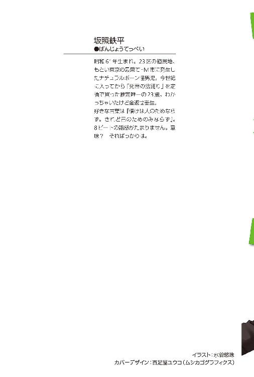
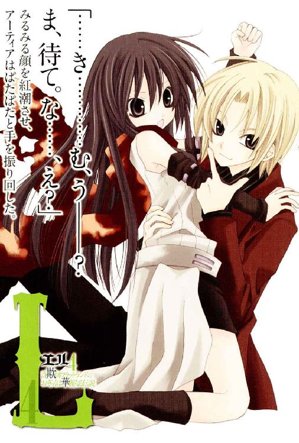
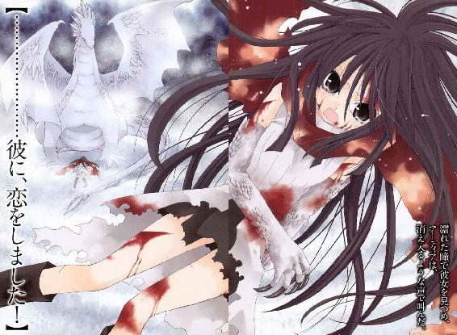
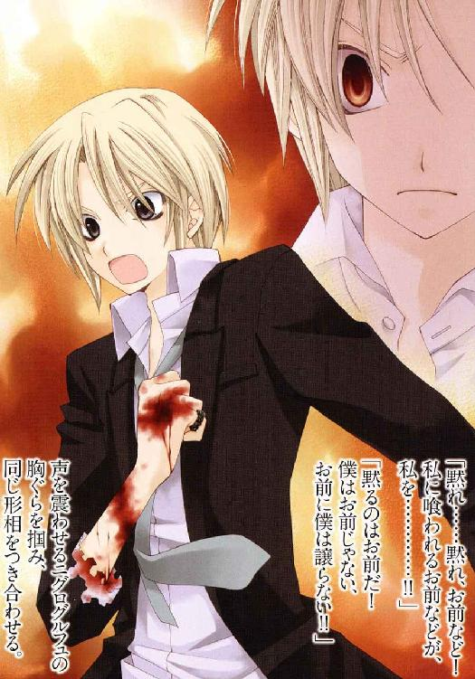
Ｌ４
詐欺師フラットランドのおそらくは華麗なる伝説
坂照鉄平
富士見ファンタジア文庫
本作品の全部または一部を無断で複製、転載、配信、送信したり、ホームページ上に転載することを禁止します。また、本作品の内容を無断で改変、改ざん等を行うことも禁止します。
本作品購入時にご承諾いただいた規約により、有償・無償にかかわらず本作品を第三者に譲渡することはできません。
本作品を示すサムネイルなどのイメージ画像は、再ダウンロード時に予告なく変更される場合があります。
本作品は縦書きでレイアウトされています。
また、ご覧になるリーディングシステムにより、表示の差が認められることがあります。
口絵・本文イラスト 水谷悠珠
キャラクター原案 水城葵
プロローグ
ここはいつでも清潔に保たれている。
煉瓦敷きの床にこびりついた血と汚物の染みは、貴重な真水で何度も洗い流した上にカーペットで覆い隠してあった。鎖で固定された寝台は微妙に歪んでいるが、マットレスと羽毛布団には最高級の絹を使ってある。運び込ませた机も傷だらけの中古品だが造り自体はしっかりしていた。専用の電信機まで備え付けられている。
腰掛けた椅子の背を軋ませて、彼は鉄格子の外へ呼びかけた。
「どうだい、結構なオフィスだろう？」
触れれば糸を引きそうに濃密な闇の向こうから、足音が近づいてくる。
小さな窓からは細く陽が射し、机には大型の角燈まで置いてあるものの、それは凝った闇を打ち崩すにはまるで及ばない。
揺れる灯りを横目に見てから、彼は肩をすくめた。
「心得ておくべきだねぇ。最後にモノを言うのは金でも権力でもない......開拓辺境で尊敬される男なら、州国反逆者であってもここまで快適に過ごせるんだぜ」
「貴様の図体には窮屈な穴蔵に見えるが」
声が、闇の向こうから応えてくる。
軽く乾いた足音を響かせ明かりの中へ現れたのは、一人の老人だった。後ろへ流した石のように白い頭髪が、衰退よりも老練の威厳を漂わせている。仕立ての良いスーツに包まれた身体は取り立てて大柄ではないものの、昔と同じ鉄芯を通したような壮健さを保っていた。少なくとも、記憶にある姿と大きな相違が見えない程度には。
鉄格子に鼻が触れるほどに近づいてくると、老人は上品な風貌にそぐわない大きな両目でこちらを凝視し、感情の枯れた言葉をこぼす。
「無様で何より。久しいな」
「十七年ぶりってところだねぇ......裁判のときは来てくれなかったからさ」
老人を見つめ、彼は小さな目をさらに細めた。
「まさか刑務所で会うとは思わなかったけど。なにを企んでるんだい？」
「勘繰るな。我儕とて一言一行、余さず意図しているというわけではない」
（嘘だ）
彼は常に意図を張っている。呼吸一つ、目配せ一つ、刻む鼓動の一つまで、全てが精妙極まる、悪魔のように抜け目ない謀略を織り成す一手に違いないのだ。......無論、それは戯言に過ぎないが、彼を前にしてそう思わずにいられる人間などいるだろうか？
いるはずがない。この男を──身一つから、イーネルアイグレス州国最大の企業『アビスパス』を立ち上げるに至った貪欲な怪老、シム・リム・アビスパを前にしては。
頭を振り、深く椅子に座り直す──クッションが薄いのだ──。
「で？ 結局なにしに来たのさ。観光の案内なら出来かねるぜ」
「《罪人竜の息吹》を押さえた」
唐突に突きつけられた言葉は、杭を打つように彼の動きを停めた。
瞬きすらせず、老アビスパは起伏ない口調で続ける。
「それを伝えに。研究資料を借用した、一応の義理だ」
「......義理ねぇ。参考までに聞くんだけど、どんな手を？」
「貴様の玩具で、バーン・フラットランドから《息吹》を複製した......くひッ。フェレトロ・シリーズが役に立った」
「ああ......聞いてるよ。完成したんだってね、あの気味の悪い連中」
半眼で腕を組み、彼は意味なく机のランタンへ視線をずらした。
フェレトロ・シリーズ。企画の概要程度は耳にしている。
一線を退いてからも老アビスパが進めていた研究──遺伝譜式という生物の組成譜から複製される、同じ顔の人間たち。同じ声の人間たち。同じ命の人間たち。
──人間たち。
──それは、本当に、人間たち？
（どうだろうね）
頭を振り、灯りから視線を外す。
「自分の財は自分以外に遺さない、その信念の徹底ぶりには素直に敬服するねぇ」
「そうだ、徹底する。だから息子にも我儕の名を与えた」
「............。忠告、してあげようか」
表情を変えない老アビスパを薄闇越しに睨みつけ、彼はにわかに声を沈めた。
「あれには触れるべきじゃあないね。あれはもう《息吹》なんて代物じゃない。もういっぺん誰かが手を出したら、その時こそ大陸史が終わる瞬間だと確信するよ。これ、負け惜しみで言っていると思うかい？」
「思うが」
「だろうねぇ。......でもボクは、一度《罪人竜の息吹》に喰われかけてるんだぜ」
ニヤリと笑い、囚人とは思えないほど丸々とした腹を揺すり上げる。
そう。負け惜しみではない──思いとどまらせようと告げた言葉でも、ない。
彼は自分の忠告など聞き入れはすまい。分かっていて、なお忠告をしたのは......それこそ一応の義理、ということになるのか。
案の定、彼は頭を振り、わずかに低めた声で答えてきた。
「変心はない。《息吹》の確保を以て、我儕のプランは最終段階へ入る」
「ふうん。ま、今際の際にでも思い返してくれよ」
「心得た」
「さようなら。お互い、今生の別れになるといいねぇ」
頷いて踵を返す老アビスパの背に、彼はひらひらと手を振る。長い白髪の揺れる背中は振り向くこともなく、すぐに灯りの境界を踏み越えていった。
響く靴音すらも聞こえなくなってから、彼は細く吐息を押し出す。
シム・リム・アビスパの、プラン。
かつて気まぐれに調べ上げたその全貌はまったく幼稚で......しかし、笑い飛ばすことの出来ない狂執に取り憑かれた計画だった。
その計画の完遂は概ね、面白い事にはなり得まい。それはシム・リム・アビスパが、辺境に生きる者では──先駆者ではないからか。
......いずれにせよ、もはや自分の与り知る話ではない。
（本当に、触れるべきじゃあなかったんだよねぇ）
忍び笑いをこぼすと、彼はランタンの明かりを絞った。途端に勢力を増した薄闇の包囲をむしろ心地良く眺めてから、格子つきの窓を見上げる。
凍てつく風が哭き叫ぶ、枯死の砂漠に囲まれたサルタナ刑務所。
してみるに、世界の終わりを見物するには絶好のロケーションなのかも知れない。
「舞台を降りたボクには関係ないけど──ふはッ！ アンタなら本当に、あの焔でも呑み干してしまうのかも知れないねぇ............せいぜい頑張ってよ、パパ」
つまらなさそうに鼻を鳴らすと、ランタンの火を消して。
父と同じ名を継いだ、複合企業『アビスパス』元総帥──シム・リム・アビスパ・ジュニアは独り、荒野の最果てで闇に沈んだ。
第一章 緋の中で起ち上がる "L"ong Goodbye
──お前は強いか
母に問われたことがある。
記憶の中で母に向き合う自分は、吹き付ける雪嵐の中ではっきりと答えた。
──強い
答えには賞讃も叱責もなかった。間を置かず、次の問いが吹雪を裂く。
──何を以て、お前は強く在る
銀色の瞳で母を見上げ、彼女は口を開いた。
──果たすため。貪欲な人間を討ち滅ぼし星守る茜鱗の使命を全うするために
──応えるため。この身に託された牙と信頼を穢さぬために
──護るため。強く在れと誓う、私の誇りと命を虚影にしないために
母が修行を課す時はいつもこの問答が行われた。何かを試すように何度も、何度も。
その都度返していた答えは本心だったはずだ。が......
彼を見ていると、あの時の答えが、まるで白々しい虚言に思えてしまう。
「..................」
無力感に四肢を喰われていく心地で、アーティア・アリア・ノルガンディアは長く暗い嘆息を押し出した。
目の前には、鉄パイプで組まれた寝台。そこに一人の男が横たわっている。
太陽を解いて編み上げたような金の髪と、どこかに愛嬌を残した端整な顔立ち。見慣れたはずの容貌に違和感を感じるのは......そこに何の感情も浮かんでいないからか。
男は死んだように眠っている。呼吸はあるが、小さく弱々しい。ひと吹きすれば消えてしまいそうなその気配の稀薄さは、命の根幹に深刻な傷を負った証拠だ。
そして、彼がそんな傷を負ってしまったのは、
（......私のせいなんだ）
もう一度、今度は更に重く息をつく──と、背後でがんっ、と乱暴な物音が響いた。
我に返った彼女が振り返るより早く、きんきんと甲高い声がぶつけられる。
「お邪魔いたしますわよ」
開け放たれた扉の向こうに一人の少女が立っていた。アーティアより年若い......というか、明確に幼い。十歳に達しているかどうかも疑わしい小さな身体は、無愛想な鉄板で覆われたこの部屋にはそぐわない華美なドレスにくるまれていた。可憐と呼べる美貌だったが、やぶ睨みにこちらを見る翡翠の瞳だけがやけに粗野な空気を纏っている。
「キャロライン」
「キャロりんとお呼びなさいと言いましたでしょう」
呟くアーティアへ即座に言い捨て、キャロラインは二つに結ったブロンドの房を払いのけた。そしてずかずかと部屋に踏み込んでくると、寝台の男へ視線を投げる。
「──フラットランドの様子はどうですの？」
「......起きない」
見たままのことを答えて、アーティアはわずかに顔をしかめた。
バーン・フラットランド──彼の名前である。
ずっと一緒に開拓辺境の荒野を渡ってきた連れ合いであり、度し難く根性のない不肖の弟子であり............そして、もっと大切ななにか。
憂色を浮かべる彼女を半眼で見上げ、キャロラインが聞こえよがしに舌打ちする。
「ならいい加減、部屋にお戻りなさい。ここにあなたが出来ることはありませんわ」
「............だが、こいつがこうなってしまったのは......私のせいだ。だから、」
「あーお黙りなさい、シャラップ！ 暗いですわウザいですわ辛気くさいですわ!!」
こちらの言葉を遮って、彼女は丁寧に梳られた髪をばりばりと掻きむしった。
「陰気に思い悩んでいれば事態が好転するとでも思って!? サングリーノヒルからこっちずぅ──────っとここにいるみたいですけれど、そろそろ鬱陶しいんですのよ！ なんですのそのひどい顔は!? あなたも辺境の女ならしゃんと──」
「──ほい。そこまでじゃい」
凄まじい早口でまくし立てるキャロラインの罵声を断ち切り、しわがれた声が挟まれた。枯木のように乾いたその声に顔をしかめる少女の後ろから、ぺたぺたと軽い靴音を引きずって、小柄な老人がひょいと顔を覗かせる。
髪もたっぷりたくわえた口髭も真っ白だったが、その背丈はキャロラインと大差なかった。こぢんまりした身体の膝下まで裾のある上着は心衣と呼ばれる東方の衣装だと聞いたが、どれだけ着古しているのか、あちこちにほつれを繕った跡が見える。
「そうポンポン言うもんではないぞい。心配するのはわかるがのう」
「心配？ 冗ぉー談は名前とファッションだけにしてくださいますこと!?」
「......いや、別に名前はおかしくないじゃろ。親にもらった大事な名だぞい」
憤然と言い返すキャロラインに、老人は寂しげにぼそりと呟いた──確かに、アギ・チーリィという彼の名は、大陸では耳慣れない響きではあるだろうが。
苛立たしげなキャロラインに嘆息してから、アギ老人はこちらへ向き直る。
「お前さんも、少し休むべきだわな」
「それは............老師、しかし」
「とりあえずは《罪人竜の息吹》も安定しとるほどに、心配あるまい。......いざなんぞ起こったときに不調でぶっ倒れとった、では話にもならんがのう」
続けた言葉は穏やかだったが、反論を許さないほど強く突き刺さる。
大地を砕き、海を焦がして、一切を灼き亡ぼす狂気の火焔《罪人竜の息吹》──太古の昔、この星へ牙を向けた罪人竜ニグログルフュが遺した禁忌の呪物である。
その追跡を命ぜられたアーティアの手をすり抜けバーンに取り込まれた《罪人竜の息吹》は、着実に彼の命を蝕んでいた──自分の油断が、彼を危険に追いやったのだ。
沈痛に吐息をこぼす彼女の背を叩き、アギはことさらに軽く言ってくる。
「責任がないとまでは言ってやれんが、お前さんが独り占めする罪でもあるまいよ。あの場には儂らもおったのじゃからして」
「わたくしは無関係ですわよ」
半眼で呻き、キャロラインが頬を膨らませた。
「とにかく、責任の所在なら後で好きなだけ追及して差し上げます。いまから食事だけでもとってきなさいな、じきに本社に到着ですわよ」
溜め息混じりの彼女の言葉に、ふと視線を横へ流す。
鉄枠にはめ込まれたガラスの向こうを、外の景色が勢いよく真横へ流れていた。
薄く曇った灰色の空に手入れの行き届いた街路樹、均一に切り出された敷石で舗装された通り......いつの間にか街中に入っていたらしい。塩漬け豆の樽に登り──背丈が足りないのだ──窓の外を眺め、アギが感じ入ったように頭を振った。
「なんとまあ......鉄道とは便利なモンじゃのう。サングリーノヒルから五日で到着とは」
「恐れ入りまして？ まあ、専用路線だから出せる速度ですけれど──」
「──ご歓談中、失礼します」
言葉を遮り、扉から静かな声が滑り込んでくる。
いつの間にか部屋の外に、バトラースーツを着込んだ男が立っていた。彼は几帳面に撫でつけた髪と同様に抜かりなく一礼し、薄い唇を笑みの形にする。
「《罪人竜の息吹》の定期制御に参りました、キャロライン様」
「............」
「？............あ。キャロりん様」
「許可します。とっととお済ませなさいな」
尊大に胸を反らすキャロラインへもう一度頭を下げて、男は寝台で眠るバーンへ歩み寄る。彼がその胸に手を添えた瞬間、虚ろだったバーンの表情がわずかに歪んだ。
思わず自分の腕に爪を立てて──アーティアは、掠れた声を押し出す。
「まだ《罪人竜の息吹》を鎮めておけるのか？ トレスと言ったな、お前」
「ご心配なく。私に出来るのは間に合わせ程度の処置ですが、本社の施設までは暴走を抑えておけるでしょう。......それと、失礼ながら私はトレスではありません」
「なに？」
「三番目は八十一時間前に耐用限界に達し廃棄されました。四番目と五番目も同様に。私は六番目の『棺』です。......さすがは《罪人竜の息吹》、活動の沈静だけでも消耗は凄まじいものですね。手配した予備も、私で打ち止めです」
「............っ」
微笑を崩さず、穏やかな口振りで言ってのける男──セイス・フェレトロに、アーティアは歯を軋らせた。腹に沈んだ不快感をやり過ごすように、窓の外を見る。
街の風景は先程と変わりない。整然とした光景の中、時折、派手な色遣いの看板が通り過ぎていった。どれも内容は同じようだが、何が書かれているのかは分からない。
（......起きていれば、教えてくれたのかもな）
ほぼ無意識に、視線を寝台に向ける。
どこかを訪れる度、バーンは豊富な知識を彼女に披露してくれたものだった。街の流行や噂話からくだらないジョークまで、大抵はどうしようもない与太話だったが......
思考を止め、もう一度窓の外を見る。小綺麗に纏められた物珍しい街の景観にも、何の興味も湧かなかった。
中央都市。ワイアットハート。
今はただ、その名前だけ頭に残る。
「研究班、ラボのコンディションを二単位繰り上げですわ！ 抑制しているとはいえモノは《罪人竜の息吹》ですわよ、安定を最優先に！ 迅速になさい────！」
停止した列車から飛び降りるなり、集まってきた男たちへキャロラインが矢継ぎ早に指示を飛ばす。二回り以上も歳の離れた少女に、しかし男たちは不平もなく従っていた。
その様子を睥睨する彼女の隣に立ち、アギは口髭をさすって呻く。
「大した貫禄だのう、お嬢ちゃん」
「当然です。人を従えるのはアビスパ家の者として当然の権利であり、義務ですわ。......いいからすっこんでなさい、邪魔ですわよジジイ」
「思いやりが足らんぞい、クソガキめ」
ぞんざいに言い捨てるキャロラインへ舌を突き出し、アギは周りを見回した。
鉄道のステーションはそもそも馴染みのない場所ではあるが......ここが一般的な基準から大きく逸脱しているということだけは確信があった。
街の中心にそびえる巨大な建物──その内部に設けられたホームは上質の石材で組まれており、柱という柱に細緻な彫刻が施されている。屋内とは信じがたい広大な空間をせわしなく行き来するのは、いかにも学者然とした風体から上等の黒いスーツ姿まで様々だったが、その全員が胸に、橙と黒に塗り分けられた菱形の徽章を着けていた。たった今降りてきた列車の上部を見れば、そこにも同じ菱形のプレートが掲げられている。
「......これが『アビスパス』......州国最大手企業の本陣というわけかいな」
「本陣は、言い得て妙ですね」
胡蜂の腹を思わせる縞模様を見上げるアギに、粛々と応える声があった。
さざ波一つない海のように、平坦な声──ただしそんな海は有り得ないが。そこまで踏まえてなお、その声に対する印象は変わらなかった。凪いだ海。
バトラースーツの男、セイス・フェレトロがこちらへやってくる。
「未踏の開拓辺境、荒野の災厄、あるいは喉元を狙う凶刃と晩餐に盛られた毒。『アビスパス』は常に戦い続けているのですよ......ここ、中央都市を本陣に」
「おっかないのう。商いごとっちゅうのは、もっと理性的だと思っとったが」
「いえいえ、算盤の話ではございません。──我々は辺境と戦争をしているのです」
ふざけた調子のアギに、セイスは薄い笑みを浮かべて見せた。
その時、すぐ横を黒服の男たちが駆けていく。三人がかりで寝台に滑車を付けたような簡素な台車を押していた。その様子を横目に見やり......アギは、台車に寝かされたバーンに鋭い視線を注ぐ。すれ違った瞬間の観察に過ぎなかったが、恐らく──
「──《罪人竜の息吹》は心配ありません」
黒服たちの更に後から投げられた声が、彼の推測を先回りした。
「強引な介入ですが、巧く命の脈流を鎮めています。連中が同じ精度で制御を続けられるなら......暴走の心配もないかと」
敷石をつま先でなぞるようにして、アーティアがこちらへ歩いてくる。茜色の襟巻を縋るように掴んだ彼女は、控えめに言っても憔悴して見えた。
「ついて行かんで、ええんかい」
「────いま、私が出来ることはありません」
「自覚が遅すぎですわ」
やや間を空けて頷くアーティアに、こちらは間髪入れずキャロラインが言い捨てる。
「ま、手間が省けましたわ。ぐずる子供を引きずって行くのは面倒ですもの」
「......？ どこへ行くと？」
惜しみなくアピールされた言葉の棘より、そちらの方が気に留まったらしい。
答えたのは皮肉を流され不満そうなキャロラインではなく、傍に控えたセイスだった。
「我が主にお会いいただきます。『アビスパス』創設者にして現総帥代行シム・リム・アビスパ──ひいてはキャロライン様の義理の祖父殿からお話がございますので」
「いちいち説明してやる必要がありまして、セイス？......忠告して差し上げますけど、拒否はしない方が賢明ですわよ。同じ精度での制御、とやらを望むのなら」
「そのためにここへ来た。......逆らうわけがない」
「賢明ですこと」
呟く彼女に、しかしキャロラインは不機嫌な面持ちを崩さなかった。ドレスの裾を翻らせ、ついてこい、という合図か肩越しに指をくいくいと曲げてみせた。
彼女が向かっているのはホームの端に四つ見える門の内、一番小さなものである。バーンを連れた男たちが向かっていったのとは、構内を挟んだ反対側だ。
門の先は既に社屋になっているようで、ホームより数段豪勢な造りになっていた。先が霞むほど長い廊下に多くの扉が並んでいる。辺境成金がこぞって競う、贅を尽くした虚飾ではない。それが相応であるという確信の元に飾られた、ひどく禁欲的な豪勢さ。
「......しかしなんだのう。儂もこの街は初めてではないが」
人を縦に三人も積めそうな天井を見上げ、アギはのんびりと髭を撫でた。
「いつ訪れても思う。辺境のどんな開拓街より、ここは変わっとるの」
「だから中央都市なのですわよ。州国の心臓、荒野の例外。文明と安全が保障された、真に人間が生きるべき理想郷ワイアットハート──同じ街なんてあり得ませんわ」
ぶっきらぼうな声で即座に答え、キャロラインが肩越しに振り返る。
「わざわざ急げと言ってあげなければ、無駄口を慎むこともできませんの？」
「老骨には孤独が応えるでの。無言ちゅうのは寂しいもんだぞい」
「なら劇場通りへでも繁華街へでも消えていただいて結構ですわよ、別に同行しろとは言ってません。......ていうかあなた、なんでここにいますの。大体あなた誰ですの？」
「いや、いまさらそれを訊くんかい」
本当にいまさら思い当たったのか、キャロラインが足を止め睨みつけてくる。
「まあ、多少なりとも縁のある嬢ちゃんたちでの。心配くらいはさせてもらえんかい」
「──ふんだ。ま、大人しくしてるなら構いませんけれど」
子供っぽく、と言うか年齢相応に尖らせた口からぞんざいに言い捨て、キャロラインは再び踵を返した。振り返りざま、冷たくアーティアを睨んでいく。
「いい加減、その不景気なツラをなんとかなさい。無様すぎて見苦しいですわ」
「......そうだな」
引きつるように喉を震わせた彼女の口元に、小さな苦笑が浮かんだ。
「みっともない有り様だ。............食事くらいはとっておくべきだった」
「......ふむ？」
「いまさら遅いですわよ。空きっ腹抱えて、後悔なさい」
突き放すように言って歩き出すキャロラインに、首をすくめたアーティアが続く。ぺたぺたと薄い布靴を鳴らしてその横を歩きながら、アギは横目に彼女を見上げた。
視線を感じたか、アーティアの銀色の瞳がこちらを見る。相変わらず生彩の欠けた瞳。しかし、その眼差しは揺らぐことなくアギを見据えていた。
視線が交わったのは一瞬。その一瞬で事は足り、後は黙って歩いてゆく。
「──ここですわ」
ややあって立ち止まったのは重そうな扉の前だった。といって他の扉とどう違うというわけでもない。先に立ったセイスがその扉を押すのを眺め、アギはぽつりとこぼす。
「存外、普通の部屋だの。もっと大物ぶって飾り立てとるもんだと思っとったが」
「そうですね。執務室の方は、もう少し見栄えの良い戸板を使っていますが」
にこやかに答えて、セイスはすっと脇に退いた。開いた扉をさっさとくぐっていくキャロラインに頭を下げてから、二人を促しつつ後を続ける。
「こちらは我が主の部屋ではありませんので。......どうぞ中へ」
顔をしかめてゆっくりと歩き出すアーティアに続き、アギも扉をくぐった。
気負わない、軽い足音を引きずって。
その部屋に入ってまず覚えたのは、圧倒的な息苦しさだった。
かなりの広さがある床には隙間無くタイルが敷き詰められている。大小のロッカーが並ぶ四方の壁から、一段深く掘り下げられた中央まで段差の浅いステップが刻まれており、古い野外劇場のように見えたかもしれない──
（いや）
その連想を、アーティアは自ら投げ捨てた。
逆立ちしてみたところで劇場になど見えない。この部屋からはそういった余裕が切り離されている。片隅に押しやられた大きなデスクに、せめて気の利いた花瓶でも置いておけばよさそうなものだが、愛想のないペン立てと製図板しか乗っていなかった。
そして、部屋の中央。
あるいはそこに佇立する人物こそ、この息苦しさの原因なのかも知れない。
「ビジネスは双方の価値意識に相違があるから成立する」
緩慢に振り向く彼は、老人であった。だが、ただの老人ではなかった。
長い白髪が真っ直ぐ流れているのは、彼の背筋が真っ直ぐに伸びているからである。威圧するでも誇るでもなく自然と胸を張り立つその姿は、歳月を経て研ぎ澄まされた風格をすら感じさせた。支配し、従える者の風格。
「安い......とは言わないまでも、都合の良い条件であったはずだがな。いまフラットランドの命を保障できるのは、我儕のみであるのだから」
「......なにが言いたい」
「睨むな。気分を害する」
唸るアーティアへ即座に返し、老人は視線を外した。
キャロラインがドレスの裾を摘み、可愛らしくお辞儀する。
「お待たせしました、お祖父様。アーティア・アリア・ノルガンディアを連れて参りましたわ............あと、やたら小汚いオマケもついてますけれど」
「儂のことかいな」
「この場で小汚いのはあんたら二人だけですわよ」
キャロラインに睨まれのんびりと自分を指さすアギを、老人──シム・リム・アビスパはちらと一瞥した。そしてすぐさま興味を失ったように頭を振る。
「構わん。キャロライン、下がっていい。ラボの方を任せた」
「心得ましたわ。......セイス、後を頼みますわよ」
「お任せ下さい」
きっちりと一礼を返し、彼は閉じたばかりの扉をまた押し開ける。ちょこまかとせわしない歩調でキャロラインが退室すると、老アビスパは独り言じみて呟いた。
「......あれは少々、うるさい」
「しみじみ言うようなもんでもないと思うがの。他愛ないもんじゃろ」
「貴様も竜徒か？」
苦笑混じりのアギの返事は聞かず、彼は口調を変えずに言ってきた。
わずかに身構えるアーティアを視線で制し、アギはのんびりと答える。
「竜徒、星守る茜鱗、辺境の災厄──まあ色んな呼ばれ方をするがの。己が本質を求めて深き竜の記憶へと潜り、星を巡る命の源流へ回帰する......そういった連中のことを言っとるのなら、儂は竜徒じゃよ。嬢ちゃんと同じ、のう」
「《息吹》を扱えるということか」
「恐らく期待には添えんが。《罪人竜の息吹》なんて代物は手に負えんぞい」
肩をすくめるアギに、老アビスパは落胆した様子もないようだった。ただ、わずかに覗いていた興味の色が、双眸から完全に消え失せる。
竜徒は、あるいは辺境の覇者──竜は《息吹》を吐く。
それは時に身も凍る吹雪であったり、命を涸らす砂嵐であったりするが、それらはすべて生物の内に眠る太古の竜の記憶なのである......と、少なくとも故郷である竜徒の里、白峰ノルグではそう教えられていた。
視線を虚空に上げて、老アビスパはそこに書いてある文字を読み上げるように呟く。
「......遥か昔、この星を灼き尽くそうとした狂気の竜ニグログルフュ......その身を討ち滅ぼされ、なおこの世に残った残滓、それが葬星の火炎《罪人竜の息吹》。彼の者の狂気はいかな力持つ竜でも滅ぼすことは叶わなかった」
そこで言葉を切り、彼はじっと睨むアーティアを視線だけで見下ろした──掘り下げられた位置にいながら、確かに見下ろした。
「その焔を乗りこなしたとすれば......くひッ、こう言えまいか。人間はついに、大陸史にあって常に脅かされてきた最悪の一要素、竜を凌駕したのだと」
「それは傲慢だ......《罪人竜の息吹》は人の手に余る！」
「ならば人は人を超えた！ フェレトロ・シリーズがそれを証明した！」
反射的に叫び返した彼女へ、老アビスパはそれ以上の声量を叩き返してくる。
思わず息を呑み、アーティアは背後を窺った。そこには最後に見た時と同じ、そして初めて見た時から変わらない微笑を湛えた、セイス・フェレトロの姿。
言葉を止める彼女に、老アビスパは嘲るでもなく告げる。
「あれはその為に造り出した。準生物性オーガンライト鉄鋼をもって生体情報に介入し、操作する......《息吹》は脅威だ。だが少なくとも、未知なる脅威ではなくなった」
「未知でなければ対応できる。対応ができれば、利用することもまた不可能ではありません。実験的に、私に《罪人竜の息吹》の片鱗が複製されているように」
「......チェルシーのことも、実験だったというつもりか」
口を挟むセイスに、アーティアは険の混じった声で呻く。チェルシー。複製された《罪人竜の息吹》を植え付けられ、命を喰らわれた友人──
睨みつける彼女へ、セイスは微笑を崩さずやはり穏やかに答えてくる。
「貴重な資料でした。この成果で、より確実に《罪人竜の息吹》を抑制できます」
「それは本来、貴様の役目であったはずだがな。くひッ──アーティア・アリア・ノルガンディア............白峰ノルグの『棺』よ」
──身体が硬直するのを抑えることは出来なかった。
「『棺』......《罪人竜の息吹》を封じ、消滅させる命の楔。始祖竜の系譜に連ならぬ造られた生命か、くひッ！ 竜徒は下らぬことを考える」
「......どうにも、信じがたいんだがのう」
動きを停めたアーティアを視線から庇うように、アギが一歩進み出る。
「それは本当の話なんかいな。始祖なる竜はこの星に生きるあらゆる命の祖だぞい。彼の竜に連ならぬ命など、矛盾しとるよ」
「その通りだ竜徒。だから不安定な存在なのだよ、『棺』は」
反論もなく頷いて、老アビスパはおもむろに一歩、横へ退く。
そこには小さな容器が設置されていた。部屋の大きさを考えれば馬鹿らしくなるほど慎ましやかな円筒形のガラスで、林檎箱ほどの鉄の箱に固定されている。円筒の中は流動する泥のような物体で満たされていた。
「......察するに、それが？」
「〝天涯の紅泥〟、我儕はそう呼んでいる。《息吹》により命を断った屍肉を四半月、薬液と共に鋼鉄の箱に詰め、始祖竜の記憶を洗い流した命の器だ──くひッ。遺伝譜式の操作にも、《罪人竜の息吹》の制御にも耐えうる代物よ」
淡々と言い、老アビスパは紅色の泥が詰まった円筒を示した。
「この〝天涯の紅泥〟には《罪人竜の息吹》の片鱗を複製してある。形成階梯からの複製実験だ。『棺』、貴様はこの《息吹》を御せるはずだが────？」
「............できない」
無意識に逸らしかけた視線を、渾身の力で合わせ続ける。
この男の話す通り、自分が『棺』なる存在なのかどうかは分からない。
ただ確かに自分は《罪人竜の息吹》を制御することができた。バーン・フラットランドと辺境を彷徨う間、幾度も《息吹》の暴走を鎮めたことがある。
だがそれは、同時に彼の命の炎をも削ぎ落とす行為だった。
自覚もないまま彼を死の危険に晒していた──それが分かった瞬間、《息吹》に触れることができなくなった。《罪人竜の息吹》を抑えることはおろか、信頼と誇りと共に母から託された《息吹》も彼女に応えてくれない。
唇を噛み拳を震わせるアーティアを、老アビスパはじっと見返す。
「だろうな。できるのなら、フラットランドを引き渡すわけがない」
「............」
「多少なりとも干渉できるなら役にも立つかと思ったが、くひッ。そのざまでは使い道も無いな。......せいぜい、ウーフィーグリッドを牽制する程度か──セイス」
「心得ております、我が主」
その返事以外に何かが聞こえたわけではない。
だが振り向かずとも知れる──セイスが、扉を塞ぐように立ち位置を変えた。
動じた風もなく、アギが緩んだ声を上げる。
「邪魔者は消す、か......変わらんのう。州国の心臓、荒野の理想郷とまで謳われる都市を築こうと、この国の人間は開拓辺境のやり方を変えられん。良かれ悪しかれ、な」
「くひッ......消すのは邪魔者ではない。不要になった者だ」
奇妙な音で鼻を鳴らし、老アビスパは一瞬だけ歯を覗かせた。
「フェレトロ・シリーズは《罪人竜の息吹》を複製し、いずれも高水準の制御能力を実現した。あとはフラットランドからより完全な複製を成功させるのみ......《息吹》の制御もできない『棺』に、なんの用がある？」
「高水準の制御......お前さんを巻き込まない程度の精度、というところかの？」
振り向くアギに、セイスは無言の笑顔で答える。彼を取り巻くように、歪んだ《罪人竜の息吹》の脈動が、解き放たれる瞬間を待っている──
頭を振り、アギは苦笑に似た溜め息をこぼした。
「と、いう訳じゃ。覚悟は決まったかいのう？」
「はい。......二つ、気がかりなことがなくなりましたので」
固めていた拳をするりと脱力させ、アーティアは静かな声をあげた。
「シム・リム・アビスパ......貴様はまだ、あの男を殺せない。そうだな」
「バーン・フラットランドが現在、『アビスパス』にとって最重要人物であることは認めよう。ゲスト、と呼ぶには特異な立場ではあるが。くひッ」
「それで本当に安心できた。もう一つ、安心できたのは......」
老アビスパの返事に頷き、彼女は茜色の襟巻を引き上げた。
そしてアギへ合図するつもりで身体の重心を下げ、冷たく息を吸い込み。
「......貴様が心底、星守りを侮っているらしいということだ」
瞬間、彼女は銀色の瞳を見開いた。
床を削るほどの勢いで急激に身体を捻る。そのまま、三日月に振り抜いた肘の反動と踏み出した脚の力を真っ直ぐに繋ぐイメージで放った鋭い掌底が、セイス・フェレトロの顎を突き上げた。意識を刈り取る硬い手応えが全身に響き渡る。
同時、身体を入れ替える形で部屋の中へ向き直ったアギが喉を震わせた。
【霞在れ！ 炯々にして犬畏れ、煌々をして猿震う！】
数本、数十本の音を縒り紡ぐような声──竜の咆吼が轟き、辺りが白く霞んでいく。
常にたゆたい掴み得ぬ、雲の《息吹》が広い部屋を満たした瞬間、アーティアは崩れ落ちるセイスを突き飛ばし、扉を蹴破って外へ転がり出た。
広い廊下には、十数名の黒服の男が驚くでもなく彼女を睥睨している。言葉はない。それぞれ構えたスパイク付きの棍棒が、明確に何かを主張してはいたが。
「どけ────！」
叫び、床を蹴る乾いた音が破裂する。高い天井にこだました踏み込みの余韻が消える前に、彼女は一番手前にいた男の頬へ肘を打ち付けていた。
ぐりん、と男の眼が裏返った直後......真横から、別の男が棍棒を振り下ろしてくる。
手慣れている──酒場の喧嘩ではない、相手の命を断つための、戦いに。
舌打ちする余裕もない。その場で宙返りするような格好で頭を投げ出す。そして曲芸じみた動作にぎょっとする男の腕へ、回転した勢いのまま踵を叩きつけた。
折れた腕を抱える男の背を蹴り、真横へ跳び上がった刹那......死角から繰り出された数本の棍棒が脇腹を穿つ。吐き出しかけた吐息を強引に断ち、跳び越えた男の腕を着地ざまに逆へ折り曲げる。苦悶に呻く彼の膝裏を踏み抜き、更に前進。
出会い頭に三人を打ち倒されても男たちに動揺はない。互いの隙を補完するよう動く彼らを、アーティアは鋭く睨みつけ──
「どうやら用心棒だの警備員だのといった輩ではないようだのう」
──突如、背後から自分を追い抜いていった声に思わず速度を緩めていた。
長い裾を躍らせて跳躍したアギが、左右の男の顎先を同時に蹴り上げる。大した力を込めた様子もなかったが、二人の男は一声もなく昏倒した。
ぺたし、と柔らかい音を立てて床におり、彼は肩をすくめる。
「ある意図のもと徹底的に練り上げ磨き上げた戦人............こやつらは兵士じゃ」
「兵？」
聞き慣れない言葉に顔をしかめる彼女には答えず、アギは眠たげに首を捻った。
「さて、なんとする？ この頭数にカチ込むのは分が悪いぞい」
「なら悩むまでもない。............三十六計、決めこみます」
真顔で言い放った彼女の答えに、アギは一瞬沈黙してから、小さく声を弾ませた。
「ぶっしゃっしゃ。然り、然り......そうこなくちゃいかん」
奇妙な声で笑い、アギは懐の合わせに手を入れ土焼きの茶碗を取り出す。そしてそれを指先で踊らせてから、おもむろに前方へ放り投げた。
緩い放物線を描く茶碗が黒服に迫った瞬間、アギは両掌を強く打ち合わせ、叫ぶ。
「醒！」
瞬間、茶碗が空中で砕け散った。
炸薬でも使ったような爆音が廊下に響き、土煙と砕片が飛び散る。それ自体は極めて小さな爆発だったが......土砂崩れでも起こったように濃密な土煙が膨れ上がった。突如として辺りを閉ざす土煙に、男たちは戸惑いを見せる。
（......っ！）
自身の視界も閉ざされたその空間へ、アーティアは反射的に飛び込んでいた。
闇雲に振り回された棍棒がすぐそばを通り過ぎていく。掠めたスパイクに背や腕を切り裂かれながら土煙を抜けると──先んじて駆け抜けていたアギが、渋い顔で廊下に立ちこめる煙を睨んでいた。
「さらばじゃステファニー。お前さんで飲む豆茶はひときわまずかったぞい」
「あの茶碗............竜工芸だったのですか」
「凩竜の爪を砕いて練り込んだ土での。頑丈で便利だったんじゃが......ま、ええわな」
肩をすくめ身を翻すアギに続き、彼女は騒然とする廊下へ背を向けた。
竜の身体の一部を使い作られる道具、竜工芸は竜の力を宿す。
アギのように触れずに力を放つほど精緻な代物はともかく、簡単な物ならアーティアにも作ることができた。以前、バーンに災厄祓いのまじない符を編んでやったが、竜の髭を彼女の髪で代用したそれは大した力を紡ぐこともなかった......
ふと、足を止める。
廊下の先は、無人のホーム。先ほど乗ってきた列車の姿も既になく、うるさいほどの静寂が彼女を取り巻いていた。ホームの反対側に見える門を見つめる彼女に、いつ戻ってきたのか──あるいはそこで待っていたのか、アギが淡々と言葉を投げる。
「これからどうするつもりかの？」
「白峰ノルグへ。里長ウーフィーグリッドに、真実を糾します」
即座に答え、アーティアは門から視線を外す。列車のないレールの先、外へと延びる鉄の道を見やる彼女を見上げ、アギは試すように訊いてきた。
「フラットランド。会っていかんでいいんじゃな？」
「必要っ──」
わずかに震えた言葉を一度呑み込み、あらためて、拳を握って言い直す。
「必要ありません。......未熟者の虚勢ですが、これ以上無様を見せたくはない」
「やっこさんは寂しがると思うがのう」
「そうかも知れません」
ほんの小さな苦笑を浮かべて、アーティアは目を伏せた。バーンに渡した護符──頼りになれない、小さな指輪のことを思い返す。
自分の髪を使った竜工芸を渡すことは、相手に〝心〟をも託すことを意味する。
星守りの里にはそんな慣習が伝わっていた。それは古い迷信に過ぎず、アーティアが髪を使ったのもあくまで代用でしかなかったが......
「......老師はどうされるのですか？」
「無論ノルグの里へ向かう、というか、お前さんが死にそうな面をしてなけりゃここまでついてくるつもりもなかったわい。無用の心配でほっとしたがのう」
人当たりの良い笑みを浮かべて、アギは髭を撫でる。
「ウーフィーグリッドが命の操作なんぞという禁忌に手を出しているなら、止めるなり叱るなりしてやらんといかんからの。あいつ、友達少ないんじゃい」
茶目っ気たっぷりに舌を出し、彼は不意に表情を真剣なものにした。
「道を無視して強行するなら、ノルグの里まで半月かかる」
「不休をもって、十日で渡ります」
「ま、そんなところか。儂も若くないからのう」
飄々と答えるアギに苦笑し、彼女はもう一度、バーンが連れて行かれた門を見やる。
......いまさら会う必要はない。別れは、五日もかけて告げてきた。
黒服たちの足音が近づきつつある。頭を振り、アーティアはホームの外へ駆け出した。
この期に及んで余計な時間をとってしまった自分に舌打ちする。
未練が過ぎる。
何も今生の別れではない──そうさせないために自分は行くのだ。
（だから）
最後の感傷を振り切るつもりで、震える唇を開く。が。
【いまは............さようなら】
こぼした言葉はそのまま心臓を打ち砕きかねないほど、重たかった。
第二章 赤から目覚める Daze"L"ack Days
バーン・フラットランドという男の、なにが特別だったわけでもない。
誰でもない誰かのまま過ごす人生に納得できず開拓辺境へ飛び出した、イーネルアイグレス州国をふらつくチンピラとしては代わり映えしない過去を持つ。顔の良さと口の上手さを利用し女性を甘く酔わせては恩恵に与かる詐欺師として、無為に辺境を彷徨い数年。転機は、西部の開拓街アビスパスにて訪れる。
竜徒、アーティア・アリア・ノルガンディア。
彼女と関わったのも《罪人竜の息吹》などという厄介な代物を宿すはめになったのも、すべて偶然でしかなかった。その偶然にすべてが一変した。
強く、鋭く、聡明なくせにどこか隙の多い、暖かい雪のような少女。彼女と出会い、惰性で漂うだけだった自分は、初めて荒野を渡っていく理由を掴めたのだ──
──本当に？
（......？）
問われて、バーンは振り返った。
小さな村の入り口に立っている。山間だが土が良く、地下水が豊富なおかげで作物には困らない。春先は蛇が多く、うっかり草むらに踏み込むと大変なことになる......
民家の土壁に入ったひび割れや軒先に積まれた薪の山まで、その風景にはいちいち見覚えがあった──そこは、彼が生まれ育った村だった。
（夢を見てる）
夢だと自覚しながらも目を覚ませないことが、彼には度々あった。今も棒立ちになったまま、無人の故郷を眺めて身動き一つとれずにいる。
──本当に？
もう一度、先ほどと同じ声。
村は井戸のある広場を中心に、斜面をならした小道が延びていた。その一本に──彼の生家に繋がる道だったが──誰かが立っている。意識の空隙から滑り込んできたように、彼はいつの間にかそこにいた。
彼......おそらく男だ。距離があるせいで容貌が判然としないが、その洒落たジャケットは男物である。こんな田舎の貧村には不似合いな風体ではあった。
──本当に、あの娘と出会ったのは幸いだった？
先ほどから問いかけてくるのはあの男なのだろうか。遠く離れているように不明瞭だが、すぐ傍で囁かれているような気もする。どのみち、答えは簡単だ。
（本当だよ。僕はあの子に、）
続けようとした瞬間......耳鳴りのような音に頭を貫かれ、バーンは身をすくめた。
──嘘だ！ あの娘が災厄を運んできた！
（嘘............、!?）
顔を上げ、愕然とする。
村が燃えていた。家も広場も打ち砕かれ、禍々しく猛る焔で赤く染められている。火の粉を孕んだ風が首筋を撫で、そこに鋭い熱と痛みを刻みつけていった。
慌てて踵を返しかけ、脚を止める──故郷の村は消え去っていた。
彼は焔の中に漂っている。ひょっとしたら落下しているのかも知れないが。上下も分からない真っ赤な世界の向こうから、男の熱狂的な大声が聞こえてくる。
──あの娘が焔を持ってきた！ お前は、あの娘に殺された！
（なに......言ってるんだ!? お前............誰なんだよ!?）
火の粉の激しさに呼吸も出来ない。吐いたつもりの絶叫は、声にもならず炎に飲まれていく。その中で、嘲るようにこちらを見る男と目が合った。
目が、合った......顔も見えない相手と、確かに目が合ったのだ。
淵のような瞳は、寒気がするほどに深い。深くて暗い。朱い。赤い。赤い──
赤い。
赤一色、それしかない世界の中心を見つめてバーンはぼんやりとしていた。
悪い夢を見ていた気がする。はっきりとは覚えていないが、面白くない夢ではあったはずだ。その証拠に頭の芯からつま先まで、全身がひどい倦怠感に包まれている。瞼を持ち上げることすら億劫で仕方がない。
......赤いはずだ。閉じた瞼に光が射しているのだと悟り、重たい瞼をこじ開ける。
そして、
「む、目覚めたな小僧」
「ぎゃあああああああッ!?」
視界一杯に広がる厳つい男の顔に、渾身の悲鳴を叩きつけた。
横たわる彼を覗き込む格好だったその男は飛んでくる唾を手で避けながら渋面を造り、巨大な身体を揺らす。
「人の顔を見て悲鳴を上げるとは無礼千万である。猛省しろ、小僧」
「ンなガラガラ蛇でもビビって逃げだしそうな顔を寝起き一番にアップで見せられりゃ、悲鳴くらい上げるに決まってるだろ!?」
小さなランプを掲げる男に涙声で叫び返し、バーンは跳ねるように身体を起こした。いきなりレッドゾーンに叩き込まれて喘ぐ心臓を押さえながら辺りを見回す。
見覚えはない。目立つ内装もないシンプルな部屋だ。壁が白いのは漆喰でも塗られているのかと思ったが......見れば最高級品の雪花石膏らしい。げんなりと息をついて、バーンはとりあえず、この部屋の中で唯一見知った存在である男へ顔を向けた。
「えっと......まず、なにから質問すれば話がスムーズ？」
「貴様がどこまで覚えているかによるな」
ぞんざいに答えて、男は腕組みする。尖った筋肉で膨れ上がった灰色の服の上腕には剣に貫かれた竜の意匠──州国議会最大の派閥【抗竜党】の紋章が縫いつけられていた。
辺境最強の開拓護衛軍〈抗竜党必死開拓団〉団長、ブロック・キャリバー。
「この部屋のことを知りたいのなら、ここは中央都市ワイアットハートの『アビスパス』本社だ。その研究施設の一室である」
「......中央、都市？ 『アビスパス』......本社？ マジで？ なんでそん──」
混乱する頭を押さえようと腕を持ち上げた所で、バーンはふと、違和感に気がついた。
肘の内側。静脈から、細いチューブが垂れ下がっている。
「どおおおぉぉぉおぉおぉッ!? なッ、なな、なぁああぁッ!?」
「ん？ 小僧、その管を取るなよ。死ぬそうだ」
「はあ!?」
裏返った叫び声を上げ、彼は掴みかけたチューブから手を離した。
彼は芋袋に頭と腕を通す穴を空けたような、簡素な服を着ている。生地自体は軽くて良い品のようだが......こんな致命的にセンスのない服を買った覚えはない。
更に、繋がれているのはチューブだけではなかった。胸や脚にはテープで何本ものコードやケーブルらしき物が止められている。中には腕のチューブと同じように先端の針で突き刺さっている物もあった。痛みを感じないことが余計に不安を煽る。
脳裏に、先ほどのブロックの言葉がよぎった──研究施設──
「ま......まさか、人体実験？ 僕をモンスターに!? バカな、それじゃ三文小説だ！」
「お望みならそうして差し上げてもよろしいですけれど」
絶望的な心地で叫ぶバーンに答えたのは、ブロックではなかった。
白い壁の一部に、四角く亀裂が入る──分厚い扉を開けて入ってきたのは、この部屋ではひときわ目立つ鮮紅色のドレスにくるまれた少女だった。そのままガラスケースに飾っておきたくなるような愛くるしい容姿だが......その矮躯に、大人でも裸足で逃げ出す悪態と雑言と行動力が詰まっていることを、彼は心得ていた。
「その前に、果たすべきことは果たしていただきますわよ。バーン・フラットランド」
「やあキャロりん、久しぶりだね。元気してた？」
仏頂面で腕を組む少女──キャロライン・リム・アビスパは、愛想笑いを浮かべるバーンを険悪に尖らせた翠色の眼で睨みつける。
「あなたよりは健康ですわよ。......死に損なった目覚めはいかがでして？」
「や、それなんだけどさ。僕なんだってこんなところ、に............」
困惑顔で言いかけた直後......水門が決壊するように、記憶の奔流が噴き上がる。
大坑道サングリーノヒル。暴走する《罪人竜の息吹》。倒れる自分に、唖然とするアギ・チーリィ。そして────
「ッぁ、う......あ............!?」
「......ふむ。思い出したか」
「多少は記憶に障害がでると思いましたけれど......ま、僥倖ですわね」
記憶の圧力に軋む頭を抱えたバーンを、事情を心得た様子の二人は渋面で見ていた。キャロラインはとことこと近寄ってくると、腰に手を当て溜め息をつく。
「サングリーノヒルで、あなたは《罪人竜の息吹》の暴走に呑まれかけたのですわ。わたくしが間に合わなければあの場で自我を喰われていたでしょうけれど」
「......き、君が？ 君は《息吹》の暴走を止められるって言うのかい？」
「正確には『アビスパス』の技術力、ですわね」
小さな口を尖らせ、キャロラインはバーンの背後へ顎をしゃくる。
視界の外で気付かなかったが、そこに大きなラックが据え付けられていた。金網を張った物々しい代物で、何かの装置らしき物体が幾つも並んでいる──先ほどのコードやチューブはそこに繋がっているようだった。
彼女はラックから褐色の液体が入った小瓶を取り出し、こちらに手渡す。
「あなたに投与していた、墓場苺の精製薬ですわ。貴重品ですのよ」
「はあ、そりゃまた。......なんの薬なの？」
「早い話が人間を仮死状態にする薬ですわね」
事もなげに告げられ、ぽとりと瓶を取り落とす。
シーツの上に乗り出して薬を回収しながら、キャロラインは他人事の調子で続けた。
「生命活動を擬似停止させることで《息吹》そのものの影響力を低下させていましたの。見たところ、蘇生に問題はないようですわね。意識もはっきりしてますし。キャリバーを用心棒に置いておいたのも無駄でしたわ」
「まったくである。〈抗竜党必死開拓団〉は『アビスパス』の私兵ではないのだぞ」
「......うん。なんか、当人の意向を完全に無視して話が進んでたってのは理解した」
仏頂面で睨み合うキャロラインとブロックを見比べてから、バーンはぐったりと息をついた。嫌な話を聞いたせいか、身体があちこち痛み出した気がする。
「意識もない人間の意向なんか知るわけがないでしょう。ともあれ、身体に問題がないのでしたら早速お祖父様に会っていただきますわよ。まず──」
「ま、待って、ちょっと待って。............まだ訊いてないことがあるよ」
やぶ睨みでまくし立てるキャロラインを、慌てて制止する。
意外にもあっさり口を閉ざした彼女に向かって、バーンは慎重に口を開いた。
「アーティアは......どこにいるんだい？」
目が覚めてから、それがずっと気にかかっていた。
返すべき言葉を吟味しているのか、キャロラインはしばし薬の小瓶を弄んでいた。辛抱強く答えを待っていると......彼女は瓶をラックに戻し、部屋を出て行こうとする。
「キャロライン！」
「うっさいですわね──教えないなんて言ってませんでしょう？」
振り向きもせずに呻いて、キャロラインは扉の前で足を止めた。
「とにかく、まず精密検査ですわ。内臓に異常があったら外からは分かりませんし」
「......怖いこと言わないでくれよ」
「その後でお祖父様に引き合わせます。面倒な話はそのときにまとめてお話しして差し上げますわよ。......あと、お祖父様からもお話があると思いますけれど」
そこで、キャロラインはちらりと肩越しに視線を投げてきた。なんとなく気圧されて身を固くするバーンへ、鈴を転がすような声で告げる。
「竜徒アーティアは中央都市にはいません。あなたをわたくしたちに引き渡し、そのまま姿をくらましました────もう一週間以上も前の話ですわ」
辺境を渡り歩くようになり、いくつか分かったことがある。
例えば人間という連中は、即物的なくせに奇妙なほど迷信深い。新月の夜の亡霊、街道で車輪を折る小鬼、〝十三発目〟の悪魔......誰が言い出したとも知れない流言を、誰もが公然と、あるいは密かに信じ込んでいる。「竜の棲む土地に近づくと命が縮む」という極めつけのデマもまた、根強く辺境につきまとう信仰の一つだ。が。
「そんな与太話を信じ込みながら......それでも、山に踏み入る人間は後を絶ちません」
平静に呟いて、アーティアはふと周囲に視線を配る。辺りは一面の雪原で、吹き荒れる雪嵐は伸ばした腕を持って行かれそうなほど強い。
白峰ノルグ。
雪竜が守護するこの銀嶺は常に地上の生物を拒む猛吹雪に覆われている。極寒の峰頂とは逆に、山麓は種々多様な動植物の宝庫であり、それを当て込んだ人間のハンターが侵入することは珍しくない。
「そのたびに母様が、手酷く追い払っていましたが......災厄を分かっていてなお、欲得に抗えないのが人間なのでしょうか」
「あるいはそれこそが人間の強さか──と、これはお前さんの言葉だったかの」
すぐ隣から、アギが穏やかに答えてきた。視界は吹雪に塞がれていたが、進むのに苦労は感じない──冷気すら感じない。雪が、自分たちを拒んでいない事の証明だ。
「この吹雪も、ノルガンディア様の？」
「はい、母様の《息吹》です。......私たちを排除する意図はないようですが......」
「ぶっしゃっしゃ、そう思い詰めるな。里帰りと思って堂々としとれよ」
奇妙な笑い声を上げるアギは、中央都市から休息もなしに駆け抜けてきたというのに疲労の欠片も窺えない。苦笑し、風に飛ばされぬよう茜色の襟巻を押さえる。と。
「そうだな............堂々としていればいい、アーティア」
低い男の声がして、彼女はぴたりと足を止める。
銀風の向こうに、茜色の影が見えた。
逆巻く雪煙の向こうに霞んで見えたその影は、こちらへ近づいてくるにつれて人の形に変じ......やがて眼前で、一人の男の姿をとる。
「忍ぶことに意味はない。この山を覆う感覚結界、数月の間に忘れた訳でもあるまい」
「......里長、ウーフィーグリッド」
雪の上に片膝をついて、彼女は男へ頭を下げた。
男は老齢だったが、老いを感じさせなかった。剃髪した頭や鋭利に隆起した身体は、どうあっても傷付けることなど叶わなさそうな赤銅色をしている。茜染めの布を帯で留めただけの格好だが、やはりこの極寒を意に介した様子もない。
ウーフィーグリッド・アロガンネッラ──白峰ノルグの星守りを束ねる里長は、顎髭と同じく白い眉をひそめてアーティアを見下ろす。
「お前に与えられた使命はなんだ？」
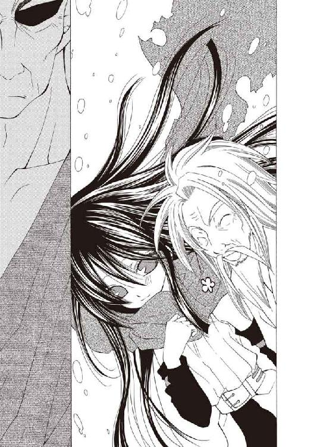
「......《罪人竜の息吹》の追跡、および回収です」
「使命を果たした様子ではない。使命を棄て置き帰還した理由があるのだろうな」
「おお、あるともよ」
軽い調子で口を挟みながら、吹雪をかき分けるようにアギが姿を見せる。小柄な身体を半ば雪原に埋もれさせながら、彼はウーフィーグリッドの巨躯を見上げた。
「その察しがついとるから、お前さんもここで待っていた。違うかの？」
「──アギ・チーリィか、久しい。息災か？」
「健康だけが取り柄でのう。お前さんも元気そうじゃな」
一瞬だけ懐旧めいたものをよぎらせる彼に、こちらは惜しみなく白い歯を覗かせたアギが片手を上げる。アーティアの隣に立って、深く垂れたままの頭をぽんと叩いた。
「嬢ちゃんとはサングリーノヒルで行き会っての。聞けばお前さんの里の者と言うでな、他人とは思えんでこうして余計な世話を焼いとる」
「お前らしい。......だがこの場は控えろ。これは里の問題だ」
「そうかいな？ 命というモノの有り様を根本から覆そうというのなら、ことはこの星に生きるもの全ての問題じゃい。違うか？」
「............成る程。そうだな、お前には昔、話したことがあった」
ウーフィーグリッドの苦笑は静かなものだった。動揺も、意外そうな素振りすら見せない。その苦笑も瞬く間に消し去り、彼は威嚇的に太い腕を組む。
「お前はいつもそうだ。昔から、俺の邪魔をせずにはいなかった」
「お前さんも変わらんのう。昔から、儂の話を聞きやせんかった」
身体を骨から震わせるような唸り声を、アギは涼しい顔で受け流す。睨み合う老人たちをこっそり盗み見、話を切り出す機を窺う、と。
【──構わない、ウーフィーグリッド】
吹雪を裂いて響いた透明な咆吼に、アーティアは顔を跳ね上げた。
雪原の奥、山の上方を見る。
視線の先で、吹雪が裂けていた。見えない防塁が築かれるように、雪嵐の中へ凪いだ空間が切り込んでゆき──見上げた雪原の向こうに、巨大な銀影を露わにする。
【アギ・チーリィは愚かではない......その期待をかけて良い程度には。違うか？】
【......その通りですな】
厳粛なその咆吼に、ウーフィーグリッドが頭を下げる。渋面のままの彼へ憎たらしい笑みを浮かべ、アギも胸の前で拳を手の平に当て、一礼した。
【貴女の山へ踏み入る不遜を赦されよ。さすれば我が心臓、貴女の牙が下に】
【似合わない作法をなぞるな。白峰は貴様を拒まない】
口上を述べようとするアギを制して、影は呼吸を置くように沈黙する。その頃には、アーティアは膝についた雪を払って歩き出していた。
本当は、すぐにでも駆けていきたい。
巨躯を覆う蒼銀の鱗が。それを支える四肢と爪が。雷光より鋭利に空を裂く翼が。修行に疲れ果てた自分を優しく抱き止めてくれた尾が、ひどく懐かしかった。
だからこそ不格好はさらせない。精一杯に堂々と、誇り高く。
堰を切ろうとする感情を必死に抑える彼女を、それは静かに待っていた。長い首をそっと雪原に降ろすと、彼女を一呑みにしてしまえそうな大きな口に、笑みを浮かべる。
【お帰りなさい、アーティア】
【──────ただいま、母様】
我慢しきれず形式を外れた言葉で答え、アーティアは巨大な竜──白峰の守護者、雪竜ノルガンディアの首に抱きついた。
愛おしげに双眸を細め、彼女はアーティアの髪を撫でるように顔を寄せる。
【ひどい格好だわ。服もボロボロ。前に帰ってきたときはあんなに大事にしてたのに】
【い、急いで帰ってきたから。............急いで、帰ってきたんです。母様】
今さらながら、無理な行程を通したせいであちこち汚れだらけの出で立ちに気付いて顔を赤らめ──アーティアは改めてノルガンディアに向き直った。
一度、大きく息を吸い、アーティアは銀の瞳を鋭く尖らせる。
【聞きたいことがあるんです────『棺』とは、なんなのですか】
【............それは、】
【それを問うからには、もう答えは分かっているのだろう】
ノルガンディアの言葉を遮る形で、ウーフィーグリッドが声を滑り込ませた。
彼は険しい顔のまま、勿体付けるでもなくあっさりと言い放つ。
【《罪人竜の息吹》を封じ消し去る、命の楔。始祖竜の記憶を継がぬ、自然ならざる創られた生命。それが私が構想する『棺』計画であり......】
彼はこちらを見る──物静かな表面の後ろに、底知れぬ激しさを押し込めたこの眼差しが、昔から恐ろしかった。知らず後ずさりかけていた足を踏みとどまらせるアーティアへ、ウーフィーグリッドは低めた声で続けてくる。
【計画の軸がお前だ。アーティア......ニグログルフュの葬り手、『棺』の星守りよ】
反射的に口をつきかけた反駁は押し止め、アーティアは、意識だけを背後へ向けた。
ノルガンディアは否定の言葉を紡ぐこともなく沈黙に沈んでいる──
「──そう、アーティア・アリア・ノルガンディアは創られた生命だ。くひッ......フェレトロ・シリーズなど足下にも及ばぬ出来映えではあったが」
「......そ、んな..................？」
広い部屋に、呆然とした呟きがこぼれる。
溶けるように力の抜けていく足でなんとか踏みとどまり、バーンは少しでも嘘の痕跡を見つけ出そうと眼前の男を凝視した。
広い、上で人が大の字になれるような馬鹿げた広さの執務机を挟んで、長い白髪の老人が平静に見返してきている。重厚なクルミ材の机に積み上がった書類束から覗く瞳は、他人に感情を漏らさない事に慣れた人間の物だったが。
「《罪人竜の息吹》に自我を喰われかけた貴様を、あの娘が幾度か『棺』の機能を使い沈静させたと報告を受けている。......サングリーノヒルの一件以降は機能に障害をきたしているようだが、要因に心当たりはあるかね」
その顔を見つめ続け......絶望的な気持ちで、悟る。
老人──シム・リム・アビスパは嘘をついていない。言葉は質問の形をとっていても、彼の興味は微塵もこちらに向いていなかった。この執務室に通されてから、彼はこちらへ意識を向けた事はないのではないかとすら思う。
助けを求めるように後ろを振り向く。半歩離れてキャロラインが立っているが、目が合うと小さく鼻を鳴らしてそっぽを向いてしまった。壁にもたれたブロック・キャリバーはそもそもこちらを見ておらず、腕を組んで不機嫌そうに目を瞑っている。
大きく息を吐きだして、バーンは困惑顔をデスクの向こうへ向けた。
「心当たりって......え、待って。一回待ってくれよ。なにがなんだか──」
「愚かの体で時間を稼ぐのは、常套だが相手と状況を選ばなければ意味がない」
──一瞬で魂胆を見破られ、口を噤む。
「貴様が愚鈍でないことは知っているし、話が終われば時間は与える。......我儕が貴様をここへ呼んだのは、現状を理解させた上で契約を交わすためだ」
「け、契約......って」
今度は演技ではない困惑に顔をしかめるバーンへ、彼は書類を一枚弾いて寄越した。
「ここ十日の観測で《罪人竜の息吹》のデータ解析は飛躍的に進展した。完全な複製はいまだ成し得ないが、このまま研究が進めばそれも時間の問題だ」
「............要するに、僕にここで実験動物やれって言ってる？」
「名目上は保護、だ。くひッ──『棺』の娘が不在である以上、幸運な話だろう」
（......名目上は、ね......）
──言葉を飾らないのは誠実ゆえではない。心底、バーン・フラットランドという人間に興味がないのだ。苦く眉根を寄せ、書類を取り上げる。紙面は細かい数字と専門用語らしき単語で埋め尽くされていた。
「ラボの報告書だ。《息吹》の反動で、貴様の肉体は遺伝譜式レベルから疲弊しているそうだ。《罪人竜の息吹》が高いレベルで侵食すれば、今度こそ命が無いだろうが......それは誰もが望んでいない。貴様とて無為に棄てる命は持っていないだろう？」
「......『アビスパス』は安全、確実にあなたの生命健康を保障させていただきますわ」
背後からキャロラインが口を挟んでくる。振り向くと、彼女は面白くなさそうに頬を膨らませ、さも気乗りのしない調子で続けてくる。
「アーティア・アリア・ノルガンディア......竜徒の『棺』は、そもそも《息吹》を消滅させることに特化した生命体です。彼女に出来るのは、せいぜい生命力を削ぎ落として強制的に《息吹》を眠らせること──ドラゴン小娘が暴走を鎮める度、あなたは死にかけていたのですわ。気付いていなかったでしょうけれど」
「......、は？」
言葉の意味を掴みかね、バーンはぽかんと口を開ける。
間抜けな顔のまま硬直する彼に、老アビスパが物憂げに嘆息した──気付くまで時間がかかったが、それは彼が初めて感情を覗かせた仕草だった。
「率直に言う。バーン・フラットランド、《罪人竜の息吹》を摘出することは不可能だ」
「....................................、は？」
全く同じ言葉を、より長い沈黙を挟んで呟く。
意味こそ即座に把握したものの、その意味に、今度は思考が真っ白になった。
「こちらは時間の問題ですらない......短期間に衰弱と再生を繰り返し過ぎたのだ。弱化した貴様の身体は《息吹》を内包することを前提に適応を始めている。いまさら分離させることはできん。......そもそも《息吹》のみを分離させる手段など我儕は持たん」
「だ──で、でも彼は......ええと、そう......ウーノ・フェレトロ！ 彼、僕から《罪人竜の息吹》を奪っていったぜ!? あんたの部下だって話じゃないか！」
「フェレトロ・シリーズは〝天涯の紅泥〟から創り出した接続媒介に過ぎない。生体装置を効率よく同調制御させる、使い捨ての部品だ。その生体装置も──」
思いついたことを口走るが、老アビスパは鼻の角度をわずかに変えただけだった。傍らの抽斗を開けると、つかみ出した何かをごとりと机の上に置く。
機械のようだった。そう大きくはない。束ねられた数本のシリンダーから伸びるケーブルがなければ、連発拳銃の弾倉部分に見えなくもない。薄青色に照り返す鋼の塊。
「──この通り。準生物性オーガンライト鉄鋼を生体情報と共振調整、《息吹》の情報ごと複写する、それだけの代物だ。《息吹》を引き剥がすわけではない」
「......そ............っ」
「だが、同調制御を利用した《息吹》の沈静化は可能だ。フェレトロ・シリーズはいくら組織弱化しようと代替がきく......リスクは奴らが担当し、貴様は必要に応じてラボにデータ提供してやるだけで構わん。生涯、貴様の安全を保障しよう」
書類がもう一枚、机の上を滑って寄越される。
最上質の紙に『アビスパス』の蝋が捺されている。内容は先の報告書より分かりやすく──また、意識を惹きつけずにはいないものだった。
「同意するなら契約書にサインを。......《罪人竜の息吹》から逃れることはできんのだ。生命の安全を確保するためにも、都合が良い取引であると思うがな」
都合が良いどころの騒ぎではない。契約書の文面を何度も読み返す。
衣食住は勿論、個人の商店から公機関、酒場や劇場に至るまで中央都市におけるあらゆる施設利用費は『アビスパス』が負担する。研究進展に支障がない範囲での旅行も許可され、事業を興したければ資本融資も。明記こそされていないが、ある程度なら犯罪行為の黙認まで............およそ考え得る限りの便宜が取りはからわれる契約になっている。
荒唐無稽とすら呼べる見返りだった。
（──僕、いまひょっとして、すごいチャンスにありついてる、のか............？）
息を呑み、気付かれないよう視線を上げる──気付かれないはずもなかろうが──
「あんたは......《罪人竜の息吹》なんか手に入れて、どうするつもりなんだい？」
精一杯の平静を装って訊ねるが、声が上ずるのは隠せなかった。
その問いに、老アビスパは即座に手を振って答える。口調に、躊躇はない。
「我儕は、戦争を行っているのだ。人と、竜徒と、我儕を脅かす全てを相手に。奪われぬため、獲得し続ける終わり無き戦争を。くひッ......力はいくらあっても足りない。星をも灼いた業火というなら、尚更ではないかね」
緩やかに口角を裂き、シム・リム・アビスパが嗤う。
「選ぶがいい、これは貴様の成功の機だ。............せっかく災厄を被ったのだ、せめてその災厄を利用しない手はない。そう思わないかね？」
【我々は互いを利用した。星守りの智慧、人間の技術......どちらか一つでは決して届かぬ目的のため、私はある人間と手を結んだのだ】
雪嵐の音に紛れないウーフィーグリッドの言葉を、アーティアは押し黙ったまま聞いていた。拳は、爪が刺さるほどきつく握りしめている。
【万物の祖、原初の命たる始祖竜の記憶にまで遡った、ニグログルフュの《罪人竜の息吹》......この星に生きる存在では届かぬのだ。彼の竜に連ならぬ生命でなければあの焔に喰われるしかない。故に私は............命の造成という大罪に手を染めることを決めた】
黙っているのは聞き入っているからではない──少しでも気を緩めると、その場に崩れ落ちてしまいそうだったからだ。折れそうになる脚を渾身の力で支え続ける。
【だが私の力では禁忌を為すには及ばなかった。幾十度、幾百度の失敗を繰り返し、決意も信念も絶望の底で朽ち果て行かんとした、その時だった......とある人間が、竜の記憶に依らぬ命の造成を画策していると聞いたのは】
【その人間が、シム・リム・アビスパか】
色の枯れた眉をひそめるアギを、ウーフィーグリッドが視線だけで振り向いた。
【......あの男は遺伝譜式なる〝命の組成譜〟を用いた人間の複製技術を完成させようとしていた。その組成譜を受け入れる〝命の器〟には、始祖竜の記憶を持たない生命が不可欠だったのだ。ミロの話を聞く限りでは......フン、奴も目的を達したようだが】
【っミロ......!? 里長、あの子になにを────、ッ】
思わず踏み出しかけた彼女を、ノルガンディアの尾がそっと抱き止めた。
縋るように見上げるアーティアに、あやすように柔らかな声が降ってくる。
【落ち着いて。ミロは大丈夫。無断で山を降りたのと、里の竜工芸を持ち出したことでいまは懲罰窟に入っているけど、元気にしてる。会いに行ってあげれば喜ぶわ】
【..................はい......】
軋むほど奥歯を噛みしめ、アーティアは母の尾から身体を離した。
ミロ・デルッカ──
彼女が里で《息吹》の扱いを教えていた子供たちの中でも飛び抜けて素質があったが、数ヶ月前、里の禁を破りアーティアを追いかけて来るという無茶をしでかした。無事に里へ戻れていた事には安心したが......
再度ウーフィーグリッドが口を開いたのは、しばしの間を開けてからだった。
【始祖竜の記憶を洗い流した無垢なる泥濘──〝天涯の紅泥〟とあの人間は呼んでいたか──その完成をもって我々は袂を別った。そして長い歳月をかけ《息吹》による圧力をかけ続け......命の流れへの抵抗力として生じた核を、マテリアル自体を母胎に成長させる。結果、私は並外れて《息吹》の制御に長けた生命の創造に成功した────】
【......その、造られた生命が..................私、なのですか】
吐き出す言葉で自分自身を切り裂くような心地で、それでもアーティアは、ウーフィーグリッドから視線を外さなかった。
音もなく身体を震わせ、ノルガンディアが牙の合間から吐息をこぼす。
【......生まれたばかりのあなたは、生命としてとても不安定だったわ。だから保護を兼ねて私が預かることにしたの。《息吹》の制御法も教える必要があったから】
【そしてお前は期待通り、『棺』に足る制御能力を得た............疑問は解けたな】
反射的に叫びかける彼女を制するように、ウーフィーグリッドは声を低くする。遠く響く雷鳴か嵐の前触れを思わせる、静かな怒りを秘めた声。
【私も問おう。アーティア、貴様は以前、《罪人竜の息吹》は人間の手に渡り行方が知れないと──そう報告したはずだ】
【はい】
【............いま一度、問う。《罪人竜の息吹》の行方は、知れないのだな？】
厳かに唸るウーフィーグリッドに、彼女は真っ向から視線を合わせる。
（......里長はもう気付いている）
上等──もとより隠し通す腹でもない。
雪を踏む脚に力を込め、彼女ははっきりと答えた。
【いいえ。葬星の火焔《罪人竜の息吹》は────今は人間の男と同化し、彼の《息吹》となっています。私の、不手際です】
【アーティア......】
愕然と呟くノルガンディアの方は振り向かない──振り向く勇気がない。
母を、皆を欺いた自分を彼女がどんな顔で見ているのか、確かめるのが怖かった。
【......虚言を弄した罪の重さは理解しているつもりです】
【当然だ。《罪人竜の息吹》を野放しにしていたなど、あまりに暗愚】
【弁明もありません。しかし、里長ウーフィーグリッド。私が......ッ、......私が、《罪人竜の息吹》を封じるために、創り出された命ならば............】
自らそれを認めるのは途方もなく恐ろしかった。信じてきたものが、紡いできた想いが、積み重ねてきたはずの時間が、全て紛い物ではないのかと思えてくる。
それでも──
【......私が『棺』であるならば、《罪人竜の息吹》を封じる術を知りたい！ 宿主の命を脅かすことなく、《息吹》だけを消滅させる手段を！】
【──それを知って、どうするつもりだと？】
地鳴りの如きウーフィーグリッドの咆吼が空気を震わせる。
臆せず彼を睨み返し、アーティアは振り絞るように言葉を押し出した。
【あの人間を助けます。奴は、私のせいで《罪人竜の息吹》を宿したに過ぎません。私が助けなくてはなりません............私にはその責任がある！】
「愚か────ッ!!」
激怒を乗せた咆吼と共に、彼の周囲の雪が舞い上がる──否、彼を中心に雪原が爆裂した。渦を巻く暴風の奔流を見つめ、アーティアは素早く半身を引く。
（《息吹》......！）
憤怒をもって、全てを砕き薙ぎ払う嵐の《息吹》......だが実際に、心身共に竜の領域へも迫る彼が感情を露わにする所など、見たことがなかった。
「その身に負う責を、『棺』の意味をなんと心得る！ お前は《罪人竜の息吹》を、最後の一片までも封じ抹消する事にのみ命を割かねばならん！ ましてッ！ この星の命を啜り喰らう傲慢な人間を助けようなどとは────虚けの一語おおぉッ!!」
周囲の吹雪すら巻き込み粉砕する颶風の中心で、身も竦むような怒声が轟く。
飛び退こうとするが、呼吸をも阻害する風圧がそれを許さない。荒れ狂う気流に四肢を縛られたアーティアへ雪原を断ち割り、嵐の《息吹》が解き放たれた──と。
【去涸れ桜坐──啼き痴れ遊び四檻蔓、盃封!!】
突如、ウーフィーグリッドの《息吹》が弾け飛ぶ。
暴風の束縛を解かれ膝を落とすアーティアの耳に、怒りに震えるウーフィーグリッドの咆吼が飛び込んで来た。
「っ......どうあっても俺の邪魔をするのだな、アギ............!!」
「嬢ちゃんを殺しちまいかねんからのう。......その血の上りやすさ、なんとかせぇよ」
風の音の合間に、憮然としたアギの声が転がった。
「その子がお前さんの言う『棺』だろうと、その意志、その生き方に口を出すのは分を超えるというもんじゃ。そうではないか、ウーフィーグリッド？」
「笑止な......奴は星守る茜鱗。この星の命を守ることは使命だ、宿命だッ！」
「里長、老師！ 止め、」
【止めろ──二人共だ】
駆け出そうと立ち上がりかけたアーティアを、ノルガンディアの声が押しとどめる。
鋭く冷たく、なにより重い──氷河の底に沈められたと錯覚するような雪竜の咆吼は、再び渦を巻き始めていたウーフィーグリッドの《息吹》を圧し潰し、距離を詰めようと体勢を低くしていたアギを転倒させる。
ノルガンディアは、鋭い牙の隙間から氷の塵を散らして告げた。
【激するなウーフィーグリッド。《罪人竜の息吹》がいまも危険なら、この子も傍を離れはしない。託した誇りは、安くないのだ。............そうでしょう、アーティア】
「は──はい。彼は《息吹》を抑制できる人間の元に預けてあります。......とても、暴走しやすくなっていて............私が、《息吹》を制御できなくなってしまったから」
【制御が？............そう。聞かなくちゃならない話は、沢山ありそうね】
憂鬱げに頭を振る彼女の視線に応え、ウーフィーグリッドが一礼する。絞り上げた赤銅色の体躯からはもう、先の肌を裂くような怒気は微塵も発せられていなかった。
【星守り、アーティア・アリア・ノルガンディア。《罪人竜の息吹》追跡は取り下げだ。別命あるまで里を出ることを禁じ、行動を監視下に置く】
「ッ────それは！」
憤然と叫び返し、アーティアはウーフィーグリッドへ踏み出した。
「それはバーンを見捨てろということですか！ 生涯、罪人竜に怯えて生きろと!!」
【お前が《罪人竜の息吹》を預けた人間......シム・リム・アビスパであろう？】
思わずバーンの名をこぼしてしまったが、指摘してくることもなく、彼は静かに切り返して来た──聞き逃した訳もあるまいが。
【あれを鎮め得る人間など他に有り得ん。......〝天涯の紅泥〟の完成をもって、互いに不可侵を貫く......奴とはそう約定を結んでいる。少なくとも現状では手が出せない】
「人間を守ることは虚けと、そう言ったのはあなただ............!!」
【『アビスパス』は州国軍にも劣らぬ。《息吹》の力まで得たとあっては迂闊に戦端を開く真似は出来ない。罪人竜に対する切り札であるお前を失うことも、出来ない】
「しかし......ッ！」
【分かって、アーティア────この星を、再び焔に沈めるわけにはいかないの】
詰め寄ろうとしたアーティアの行く手を、ノルガンディアの尾がそっと遮る。愕然と見上げるアーティアを......冷たく硬い竜の瞳が見下ろしていた。
力が抜け、尾にもたれるように立つ彼女にウーフィーグリッドが近づいてくる。
【......加えて、残酷な誤解を招く前に言っておく。宿主の一部となった以上《罪人竜の息吹》のみを滅ぼすことは、出来ない。《息吹》と命は同一にして不可分なればこそ宿主の生命を檻とし、もろともに《息吹》を消し飛ばす『棺』の概念が成り立つ】
「............っ、......！」
【お前がその人間に拘る理由も、いずれ併せて聞こう。......このようなイレギュラーの無いよう教えを徹底してきたのだがな。どこで調整を誤ったか────】
その言葉に、足下へ視線を落とした瞬間。
音が響いた。骨同士が打ち合う、籠もった鈍い音。
背後から跳びかかったアギの拳を、ウーフィーグリッドが半身を捻り受け止めていた。拳が右肩に弾かれると、アギは即座に彼の背を蹴って飛び退き、距離を取る。
【............なんのつもりだ、アギ】
【いい加減にしろ、ウーフィーグリッド】
青い服の裾を蹴り上げ帯に挟みながら、アギは顔をしかめる。
【アーティアは『棺』である以前に、この星に生きる命の一つ。その在り様までをも意のままに歪めようというのなら、それは罪だ】
【この身、この命は既に星守る使命に捧げた。罪人竜も喰らって征く。............覚悟は、とうの昔に決めてきた】
【その覚悟に、子供を巻き込むなと言っている────!!】
最後の咆吼と共に、アギの姿が吹雪の中へ消える。雪煙だけを残して見えなくなった彼を、しかしウーフィーグリッドの眼は捉えているようだった。左へ向かい地面を蹴り、吹雪を切り裂くように脚を振り上げる。
果たして、その脚は空を斬っただけだった。だがその傍らで雪が舞い、雪原に四肢を着いたアギの姿が現れる。ウーフィーグリッドは俊敏に間合いを詰めると、そこへ踵を振り下ろした。鉄槌じみたその一打は回避できないように思えたが......アギはぐっと身体をたわめ、獣の様に四肢を使い脚の内側へ飛び込んでいく。
鋭い判断だった。ウーフィーグリッドは移動も攻撃も封じられた格好になる。不自然な体勢ゆえに決定打は放てまいが趨勢を決める一手だった────本来なら。
「..................ッ!?」
ウーフィーグリッドが、アギの跳躍に流されるように倒れ込む。そして、ぎょっと眼を見開くアギの懐へ──あらかじめ引き絞っていた右の拳を突き刺した。
くの字に折れたアギの矮躯が、一瞬空中に制止する。ウーフィーグリッドは素早く体勢を立て直し、今度は左手で顔面を殴り飛ばす。木の葉のように真横へ吹き飛ぶアギを追ってステップし、もう一度腹を、今度は膝で打ち抜いた。そして息を詰める彼の背へたっぷりと遠心力を乗せた踵を叩きつける。悲鳴もなく、雪煙が弾けた。
地面に沈んだアギを冷ややかに見下ろし、ウーフィーグリッドは小さく呟いた。
「無粋な部外者を排除することには、もはや罪の感慨もない」
「............っお、前......手加減せぇよ......、殺す気かっ............！」
「──不可解だ。なぜ、お前がそこまでアーティアに肩入れする？」
雪原から顔を上げるアギを、彼は怪訝な瞳で見下ろす。首を動かすのも億劫なのか、アギはまた雪に顎を埋めて、事もなげに答えた。
「儂が止めてやらんと、お前さん、友達少ないからのう」
「..................」
もう一度無言で蹴りつけられると、アギはぐったりと動かなくなった。
こちらに向き直り、ウーフィーグリッドは厳しく細めた双眸で睨みつけてくる。
【監禁するつもりはないが、山を降りようなどとは考えるな。......自覚を得たのはむしろ好都合だった。お前には『棺』として学ぶべきことが山ほどある】
「っ............！」
【ノルガンディア、アーティアをお願いします。私はアギを里へ連れて行きます故】
何も言い返せずにいる内に、彼はアギの身体をひょいと担ぎ上げて歩み去っていった。後には拳を震わせるアーティアと、彼女に寄り添い横たわる雪竜が残される。
話したい事も、話すべき事も沢山あった。
しかし食いしばった歯の間から押し出したのは、そのどちらでもなかった。
【......母様】
【............なあに、アーティア？】
優しい声で答えて、ノルガンディアが顔を寄せる。
茜色の襟巻を掴んで、アーティアは声を震わせた。
【母様が、これをくれたのは......私が『棺』だから............必要な、道具だったから？】
茜色は星を染むる夕陽の色──特別な意味を持つ色だ。
星守りは敬愛と信頼を込め、大切に想うものを茜色で包む。この襟巻は初めて山を降りる時彼女が巻いてくれた物だ。辺境を彷徨う間もずっと、自分の誇りだったのだ。
ノルガンディアは、答えない。ただ眼を逸らしもしない。
じっと彼女の瞳を見つめ続け──口を開いたのは、数分も経ってからだった。
【茜色の意味なんて伝統に過ぎないわ。竜は色に意味を求めない。そこに意味を与えるのは縋るものが欲しいから。心が弱いから──】
銀色の尾でそっとアーティアを引き寄せ、彼女は続ける。
【──母親が襟巻を巻いてあげるのは、可愛い娘を愛しているから。忘れないで】
きっと、それは嘘ではない。当然だ。竜が嘘などつくはずがない。
では............なぜ自分は、喜ぶことが出来ないのだろうか。
疑問は解けないまま、アーティアはゆっくりとその場に崩れ落ちた。
「有り得ないですわ、信じられませんわ、心っ底見下げ果てましたわ！」
淑やかとは呼べない乱暴な歩調で歩いていくキャロラインから視線を逃がし、バーンは傍らのブロック・キャリバーを振り返った。彼は知らぬ顔で肩をすくめるだけだったが。
広大な割りに人の姿が見えないせいか寒々しく見える『アビスパス』本社ビルの廊下を歩き続けながら、バーンは端整な顔を情けなく歪める。
「なんで不機嫌なんだよ君は。『アビスパス』としちゃ、要求通りにことが運んでるはずじゃないか。......ちゃんと契約したんだからさ」
「そ、れ、が、気に入らないのですわよ！ このヒョーロク玉！」
とうとう振り返って歯を剥き、キャロラインはこちらに指を突きつけた。
「お祖父様の意図は分かっているのでしょう!? あのドラゴン小娘はもう指名手配されてますわよ。この分じゃ、次に顔を合わせるのは運が良くて死体置場ですわ！」
「な──なんで君が僕らの心配するのさ？」
「自由を売り渡すなんて開拓辺境の男ではないと言っているのですわよ！ タマの代わりにドングリでもぶら下げてるのではなくて!? ろくでなし、根性無し、甲斐性無し！」
「そういう君は容赦無いね......」
だすだすと地団駄を踏んで罵声を散らすキャロラインに、それなりに傷ついた顔で呻き返す。それからふと、彼は自分の格好を見下ろした。
記憶にある限り最後に着ていた私服である。血や泥の汚れはさすがにクリーニングされているが、生地自体がもう限界だ。サングリーノヒルに置いたままの荷物は回収してきてくれなかった様なので、後で買い物に行かなければならない。
そして右手の小指、アーティアに貰った、竜工芸の指輪を見下ろす。キャロラインを説き伏せて──というか泣きついて──ラボから取り上げてきて貰った物だ。草や糸を編んだ指輪はもう随分長く着けているが、千切れたり汚れたりする気配はない。
「......僕だってそう思うさ。でも、《罪人竜の息吹》が危ないってのも本当なんだ。最近──今朝目覚めるよりもっと前からって意味だけど──嘘ついたときに跳ね返ってくる反動が半端じゃないんだよ。一瞬、意識とんじゃうことも結構あるしね」
彼は、嘘をついた時に《息吹》の炎を噴く。
冗談か、何かの呪いじみた話だが、事実である。アーティアの話では自分を騙しきれないような大嘘をついた時、己への信頼の揺らぎを突いて《罪人竜の息吹》が暴走しているらしいが......その「大嘘」の基準も、徐々に曖昧に拡大してきている気がする。
「まず、こいつをなんとかしなきゃ一歩も動けない。アーティア探しに行って、そこで罪人竜に乗っ取られちゃったなんてことになったら顔向けも出来ないだろ？」
「ふんだ、白々しい。しょせん我が身可愛さなのではなくて？」
「っ」
刺々しく言い捨てると、キャロラインは身を翻した。彼は一瞬だけ硬直し、肩をすくめてその後に続く。
見抜かれた──彼女に深い考えがあったわけではないだろうが、それでも、無意識に偽っていた心の奥底を暴かれた気がした。
『しょせん我が身可愛さなのではなくて？』
（違う..................そんなわけない！）
自分は彼女に──アーティア・アリア・ノルガンディアに恋をした。
無数に重ねてきた虚構の愛ではない、生まれて初めて、心の底から好きになった少女。強く怜悧で、本当はおっちょこちょいな可愛い師匠。そして、
『アーティア・アリア・ノルガンディアは創られた生命なのだ』
──唐突に浮かび上がった老アビスパの声が、意識に冷水を差す。
気にしていなかった訳はない。気にならない訳がない。
（アーティア............君が、僕を殺すって......？）
馬鹿げている。そう言って一笑に付すのは簡単だ。簡単だ、が......
契約を承諾した裏に恐れはなかったか？ 危険を冒して彼女を追うより、ここで安全に《息吹》を抑えている方が上策だと、ちらとでも考えなかったと言えるのか？
（............ああ、考えたよ。考えたさ！ くそ、だってそうだろ!? 死んじゃったらそこまでだ、アーティアに会うことも出来ない！ あの子に恋することだって、僕が生きてるから出来るんじゃないか!! くそッ......クソッ!! そんなの当たり前だろ......!?）
誰に対してか分からないまま、胸中で激しく罵声を上げる。
この世で一番重いのは自分の命。当たり前のことだ、責められる筋はない。アーティア自身に聞いたところでそう答えてくれるはずだ。......答えて、くれてしまうはずだ。
歯ぎしりする彼の肩を──不意に、背後からブロックに叩かれる。
「思い詰めるな」
「っ............？」
「貴様の選択の正否を判断できる者は、貴様を含めていまはいない。......小娘のことで混乱もしているだろう。考えず、頭の整理を優先するべきである」
優しくはないが、訥々と諭す様に告げるブロックを、バーンはぽかんと口を開けて見返した。思わず足まで止めて、間抜けに首を傾げる。
「......僕、いま口に出してた？」
「否。貴様の眼だ。不安定になっているようだったのでな」
こちらに合わせて立ち止まり、彼は灰色の制服の胸から小さな金属片を取り出した。認識票か何かだろうか、鏡の様に反射するそれをこちらにかざしてくる。怪訝顔を深め、その金属片を覗き込み──心臓が跳び上がる。
生まれてこの方慣れ親しんできた青い瞳が、澱んだ暗い朱色に染まっていた。
「ッな、な......なん、なんだコレっ!? え!? なにッ！」
「《息吹》の影響だそうだ。侵食を抑えれば戻るらしいが。コツは心頭滅却である」
「ンなもん、言われてほいほい滅却できるもんか」
完全に他人事の調子のブロックへ呻き、金属片を睨む。
と、先に行きすぎたキャロラインが廊下の先で振り返ってきた。何か怒鳴ろうとしたらしく大きく口を開け──きょとんと不思議そうに首を傾げ、近づいてくる。
「なにしてますの？ 念力？」
「なんでノータイムでその結論に辿り着くのか分かんないけど......眼、青くなってる？」
「はぁ？ ああ......虹彩侵食ですのね。別に、刺激しなけりゃ勝手に収まりますわよそんなもの。危険があるならお祖父様はあなたを拘束してますわ」
乱暴に鼻を鳴らすと、キャロラインは退屈そうに頭を振った。
既に《息吹》に関してはバーンよりも通じている風格である。情けない気分で肩を落としていると、彼女はふと視線を外し、ぽつりと呟いた。
「......わたくしはお祖父様のやり方が好きではありません」
「え？」
「あの人は辺境を拓くために《罪人竜の息吹》を求めているのではありません。未踏の荒野へ臨むためでなく......ただ財を守り、殖やすこと。あの人の望みはそれだけです」
腕を組み、彼女は年齢に似合わない渋い顔をして見せる。
「それは支配者の考え方ですわ。竜徒と渡り合うために《罪人竜の息吹》を求めたお父様の......先駆者の理想とはかけ離れています。それが気に喰いません──その考えに乗せられてぬくぬくと飼い犬生活を送ろうとしている輩も、ですけれど」
「やっぱ僕も怒られるんだ......」
「カピロサで一杯食わされた恨みは忘れてませんわよ。......まあ、あなたより誰より、あの連中が一番気に入らないのですけれど」
「フェレトロ・シリーズ、か......確かに、連中は気に喰わん」
呻くバーンを蹴飛ばして付け足すキャロラインに、ブロックがしかめ面で頷いた。脛を抱えうずくまるバーンを無視し、彼女はにぃ、と粗野な笑みを浮かべる。
「んふッ。遺伝譜式の複製は、あなたも経験済みだったのではなくて？」
「目的意識の違いである。あの連中は、狂気だ。シム・リム・アビスパの妄執に過ぎん」
「......フェレトロ・シリーズって、君の付き人だろ？ なんで気に入らないのさ」
涙目で脛をさするバーンを、キャロラインは横目に冷たく睨む。面倒臭そうに額を押さえると、ドレスの袖から何かを取り出してみせた。
「お父様が、なぜお祖父様と同じ名を与えられたか想像できませんの？」
「別に珍しい話じゃないだろ。僕も母さんが執拗に反対してくれなきゃそうなってたらしいし。いや、本当母さんには感謝しなくちゃね」
「あなたの話はどうでもよろしくてよ。......これ、子供の頃のお父様です。後ろにいるのがお祖父様ですわ。汚したらぐきっといきますわよ、ぐきっと」
不穏な手付きで脅してくる彼女が手渡してきたのは、一葉の写真だった。写真機が出回り始めた頃の物かかなり不鮮明で、印画紙もぼろぼろだが、撮影された人物の顔はなんとか判別できる。......なぜこんな物を持ち歩いているのかは気になったが、掘り下げると深くなりそうな話題だと判断し、無視。
写真には二人の男が写っている。どこかの撮影所だろう、ふてぶてしい顔をした少年が凝った椅子に腰掛けており、その後ろにブラウンのスーツ姿の男が立っていた。
黒髪黒目、凪いだ海の様に感情の読めない顔──
「っこ、これ......ウーノ・フェレトロ............!?」
「耳から脳みそまで抜かりなく腐ってますの？ お祖父様だと言っているでしょう」
「フェレトロ・シリーズは、シム・リム・アビスパの遺伝譜式から複製された......若かりし日のシム・リム・アビスパである」
にべもなく写真を取り上げるキャロラインに続いて、ブロックが苦い顔で続ける。
「例の〝天涯の紅泥〟の試用、《罪人竜の息吹》抑制の消耗品、せいぜいそんなところだろうと考えていたが......その写真を見て確信した。あの男はイカレている」
「否定はできませんわね。我が祖父ながら正気ではありませんわ」
ひょいと小さな肩をすくめ、キャロラインは写真を大切そうに袖へしまう。話はそれまでだったが、その頃には、既にバーンにも老アビスパの考えは分かっていた。
自分と同じ名を与えた息子──それに飽きたらず、自分自身を複製し、彼は。
（ずっと、自分として生き続ける............永遠の命？ 馬鹿な!!）
それこそ三文小説だ──頭を振って立ち上がり、努めて明るい声を作る。
「ま、まあそれはともかく......別にあの人がイカレてたところで、当面は権力と技術力に問題ないだろうし。いまのところは手を組んでて損はないと思うんだよね」
「なーにが『いまのところは』ですか。契約の拘束期間、読んでなかったんですの？」
呆れた顔で舌を突き出し、キャロラインはすたすたと歩いていってしまう。頭を振って後に続き......バーンはこっそり、ブロックに返しそびれた鏡を覗き込む
（僕は、あの子に恋してる..................そのはず、だよな──？）
頼りなく揺れる瞳は、まだ不吉な朱に染まっていた。
◆□□◆
懲罰窟の中は、それほど酷い環境というわけでもない。
そもそも星を巡る命へ還り自然との合一を目的とする星守りにとっては天が屋根、身を横たえた所が寝床である。近年はそこまで克己的な里も少ないが、それを考えれば寝藁があるだけ快適であると言えるのかも知れない──
（──なんて、絶対思ってやるもんか）
自らケチをつけ、ミロ・デルッカは壁にもたれたまま傍らの水桶を覗き込んだ。毎日新しく汲まれてくる谷川の水の向こうから、鳶色の瞳の少年が見返してくる。
ノルグの里の懲罰窟は巨岩をくり抜いた石牢だ。悪戯が過ぎた子供を反省させる他......こうして、掟を破った者を閉じこめておくのにも使われる。
（どんな場所だって、ひと月も閉じこめられてりゃ嫌になるに決まってる）
実際にはひと月どころではない──数ヶ月前、里長の許可無く山を降りたミロは、戻るや否やここへ放り込まれた。両親はほぼ毎日会いに来てくれるし、水も食事も不自由なく与えられるが、これほど長く拘留されるような重い罪ではない。と思う。
そこには理由があるはずだ。自分の知らない理由が、何か。
（アーティアに関係あること............なんだろうな。きっと）
頭の後ろで手を組み、宙を睨む。牢は広いくせに、天井が極端に低い。
ミロが掟を破ってまで山を降りたのは、たった一人で禁忌の呪物《罪人竜の息吹》を取り戻す任を負った師、アーティア・アリア・ノルガンディアを助けるためだった。......結局、自分の無知と未熟とを思い知らされただけだったが。
ウーフィーグリッドはミロを怒りはしなかったが、アーティアの様子を執拗に問い質した──白峰ノルグの守護竜、雪竜ノルガンディアの前にまで引き出されたのだ。理由は答えてくれなかったが、何かがあるのは明白である。
「............くそッ」
持ち込んだ茜色の外套にくるまってからも、思考は回り続けていた。
誰よりも強く、聡明で誇り高い彼女になにか問題が起きたとすれば......それはバーン・フラットランドのせいに決まっている。
（あの嘘つき男め。《罪人竜の息吹》だけじゃ厄介事が足りないのか）
憮然と息をついて、ミロは小さく舌打ちをこぼす。
バーン・フラットランド......図々しくも我が物顔でアーティアの隣にいる、腑抜けで軽薄な人間。あの男が《罪人竜の息吹》を呑み込まなければ、アーティアは今頃里へ戻れていたはずなのだ。彼女が頼むので里長にはその事を伏せているが──
今度は舌打ちもせず、黙って外套を巻き直す。
正直を言えば、バーンが妬ましかった。もし《罪人竜の息吹》を呑み込んだのがあの男でなく自分だったら、彼女のそばにいられたのに。
だが、あいつと一緒にいたアーティアは──認めるのは大変な苦痛を伴ったが──里では見せたことがないような、楽しそうな顔をしていた。
自分ではあんな風に彼女を笑わせる事は出来ない。......たとえ、共にいたとしても。
「............ああああっ、もう！」
寝ころんだまま髪を掻きむしり、どこへともなく叫んだ、その時。
「おい、ミロ。起きてるか？」
分厚い岩戸の向こうから声が聞こえた──いつも水や食事を運んでくる里の男だ。
「牢番が、いちいちそんなこと断ることないだろ。起きてるよ」
「用件が用件だからな。開けるぞ」
身体を起こして答えると、岩が低い振動を引きずって横へ滑っていく。黄金熊より重いこの扉は、表の滑車を使わないと中からではまず開かない。
開いた隙間から松明の赤い光と、見慣れた男の顔が現れた。松明を壁の吊り輪に引っ掛け、彼は扉の陰から汚い袋の様なものを引きずり出し中へ放り込んできた。
「新入りだぜ。ノルグの里の者じゃないが......里長が言うには、星守りだって話だ」
「ひ、人なの、それ？......っていうか、誰？」
「さあな。俺も、こいつを懲罰窟に入れとけとしか聞いてない」
「ヤバい奴だったらどうするんだよ」
男は松明を取り上げると、無責任に手をひらつかせた。
「里長に殴られたらしいから、しばらく目は覚まさないだろうさ。明日の朝一で様子を見に来てやるから、そう怖がるな」
「だッ......誰が、怖いなんて言ったんだよ！」
顔を赤くして怒鳴り返すミロへからかう様な笑みを残し、男は岩戸を閉じる。再び訪れた薄闇の中、ミロはそっと床に視線を下ろした。
放り込まれたのは老人であるらしかった。顔は見えないが、ぼさぼさに伸び放題の髪は真っ白に染まっている。帯で締めた裾の長い上着は枯れた青色であり、確かにノルグの里で見る風体ではない。かなり小柄で、背丈はミロと同じか、あるいは低い。
とりあえず寝藁へ運んでやろうと、立ち上がって慎重に近づいていく。
「なんなんだよ。いったい............？」
「いや、昔なじみとケンカしちまってのう」
「うわあぁッ!?」
ぼやきながら踏み出したつま先を掴まれ、ミロは悲鳴を上げてひっくり返った。
今まで微動だにしなかった老人が、ひょい、と身軽に跳び起きる。調子を確かめるように首や腰を捻ってから、青痣の浮いた頬に触れた指を痛そうに引っ込めた。
「しばらく引かんぞい、これ......よく歯が折れんかったもんだ」
「の、呑気なこと言ってないで、とっとと放せ！」
しみじみ呟く老人に、ミロは足を掴まれたまま暴れて怒鳴る。
老人はこちらを見下ろし、ふと小さな目を細める。そして奇妙な迫力に気圧されて思わず黙り込むミロの足を、おもむろにぽいと投げ捨てた。
「いてッ!? き......急に放すな、危ないだろ！」
「ぶっしゃっしゃ。活きが良いのう」
床にぶつけた踵を押さえて怒鳴ると、老人は変な癖のある笑い声を上げる。そのまま胡座をかく彼に、ミロも憮然として座り直した。
「......あんた、なにやったんだ？ 里長に殴られたって聞いたけど............だいたい、ノルグの星守りでもないだろ。何者なんだ？」
「ふむ。話せば長くなるんだがのう。急いどるんで手短にいくが......儂は、大陸をふらつきながら星守りをやっとる身でな。名をアギ・チーリィと言う」
「ッ!? あ、アギ──雲の《息吹》のアギ・チーリィ!? 放浪の星守りの!?」
牢の中で何を急ぐのだという指摘は、続く言葉の前に霧散していた。
白峰ノルグでその名を知らない者はいない。独り孤高に研鑽を積む荒野の賢者──ウーフィーグリッドが子供たちに語って聞かせている伝説的な星守りだ。
ごくりと息を呑み、改めて、目の前の老人を見る。
「......なんか、上げ底くらったなって気分ですけど」
「............。一応、信じて貰えたという前向きなところだけ受け止めておくぞい」
恐らく自分とそっくりの半眼で呻くアギに、ミロはとりあえず頷いた。
信じるも何もない。水牛も昏倒させる里長の拳に殴られて平然としているなど、並みならない相手であって当然だ──想像よりも威厳が足りない点には、目を瞑っておく。
「そのアギ老師が、なぜ懲罰窟に？ 里長となにがあったんですか？」
「うむ──すまんが、水をくれんか。ここしばらく飲まず食わずでな」
顔を曇らせるアギに、ミロは慌てて立ち上がり水桶を持ってくる。ついでに拾ってきた外套を床に敷こうとするが、彼は水桶だけ受け取ると、笑ってそれを押しとどめた。
「良い茜色をしとる、大事にせえ。......さて、どう説明したものか」
柄杓ですくった水を一口呷り、アギは口髭を撫でながら低い天井を睨む。
「お前さん、アーティアを知っとるか？ ノルガンディア様の娘で......ここでは《息吹》の扱いを教えていたそうなんだがの」
「っ、アーティアがどうしたんだ!?......どうしたんですか？」
掴みかからんばかりの勢いで詰め寄ってから、我に返って言葉を正す。アギは驚いた様に目を瞬かせていたが、ややあって仕切り直す様に咳払いをした。
「話は早くなりそうだわい。......いま、あの娘はウーフィーグリッドに囚われておる」
「え......？ な、なんで里長が──いや、アーティア、里に帰ってきてるんですか!?」
「ちょいとワケありでの。ムシが良いのは分かっとるが......その理由を伏せた上でお前さんに頼みたいことがある。すべて終わったらきちんと説明するほどに」
心底申し訳なさそうに言い、アギは深々と頭を下げる。
......アーティアが、里に戻ってきている？ なぜ囚われるなどという話になる？ ノルガンディアは何も言わなかったのか？ 否、そもそもそれは本当の話なのか？
（──いや──）
混乱する頭から、ミロは必死に一つの結論をもぎ取った────判断はまだ、早い。
声が裏返りかけるのを堪え、慎重に、一語ずつ言葉を押し出していく。
「その、頼みたいことって......いったい、なんなんですか」
「......感謝する」
そう言って、アギは更に深く頭を下げた。その声には......自惚れでなければ、少しばかりの感服が含まれていたかも知れない。浮かれる気分にはなれなかったが。
「アーティアは危険な状態にある。......元より存在の不安定な生命、『我』を支える核が無ければ『己』が失われてしまうのは当然じゃ。ウーフィーグリッドのトンチキは、むしろそれを好都合と考えとるようじゃが」
「............なにがなんだか分かんないんですけど」
「原因と根拠を問わんと誓えよ。────このままでは、あの娘は心を失う」
──一片の冗談もないそのひと言は、どんな詳細な説明より強力に口を噤ませた。
呼吸ごと言葉を失うミロを見つめ、アギは白髪を掻く。
「積み上げてきたものを覆され、希望から絶望まですべて打ち崩された。遠からず奴は、折れる。そうなれば終いじゃ、与えられた使命を果たすだけの道具になっちまう。そいつは、アーティア・アリア・ノルガンディアの────死と変わりない」
「死ッ──そ......んなっ............!?」
「まだ手は打てる......不確定な上にリスクはべらぼうだがの。あの娘の『我』を支える、心の片割れに引き合わせることじゃ──《罪人竜の息吹》の伝説は知っとるか？」
突然持ち出された言葉に、もう一度喉が引きつった。
「《罪人竜の息吹》はいま、ある人間に取り込まれておる。バーン・フラットランドという頼りないチンピラだが......奴ならあるいは、アーティアの心を救えるやもしれん。問題は、この見込みが老いぼれの早合点でないとは限らんっちゅうことだが──」
「────大、丈夫......ですよ。老師」
渋い顔で呻くアギに、ミロは掠れ声を絞り出す。
アギが言うことは理解できた。理解できてしまった。
（......なに、納得してんだよ............ッ）
胸中で芽吹いた反発の絶叫を────芽吹いたそのまま、理性で圧殺する。
「大丈夫です......確かに、あいつ以外にアーティアを助けられる人間なんかいません。俺が......ッ、保証します」
「あいや......知っとるんか？ 存外に顔の広い男なのだのう」
言葉尻が震えていたことに、アギは気付かなかったのか、聞き流してくれたのか──きょとんと目を丸くし、前髪に息を吹いている。
「この偶然、星に感謝せねばならんのう。......フラットランドは、いま中央都市にいる。暴走寸前の《罪人竜の息吹》を抑えるため『アビスパス』の本社に預けとるんじゃい。お前さんは中央都市まで走って、奴をあの娘の元まで連れてきて欲しい」
「..................質問を、二つ......よろしいですか」
足下に落ちていた外套を強く掴み、ミロはちらり、と視線を横へ流す。
恐らく、彼の言うことは真実なのだろう。
この老人が本当にアギ・チーリィかどうかは分からないが、《罪人竜の息吹》とバーンの事を知っていた以上、少なくとも自分よりは事態に通じているはずだ。
「懲罰窟から出る方法は？ 俺の《息吹》じゃ、あの岩は動かせないですよ」
「ほう？ その歳で《息吹》に目覚めとるとは優秀じゃ。だがまあ、《息吹》なんぞそう滅多に使うもんではないぞ」
目を丸くして頭を振ると、アギはおもむろに懐へ手を入れた。青い服の合わせから自信たっぷりに取り出されたのは──一膳の、黒塗りの箸。
思わず半眼で見るミロに構わず、彼はぴょこんと立ち上がって岩戸へ近づく。
「さすがにこれを取り上げようとは思わんかったようだのう。......ところがコイツが、種も仕掛けもたぷたぷの逸品でな」
「たぷ......？」
取りあえず分かりやすいところを指摘してみるが、アギは聞いてもいないようだった。扉の両端の継ぎ目にそれぞれ一本ずつ箸を突き刺し、数歩離れて指印を切る。何が起こるのかと身体を起こしかけた時、アギが高らかに両掌を打ち合わせた。
「醒！」
瞬間──突き上げる様な衝撃と共に、爆音と爆風がミロの身体を突き飛ばす。強風に舞う枝のように床を転げながら......彼は目まぐるしく入れ替わる視界の中に、あっけなく吹き飛ばされた牢の扉を捉えていた。
土煙と爆音の余韻の中、アギは手を打ち合わせた姿勢のまま厳かに目を伏せ呟く。
「ステファニーに続いてクリスティーンまで失うとはのう......安らかに眠っとくれ」
「ど......ど、竜工芸......だったんですか、あの箸」
壁まで転がってぶつけた頭を押さえて、彼は呆気にとられていた。
あの重量の岩を吹き飛ばす竜工芸など、専門の工芸師でも作れる物ではない──ついでに名前も普通はつけない。なぜ箸なのかと言うこともミロは理解しかねたが、質問は自制しておく。爆発の音を聞きつけ、見張りが集まりつつあった。
「儂が里の方で暴れておく。──ノルガンディア様の感覚結界は誤魔化せんが、ウーフィーグリッドはこちらに対応せざるを得んじゃろ。お前さんは......」
「その隙に山を降りる、ですね。............あなたを信じます。里長は、なにか隠してる」
「頼むぞい。あの頑固ジジイに道を踏み外させたかないからのう」
髭の合間から舌を突き出し、アギはぐっと身体を沈め──今にも駆け出すのかと思った瞬間、ふと思い出したようにこちらを振り向いてきた。
「そう言えば、質問は二つだったかいの。もう一つはなんじゃいな」
「いや、ここまでやってから訊くんですか」
途方に暮れてぼやいてから......ミロは、ぽつりと呟いた。
「その──俺では、アーティアの............」
「うん？」
「............いえ、やっぱりなんでもないです。先に征きます！」
茜色の外套を身体へ巻き付け、ミロはアギの返事を待たず床を蹴る。
巨岩に穿たれた通路は一本道だ。牢を出てすぐさま、こちらへ駆けてくる三人の男に気付く。一人は先ほどアギを連れてきた牢番だったが......心中で謝り、ミロは外套の下で腕を曲げて駆け出した。そして男たちの眼前でその腕を突き出す──前ではなく、足下へ。
同時に思い切り足を蹴り上げ、前転の要領で踵を振り下ろす。ぎょっとして速度を緩めた男の頭を、獣皮を固めた靴の踵が踏み抜いた。叩き伏せられた男の背を蹴り、呆気にとられて硬直している後続二人の間を駆け抜け、ミロは懲罰窟を飛び出した。
先の爆発を聞きつけたか、里への道からこちらへ向かってくる人影に舌打ちし、道を外れて茂みに飛び込む。薄暗い針葉樹の森を駆け抜けながら、ミロは奥歯を噛んだ。
先ほど押しとどめた質問が胸に沈み、突き刺さる。
──俺では、アーティアの心を支えられないのですか──
（分かってるさ）
その役は務まらない。彼女が誰より深く、強く敬愛していたノルガンディアですら及ばなかった大役が、自分に適うと思い上がることは出来なかった。だから──
「────ッ!?」
不意に、左肩に衝撃。バランスを崩し、ミロは転倒した。身体を捻って頭を打つことは避けたが、嫌と言うほど背骨を地面に打ち付ける。
「く......ぁ、っ......!!」
縮み上がった肺から吐息をこぼし、肩を見る──白い棒が深々と突き立っていた。獣の骨を削りだした狩猟用の矢である。子供を咎める手段ではない。
ぞっと背筋が粟立ち、慌てて辺りを見回す。人影は見あたらない。だからこそ、こちらに突きつけられる冷たい気配の切っ先は鮮鋭に感じ取れた。
理解する。ノルグの里は、自分を討つべき裏切り者と判断したのだ。
「..................ッ！」
駆け出せたのは、半分は恐怖のせいだった。
自分の帰る場所だと信じていた里が今、自分に牙を剥いている──信じていたものを根底からひっくり返された、拠り所を失った、恐怖。
（......アーティアもいま......こんな、気分なのか？ こんな、こんなッ──）
周囲を幾度も風切り音が通りすぎ、その内の幾つかは現実的な衝撃となってミロの肌を抉っていった。悲鳴が溢れそうになるが、息を吐けば速度が落ちる。唇ごと悲鳴を噛み切り──ふと、踏み出した足がふわりと浮き上がった。酸素の回らない頭が事態を把握するより早く視界がぐるりと回転し、衝撃が身体中を打ちのめす......
崖から転落したのだと気付いたのは、低木の上に転げ落ちてからだった。
「ッぎ......っ！ ふ、ぅ......ぐ............ぅ」
矢傷や打撲の痛みを堪えて、へし折れた枝の中から這い出す。骨が折れていないのは幸運だったが......右足首に引っかかるような痛みがある。矢は外套が威力を殺していたが、傷の痛みで全身に火が点いたようだ。毒が塗られていないことを祈るしかない。
満身創痍──これだけ怪我をすれば、大人でも狩りを中断する。まして人間の街、それも行った事もない中央都市まで行くなど、正気の沙汰ではなかった。だが──
（..................俺じゃ......アーティアを、支えられない、から......！）
左肩に刺さった矢を掴み、深呼吸してから一気に引き抜く。食いしばった歯の間から小さく苦悶の声をこぼし、ミロは震える脚を押さえ立ち上がった。
──悔しいけど、認めてやる。お前がそうだと認めてやる。
だから。
「だから............お前がなんとかしろッ......バーン・フラットランド!!」
目を拭う必要はない──泣いてなどいないのだから、そんな必要はないのだ。
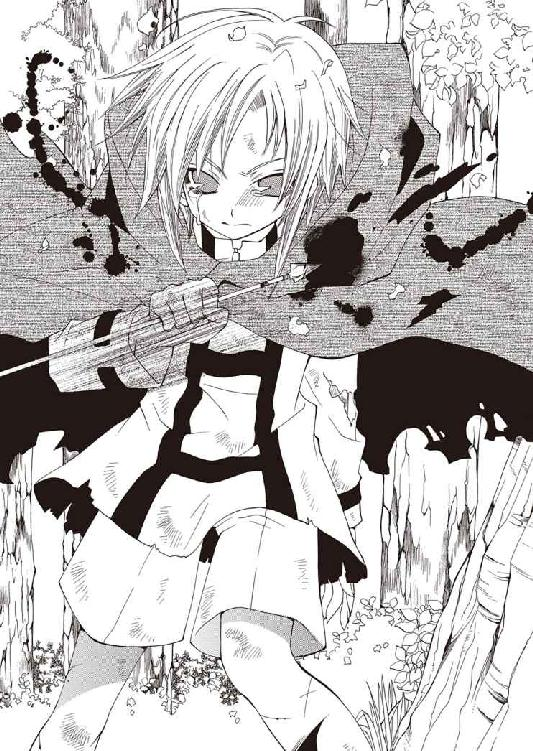
いつの間にか頬を伝っていた熱を、頭を振って振り払い。
握りしめていた矢を投げ捨て、ミロは鬱蒼とした森の中へ駆け出していった。
◆□□◆
ひと月という時間について。
それはある少年が、傷ついた身体を引きずり荒野を渡り切るのに必要で。
ある老人が、妄執の計画を次の階梯へ進めるために有意義で。
ある少女が、崩れた心を風化させるのに十分で。
ある男が、答えを出すには甚だ不十分で。
しかし、誰にも同じ長さと速さで過ぎていく──
ひと月という時間は、そんな時間だった。
◆□□◆
中央都市。
ワイアットハートと言う名で呼ぶ者は市民ですらほとんどいません。州国独立戦争の英雄にちなんだ名ではありますが、形骸化した名前を大事にするのではなく、彼が遺した独立の信念と不屈の精神を受け継ぐ事こそ、州国民の務めとは言えないでしょうか。英雄ワイアット・ジョルトの歴史は、ケントヴェ・ストリート独立記念博物館まで──
「──なにしてんだ、座敷犬」
「ん？ 逆ナン待ち」
突然声をかけられて、バーンは派手な色遣いの紙面から顔を上げた。
広場の噴水にもたれていた彼の前に、いつそこへ現れたのか一人の男が立っている。歳はそう離れていないだろうが、浮かべたしかめ面にはいやに年季が入っていた。
「そんな小道具まで用意しなきゃならないタマか、お前が」
「意外と面白いもんだよ。大陸一の観光スポットが週一ペースで増えてくし」
笑い、持っていたパンフレットを振ってみせる。観光協会ではなく私営の旅行店が発行している物で、かなりの誇張とデマが混じっていた。そんな物でもなければわざわざ読む必要はない──ひと月も滞在していれば、情報にはそれなりに通じてくる。
「......にしても、珍しいね。いつもはブロック・キャリバーが来るのに」
「隊長はアビスパ卿のところだよ。ヤバい実験の立ち会いだそうだ」
制服の肩をすくめ、男──〈抗竜党必死開拓団〉のスクィージ・キャンドルブックは面倒臭そうに溜め息をついた。そして胸のポケットから紙片をつまみ上げ、
「で、用件だが。えー......『本日、《息吹》調律日。日没までに研究棟第四ラボへ』」
「あれ？ 今朝もあっちに顔出してるんだけど......データ取りとかなんとか」
「知るかよ。ったく......連中、すっかり俺たちをメッセンジャーと思ってやがる」
舌打ちし、スクィージは紙片を押しつけて来た。それを適当に畳んでパンフレットと一緒に上着へ仕舞い、空を見上げる──太陽はまだ南天を少し下り始めた所だ。
「〈抗竜党必死開拓団〉は女の子の団員を入れるべきだよ。こんな良い天気に、なにが悲しくて男につきまとわれなくちゃならないんだか」
中央都市で過ごすひと月、バーンには常に〈抗竜党必死開拓団〉、あるいは『アビスパス』の護衛がついていた。《罪人竜の息吹》に対する保険だと老アビスパには聞かされたが、監視されているのは明らかである......それに不都合があるわけでもないのだが。
呟く彼に劣らず渋い顔で、スクィージがうんざりと呻く。
「贅沢言うな。お前はなにするのも、どこへ行くのも金が要らないんだからな。......言っとくが、ついて行く俺たちは自腹切ってるんだぞ」
「え......そうなの？ 【抗竜党】から経費で落としてるのかと思ってた」
「『開拓護衛軍の本分でない仕事は経費と認めない』そうだ。その本分でない仕事を押しつけたのが誰だか忘れたらしい。耄碌しやがって、評議会ども」
石畳を蹴飛ばし毒づいてから、彼はふと、訝しげにこちらの顔を覗き込んできた。
「............だがまあ、意外と言えば意外だよ」
「ん、なにが？」
「もっと派手に遊んでるかと思ってたのさ。娯楽には不自由しない街だしな」
「──────まあ、ね」
一瞬詰まらせた言葉を、バーンは即座に薄っぺらな笑顔で取り繕う。
「ほら、最初から飛ばしすぎると息切れするから。............もうあくせく辺境をうろつく必要なんかないんだよ。僕は開拓辺境の成功者なんだからさ」
浮かべた作り笑いはそのまま、バーンはそっと自分の格好を見下ろす。
身につけている服は皆、選りすぐられた最高級品だ。アクセサリーもすべて最新のモデルを特別に取り寄せており、一つ売れば一年は遊んで暮らせるような物ばかりである。同じような物はホテルのクローゼットに大量に収められているし、その部屋も本来は議会政府の要人が専用に借りる最上等のスイート。それらが全て、サイン一筆で手に入る。
つい最近まで、彼がつまらない辺境のチンピラだったとは誰も信じないだろう。
しかし──
（足りない）
「あん？」
頭に浮かべたつもりの言葉を、知らず声に出していたらしい。スクィージが怪訝そうにこちらを見るが、バーンは答えず、ぐるりと街並みを見渡した。
乱れなく舗装された通りには、いつでも人の姿が絶えない。区分けされた車道には馬車だけでなく自動車も往来している。彼も一台オートモービルを手に入れてみたが......不思議なほど、その乗り心地は味気ないものだった。
それだけではない。一ヶ月間、この街で触れた全てがそうだった。
賭場でダイスを投げてみても、贅を尽くした食事を作らせてみても、酒場で女の子を口説いてみても、何もかもが薄紙一枚を通した他人事にしか感じられない。どこへ自分を置いてもどこか足りない、ぴたりと収まらない。欠けたパズルのピースのよう。
（僕は、なにか失くしてる）
以前、その「なにか」は確かにそばにあった。すぐ隣に、背後に、あるいは目の前にいて、呆れたような銀の瞳で彼を見つめていたのだ。
（きっと............まだ、取り返しはつく）
極めて困難だが、まだ失くしたものは取り戻せる。
しかし、そのためには『アビスパス』との契約を棄てる必要がある。それは大陸中の人間が羨む成功者の地位を棄てることであるが......それ以上に、《罪人竜の息吹》を抑える手段を失う事の方が重大だ。それは死の宣告と変わりない。
どう考えても迷う必要などない選択のはずなのだ、が。
右手の小指を見下ろす。そこに嵌っているのは洒落たアクセサリーの中では飛び抜けてみすぼらしく不格好な──アーティアが彼にくれた、頼りない御守り。
この指輪が引っかかっている。高級な服と平穏無事な日々と、何より愛しい自分の命との天秤にかけられ、この今にもすり切れそうなちっぽけな指輪だけが拮抗していた。
（僕は........................アーティアを失くしたんだ）
ひと月かけて確認してきた事実がそれだった。
もう何年も一緒にいるような気がしていた、冷たく鋭い竜徒の少女。どれだけ騒いでいても、どこで遊んでいても、そこには彼女がいない。それだけで、どんな事も夢の中の出来事のように現実味がなかった。
──すぐにでも、こんな街は飛び出したい。あの子を探しに行くためならこんな生活には何の未練もない。本当だ。嘘じゃない。嘘じゃ、ない。
（............でもッ..................！）
でも────怖い。
ずっと、自分はアーティアに恋をしているのだと思っていた。彼女のためなら命懸けで踏ん張れると思っていたし、事実、死ぬかも知れないような危地を何度も切り抜けた。
だが今回だけは訳が違う。死ぬかも知れないのではない。確実に、死ぬ。
死ぬのは、怖かった。
それを恥と思ったことはない。
だが、自分の意気地のなさをこれほど腹立たしく思ったことはなかった。
どれほどの時間、そうしてそこに立っていたのだろうか──バーンが我に返ったのは、目の前で揺れる手の平に気付いてからだった。
「......おい、おい！ 目ぇ開けたまま寝てるのか？」
はっとして視線を上げると、スクィージがこちらを睨んでいる。
「《息吹》に喰われるなら喰われるで、俺が当番じゃないときにしてくれよ」
「うわ、すっげぇ他人事......大丈夫だよ。ほら、眼も青いままだろ？」
へらりと顔を緩めて眼を指さしてみせる。確認したわけではなかったが、何も言ってこないところを見るとその通りだったのだろう。
スクィージはいかにも覇気のない調子で頭を掻き、通りの一方を指さした。
「暇なら劇場通りの方でもぶらついてこいよ。コンフェソラ・ホールの公演は見に行ったか？ 新鋭の女優がいてな。ここ最近はずっと、そいつの公演で一杯だとよ」
「へえ、まだ街の東側にはあんまり行ってないんだ。西の方が遊べるところ多いし」
指された方を見やってから、バーンは苦笑をこぼす。
「あんたにまで気を遣われるなんてね。そんなにヤバい顔してたかい？」
「さてな。どのみち、お前がへこんでる原因なんて────、？」
素っ気なく肩をすくめると、スクィージはふと口を噤んで顔を横へ向けた。一瞬で厳しく引き締められた表情に少し驚き、そちらを見やる。
車道の交通島に交差する通りの一本、街の外周に続くストリートの様子がおかしい。人々が集まり、困惑した顔を見合わせていた。喧嘩や事故......にしては静かに思えるが。
「......なんだろ、あれ」
スクィージは答えず、無言でベルトに吊っていた警棒を握りしめる──中央都市では刃物の携行が禁じられていた──。小走りに駆けていく彼を見送り、しばし迷った後......バーンもその後を追い走っていった。途中、集まっていた人に話しかけてみる。
「どうしたの、なんの騒ぎ？」
「さあねえ。なんだか、浮浪者が倒れてるって言ってたみたいだけど」
背広に中折れ帽の勤め人然とした格好の男はそれだけ答え、人垣の向こうを覗こうと頭を動かしていた。肩をすくめ、人垣をかき分けていくスクィージに続く。
人垣を抜けると、確かに歩道の端に誰かが倒れているようだった。そばで保安官事務所の制服姿が二人、困ったように視線を交わしている。早く保護するなり連行するなりすれば良さそうなものだが──次の瞬間、バーンはぎょっとして呼吸を止めた。
「おい、フラットランド............！」
肘でこちらを小突き、スクィージが小声で囁く。はっと我に返り、バーンは慌ててそちらへ駆け寄っていった。近づく彼に気付いて、保安官たちが面倒臭そうに手を振る。
「ダメダメ、近づかないでくださいよ。市民の皆さんは──」
「失礼、【抗竜党】の者です。火急の用件で出向いてきていまして......」
保安官をスクィージが押しとどめている間に、バーンは倒れている人物を抱き起こした。ぼろぼろの外套は泥と血で変色しているが、指で拭うとわずかに茜色の布地が見える。
子供と呼んで良い少年だった。うなだれた傷だらけの顔には、見覚えがある──
「そいつ......あのときのガキか？」
「............うん、ミロだ。ミロ・デルッカ。なんだって、こんな..................」
訊ねるスクィージに答え、バーンはミロの顔にかかった髪をどける。と。
その唇がわずかに震えた。譫言のような不明瞭な呟きだったが──
「......ぃだ......アーティア、助け............バー、ン............」
確かに、そう訴えているのだという確信があった。
深く息をついて、空を見上げる。
（──まだ、答えなんて出ちゃいないってのに）
ミロを抱える手。そこに嵌った小さな指輪に視線を落とし、もう一度嘆息する。
天秤は突きつけられた。息苦しい気持ちの中、バーンはそれを確信した。
◆□□◆
「ひ、ぃいぃッ......い、あ、ああぁああぁああぁ──────!?」
「もういい。やれ」
中央都市郊外の、ある砂漠の一隅で。
その無感動な命令は、あるいは先に上がった悲鳴よりよほど耳障りだった。
腰の後ろで手を組んだシム・リム・アビスパの涼しげな顔を睨みつけてから、ブロックは肩に担いだ装置の照準をそれに合わせる。
それはもう、悲鳴を上げた口の在りかすら分からないほどの変貌を遂げていた。
ほんの数秒前、老アビスパが命令を下す直前まで人の形をしていた物体は、身体中からどす黒い肉腫が膨れ上がった異形になり果てていた。蠢く肉塊を睨み、歯を軋らせて──ブロックは担いだ装置のレバーを倒した。
装置の大雑把な形状は、トロンボーンに似ているかも知れない。機関部を収めた角柱状のフレームから飛び出した不格好な喇叭状の部品が振動し──次の瞬間、轟音と共に馬に蹴られたような衝撃が突き刺さり、彼は五歩ほども後ろへ滑っていく。
装置から放たれたのは巨大な炎の塊だった。宙を駆けた炎は身悶えする肉塊に突き刺さると、再び爆音を上げて弾け飛ぶ。
叩きつけるように吹き返してくる熱風にも動ぜず、老アビスパは口の端を歪めた。
「──くひッ。まあ、ナジロ・ティンブリッジではこんなところか」
爆発が起こった地点に、黒い肉塊の姿は見あたらない──生き物が焦げるむかつく臭気を荒野の風が吹き払っていく。傍らでクリップボードになにやら書き付けている数人の社員を振り返り、老アビスパは淡々と言葉を並べていった。
「集束《息吹》砲の方はどうだ」
「威力はクリア、でしょうか。オーガンライト・コアのみで生体同調しないタイプとしては、ほぼ最高値に近い数字です。......ただ反動が想定以上なので、部品が『飛んだ』可能性が高いですね。調整して、もう一度検証する必要があります」
「そうか。......聞いての通りだ、ブロック・キャリバー。一時間後に再実験を行う」
「アビスパ卿──────これは、狂気だ！」
先ほど呑み込んだ分まで纏めて吐き出し、ブロックは老アビスパを睨みつけた。寄ってきた社員たちに装置を投げつけて押し潰しながら、大股にそちらへ詰め寄る。
「人間の複製は、優秀な開拓者を複製し辺境開拓の効率化を図るための技術である......あなたは【抗竜党】にそう仰ったはずではなかったか!?」
「解釈の相違だ。《罪人竜の息吹》という唯一無二の原石を、万人が扱える鉱石へ製錬するための実験だよ......それに、喰わせたのは役立たずの機械施術者だ。どのみち廃棄するつもりだったモノを、最期に有効利用したにすぎん」
呵責も疑問もない口振りに激昂し、拳を振り上げる──その直後、視界の端で銀光が閃く。気付けば眼前に、一人の男が立っていた。フェレトロ・シリーズ。
振り上げた肘の内側、動脈にぴたりと細剣の先を押し当て、彼はにこりと微笑んだ。
「どうか落ち着いてください。右腕が不自由になっては、開拓も続けられますまい？」
「小癪............腕を失っても、通すべき道がある！」
「立派なことだが、くひッ──貴様が死ねば別の人間を用立てるまでよ。十四番目、次の実験はデイジー・ドリトルで行う。施術を行っておけ」
「承知いたしました、我が主」
恭しく一礼すると、彼──カトルセ・フェレトロとでも言うのだろう──は剣を引き、離れた場所に停めてある大型の自動車へ向かっていった。「変貌」させられる為に用意された人間を閉じこめた鋼鉄の護送車である。
（シム・リム・アビスパ......この男は、なにを考えている............？）
狂気の焔を征服し、彼の狂気はどこへ向かおうとしているのか。
少し叩けば折れてしまいそうな背を見下ろし──ブロックは、震える拳を解いた。
第三章 紅へ紡がれる Burn the"L"ier! [NG & NG mix]
竜徒という連中は総じて、頑丈に出来ている。
保安官を丸め込み『アビスパス』の医療施設へ担ぎ込んだミロは、実際、息があるのが不思議な有り様だった。全身の裂傷と、それをろくに手当てもせず動き続けた事による衰弱が酷いということである。なので。
「なんぼなんでも、それは止めてあげようよ。人として」
「うっさいですわね。どうせ死にゃしませんわよ」
心底困った顔のバーンに止められたキャロラインは鼻を鳴らし、寝台に横たわるミロに振り上げていた消毒液入りのタライをサイドボードへ戻した。
「竜徒を保護したなんてラボから報告されて来てみれば......いつぞやのチビジャリじゃありませんの。つまらないことで時間をとらせないで下さいますこと？」
「だからあんたは呼ばなかったんですけどね、レディ・アビスパ」
「次にキャロりんと呼ばなかったら、あの消毒液はあなたにぶっかけますわよ」
睨み合うスクィージとキャロラインは放っておき、彼は寝台へ視線を下ろした。担ぎ込んだ時は死にそうな有り様だったミロも今は静かに眠っている。
「......しかしどうしたんだろ。尋常じゃないよ、これ」
「怪我のことか？ それとも、竜徒が中央都市に入り込んだってことか？」
「両方ですわよ、両方。警備隊はなにをしてましたの？」
即座に言葉を返すスクィージたちへ振り返り、バーンは肩をすくめた。
「目印の茜色は泥まみれだったし、子供の竜徒ってのも珍しいからね。辺境ならともかく、中央都市の人間だったら分からなくても仕方ないさ」
「だが実際、こいつは竜徒だ。確か《息吹》も使えたはずだし、害獣や野盗程度に後れは取らないだろ。......ここまで怪我を負ったのは何故だ？」
「ていうか、そもそもなにしに来ましたの。コイツ」
寝台を蹴飛ばしたキャロラインが、ふんぞり返って無理やりミロを見下ろす。
「目的次第ではタダではおけませんわよ。面識もあることですし、慈悲の心で絞首か銃殺かサボテンかは選ばせてあげるとしましょう」
「いきなり処刑の方向で考えなくてもいいと思うけど。......サボテンってなにさ」
「ま、チビジャリのことはどーでもよろしいんですの──フラットランド。あなたまだラボに顔を出していないでしょう？ 向こうの準備はとっくに整っていますのよ」
質問は綺麗に無視して、彼女は柔らかそうな頬を膨らませた。窓の外ではとっくに陽が沈んでいる。バーンはぱたぱたと手を振り愛想笑いを浮かべた。
「ごめん、心配だったからさ。できれば意識が戻るまでいてあげたいんだけど」
「......図々しいですわね、《罪人竜の息吹》のオマケの分際で」
さりげなく酷いことを言いながら、キャロラインは可愛らしい造作を台無しにする仏頂面でこちらを睨んでいた。が、やがて諦めたように嘆息する。
「分かりましたわ。妥協案と行きましょう」
「......妥協案？」
「要するに、意識が戻れば良いのですわよね」
「──っだあああぁああぁああぁあああぁあッ!?」
全身にくまなく凶悪な激痛が突き刺さり、ミロは悲鳴を上げて跳び起きた。
「んふッ。ほらご覧なさい。一撃でしてよ」
「うーん......やるんじゃないかって気はしてたけど」
「止めろよ、じゃあ」
「おッ、おぉ、おぉお前らあああぁぁあッ!?」
とりあえず怒声を張り上げながら、我が身に何が起こったのか確認する。
見覚えのない部屋にいた。天井にはガス燈が下がっている。広くはない。彼は窓際に置かれた寝台の上に立ち上がっていた。そばに三人の人間が並んでいて......その中の、空のタライを抱えた三白眼の少女を指さす。
「なんなんだ、くそッ！ 俺になにをした!?」
「うっさいですわね。ちょっと活を入れてやっただけですわ」
心底煩そうに吐き捨てると、彼女はタライを投げつけてきた。それをはたき落とし、自分の格好を見下ろす。簡単な造りの服を着せられており、全身の傷はきっちり手当てされていた。なぜか上半身がぐっしょりと濡れていて、奇妙な刺激臭がする。
「傷口を消毒するのは当然ではなくて？ 沁みたかも知れませんけど」
「こ、この────、っ？」
憤慨に任せ怒鳴りつけようとした途端──すうっ、と視界が暗くなる。身体が平衡を失い転倒しかけたミロは、予測していたように腕を伸ばしてきた男に支えられた。
「落ち着け、竜徒。お前は血を流しすぎてる」
「くッ......」
されるまま寝台に座らされ、ミロは力なく歯ぎしりする。憎たらしい金髪の少女も、灰色の制服を着た男にも見覚えがあった。以前、人間の街に下りた時に見た顔だ。名前は確かキャロラインと────男の方は覚えていないが、まあどうでもいい。
そして、最後の一人。
「............バーン・フラットランド」
いかにも軽薄そうなその男は、名を呼ばれるとへらりと口元を緩めた。
「やあ、しばらくぶり。元気......じゃないよね、いまは。はは」
膝の上に置いた手を握りしめる。硬い笑顔のまま、バーンはこちらへ近づいてきた。
「しかし、こんなところで会うとは驚いたね。いったいどうしたのさ。怪我だらけだし」
「............」
「......えっと......と、とにかくゆっくり養生しなよ。なかなか快適な──」
明後日の方へ視線を逸らそうとするバーンを、ミロは胸ぐらを掴んで引き留める。そして困惑する彼の顔を、憎悪を込めて睨みつけた。
「──お前、なにしてるんだ」
「............なにって、なにが？」
「こんなとこで......アーティアを放っといて、なにしてるんだよ............！」
引きつる喉から、掠れた声を振り絞る。
「なにが起こってるのか、俺には分からないけど......アーティアが大変なんだ......！ 心を失くしかけてるって......支えてやれる奴が必要だって............!?」
「......心、って............？」
「アーティアは里に捕まってる。このままじゃ......このままじゃ、死────ッ」
その先は言葉にならなかった。
痺れたように力の入らない腕を震わせ、顔を伏せる。そして少しの間口を噤んで──顔を跳ね上げると、ミロは喰らいつくように怒声を叩きつけた。
「お前、なにしてるんだよ！ 俺じゃ駄目なんだ──俺じゃ駄目なのに！」
「............」
「分かんないわけないだろ!? アーティアを支えられるのなんて、お前しかいないじゃないか！ 当たり前じゃないかよ！ なのにッ......こんなとこで、なにしてるんだよ!!」
「............ミロ」
「頼むよ────アーティア、助けてくれよ............ッ!!」
半ばもたれかかりながら言いつのり、最後は、彼の胸を拳で叩く。肩の傷に衝撃が響くが、その痛みも気にならない──胸の内の方が百倍痛い。
紡いだ言葉は自分でも意味が通っているとは思えなかった。
それでも、探るように眉根を寄せて、バーンは口を開く。
「............よく分からないけど、アーティア......危ない目にあってるのかい？ その......し、死ぬかも、知れないような？」
黙って頷く。口を開けばみっともない泣き声になってしまいそうだった。
「そっか。......それ、まだ助けられるかも知れないんだよね？」
「────」
「そっか。......君は、それを伝えるために、こんなボロボロになってここまで......？」
「────っ！」
「そっか......」
頷き続けるしかないミロの頭に触れ、バーンが声を落とす。
沈黙していたのは一呼吸ほどの間だっただろうか。
バーンは浅く息をつくと──こちらの両肩に手を置き、薄く微笑む。
「......ごめんね。悪いけど、僕は行けない」
「なに？」
困惑した声で呻いたのは、例の灰色の服の男だった。
視線でそちらを振り向いてから、バーンはミロを寝台に押しのける。
「《罪人竜の息吹》の様子がおかしい。暴走しやすくなって、危険なんだ。アーティアもそう考えたから、暴走を確実に抑えておける中央都市に僕を置いてったんだよ。......ここを離れてみすみす罪人竜を復活させたんじゃ、逆に彼女に迷惑がかかる。だろ？」
「ちょっと......それ、本気で言ってますの？」
急に詰め寄ってきたキャロラインが、ぎろりと翠の双眸を尖らせた。
「あなたがあの小娘を諦めるなんて、考えられないのですけれど」
「────そうさ、諦めなんかついてない。つくもんか」
寂しげな、しかしどこか諦観の滲んだ顔で、バーンが笑った。
「......だけど、死にたくないよ。そんな、わけわかんない罪人竜なんかに喰われてお終いなんて......そんなの、嫌だ。だったら一生、この街から出なくていい」
「......そう。そうですわね」
「それに──ほら。ミロも混乱してるじゃないか。アーティアが危ないっていうのも勘違いかも知れない。そうだよ......あの子が死ぬなんて、そんなこと信じられない」
顔を引きつらせるキャロラインの肩をぽんと叩いて、バーンはふらふらと歩き出す。声と同様に震える足で危なっかしく扉の前に立ち、肩越しに力なく手を振った。
「《息吹》の調整、行ってくるね。──ミロのこと、よろしく頼むよ」
引き止める声は上がらない。彼が出て行き、扉が閉まると......ずっとそちらを睨んでいたキャロラインが吐き捨てるように呻く。
「──ま、妥当な判断ですわね。《罪人竜の息吹》の不安定は事実ですし。......お祖父様も、それを見越してフェレトロ・シリーズを使ったのでしょうけれど」
「と、いうと？」
眉をひそめる灰服の男に、キャロラインは表情を歪めた。
「以前《罪人竜の息吹》を複製した時点では技術が未完成だったのですわ。いまですら完成とは言い難いですけれど。不十分な装置で、強引に生命情報に介入した結果............フラットランドの《息吹》は極端に暴走しやすくなっています」
「っ。まさか、アビスパ卿は？」
「故意に、なのでしょうね......フラットランドを意のままにする為に。ふんだ、お父様がいらしたらこんな腰抜けの奸計、絶対お許しになりませんわ」
ぴょこんと寝台の端に座り、忌々しげに鼻を鳴らす。消毒液で濡れたシーツが嫌なのかこちらを押しのけてくるのは鬱陶しかったが、彼は口を閉ざしていた。
「それにしても......ああ、フラットランドっ！ あそこまで腐ったトンチキとは思いませんでしたわ！ ぐだぐだぐだぐだ見苦しく言い訳並べて、あれでも男ですの!?」
「妥当な判断って言ったばかりじゃないですか、あんた」
「個人的に気に入りませんの。あれでは決断から目を背けているだけの臆病者ですわ!!」
ばたばたと足を振って、キャロラインは苛立たしげに口を噤んだ。
嘆息し、ミロはふと窓の外に目を向ける。
薄ぼけた闇越しに巨大なビルディングが建ち並んでいるのが見えた。そう言えばこの部屋もずいぶん高い場所にあるんだなと、呑気な感想が思い浮かぶ。
──そろそろ、構わないだろうか。
「確かに、あいつは臆病者だ」
突然口を開いたミロを、二人が訝しげに振り向いた。
「俺はあいつが嫌いだ。臆病者で、腑抜けで軽薄で根性無しで、アーティアが危ないときもそばにいてやらないで......本当に、ろくでもない人間だ」
「......いきなりなに言っていますの、チビジャリ？」
「お前も知ってるはずだけどな。あの男のどこが一番ろくでもないか............平気な顔して、嘘をつくところだろ」
ちらりと隣を見る。キャロラインはきょとんと首を捻り......唐突に顔を強ばらせる。無言で寝台を飛び降りると、扉を蹴破りけたたましく部屋を飛び出していった。
ざまあみろ。そんな気持ちで苦笑していると、こちらは驚いた様子もなく灰服の男が声をかけてきた。薄々感づいてはいたのかも知れない。
「黙ってた方が良かったんじゃないのか？」
「ふん、あのチビに勘違いされたままじゃ腹が立つ。そう長く騙し通せやしないだろうし......逃げ足だけなら星守りだって敵わないような奴だ。大丈夫だよ」
軋む身体を動かし、苦労して寝台の上に胡座を掻いて──シーツについてはもう気にしないことにした──ミロは男を睨みつける。
「俺も訊きたいことがある。............アーティアたち、いったいなにがあったんだ。全部説明してもらうぞ。もし話さないなら────」
「落ち着けよ。......いま暴れて、勝ち目があるとも思わないだろ」
静かに息を吸い始めるミロを、男が片手を掲げて制した。それでも視線を緩めないミロへ面倒臭げに溜め息をつき、頭を振る。
「説明はしてやるさ。ただ、俺も団長から又聞きしただけってことを了解しといてくれ。それに......多分、いま話しても途中で切り上げることになる。だろ？」
──バーン・フラットランド、逃亡。
その報に『アビスパス』中が騒然としたのは、それからわずかの後だった。
◆□□◆
社屋を抜けだした後、東のストリートへ逃げた事に大した理由はない。
ホテルも主な遊び場も街の西側だったので、追っ手がかかるならそちらへ重点的に網を張るのではないかという程度の思いつきだったのだが......
（......こーいうのを、浅知恵っていうんだろうな）
身を隠した路地からこっそり顔を覗かせて、バーンは表の様子を窺った。ガス燈に照らされた石畳を鳴らし、何人もの黒服の男がストリートを行き来している。
嘆息し、彼は路地の奥へ足を向けた。表通りを行けば十歩歩く前に取り押さえられる。ステーションは網を張られているだろう──徒歩で脱出するしかない。
（徒歩で......一番近い街まで、どれくらいかかる？）
頭に、周辺の地図を思い描く。まず馬かなにか、足を確保できなくては話にならない。いつ火が点くか分からないダイナマイトを抱えているような身体なのだ。
......胸中に、不安が影を落とす。
だが脚は止めない。止めれば引き返さずにいられる自信がなかった。
（本当に............どこまで格好悪いんだ）
アーティアが危地にあると聞いた時には、もう街を出ることしか考えていなかった。
部屋を出てすぐさま隣室から窓枠伝いに壁を下り──騙した「客」から逃げる際よく使った得意技だ──通りを駆け出した時も、迷いはなかった。
だが感情の波が引き、理性が口を挟んでくれば、意気は途端にくじけていく。
死にたくない。死ぬのは怖い。死にに行きたくなんかない。
先刻の言葉もいくらかは本音が混じっていたはずだ。だが、それでも......
「............っ」
入り組んだ路地を勘だけで折れ、曲がり、ひたすらに進んでいく──と。
行く手からせわしない靴音が響いてくるのに気付き、バーンは急制動をかけた。自分の足音と思っていたせいで気付くのが遅れたのだ。
咄嗟に横の路地へ飛び込むが......少し行くと、また行く手から足音。
（ッじ、冗談だろ!?）
再び脚を踏ん張り、慌てて周囲を見渡す。背の高い建物に挟まれた一本道で、身を隠せそうな物陰はない。足音は、前後共に近づきつつあった。
（んな、バカな!? あり得ないだろこんなの!!）
入り組んだこの街の路地の一本に、よりによって自分が迷い込んだ瞬間に前後を挟まれるなど考えられない。だが事実、追っ手は迫っている......
「あーもう......ッ！」
髪を掻きむしり涙を浮かべ、バーンは横手を振り返る。
煉瓦造りの建物の壁に、小さな扉がついていた。飾り気のない古びた戸板だが、しっかりした造りをしている。通用口なのだろう。
神に、悪魔に、先祖の霊に、御利益のありそうなものへ片っ端から祈りを捧げて真鍮のノブに手をかける。鍵は......かかっていない。
まずは幸運に感謝しつつ扉を開け、素早く建物の中に身を躍らせ──
「っ、誰!?」
──間髪入れず打ち止めとなった幸運に、バーンは胸中で呪いの言葉を呟いた。
「アランの奴、楽屋の鍵は直したって言ってた癖に......動かないで。人を呼ぶわよ」
中にいた人物は女性であるらしい。気の強そうな芯の通った声を険悪に低くする。バーンは相手を刺激しないよう両手を肩の高さに挙げ、ゆっくり振り返った。
「ま、待って待って、違うんだ。......泥棒とか、そんな気の利いたもんじゃない」
楽屋、という言葉から想像していたより遥かに広い部屋だった。照明は鏡台に置かれた角燈だけだったが、見えるだけで十着以上の絢爛極まりない衣装が吊されている。声の主と思しき人影はその傍に立っていたが、暗いせいで顔が見えない。
悲愴な、影のある微笑を浮かべると、バーンは哀しげに聞こえるよう声を造った。
「悪党に追われているんだ。ほんの少しの間でいい、ここにいさせてくれないか──君に迷惑はかけない。約束する」
「悪いけど、女を騙そうとしてる男の喋り方見抜くのは得意なの。経験豊富だから」
（......げ）
あっさり見破られ、取り繕っていた憂いの表情を崩してしまう。背中に伝う冷や汗を感じながら──腑に落ちないひっかかりを覚えて、バーンは顔をしかめた。
これだけで荒野を生き抜いてきた口先と演技である。いくら経験があろうとそう簡単に見破られてはたまらない。これではまるで、彼の嘘の癖を知っているような......
「君は──」
「動かないでって言って────、っ」
思わず足を踏み出したバーンと、素早くランタンを掴みこちらに向けた彼女は、そこで互いに動きを止めた。彼に至っては呼吸すら止めていた。
ランタンの向こうに見えた彼女は、バーンと変わらない上背があった。上品に、艶やかに彩られた細身のドレスが、スタイルの良い彼女を更に魅力的に引き立てている。
硬直していた時間は長くはなかったはずだ。つまり、呼吸を止めていられる時間よりは短かった。糸を切るように、バーンは吐息を押し出す。
「......そっ、か。劇場通りの、新鋭女優。君のことだったなんて」
「............そうよ。悪い？ 落ちぶれてないのが気にくわなかったかしら」
こちらはもう落ち着いた声で、彼女は素っ気なく言い捨てた。もっともランタンを鏡台に置く手が震えている所を見ると、表面ほど冷静ではないのかも知れない。
「あなたの噂も聞いてるわ、バーン。この劇場『アビスパス』の系列なのよ。スタッフにも社員が多いから、彼らに追われてるんだとしたら気をつけることね」
「う......き、気をつける。でも、知ってたなら会いに来てくれればよかったのに」
「会えるわけないじゃない。............会えるわけないじゃない」
わざわざ言い直した理由は訊かない。それははっきり承知している。
先ほど追っ手に囲まれた原因も分かった──当てずっぽうに進む内に大通りの近くまで出ていたのだ。それは幸運なのか不運なのか判断しかねていると、彼女は綺麗な蜂蜜色の髪を掻き、捨て鉢な笑みを浮かべて椅子に腰を下ろす。
「最初は小さな酒場で踊ってたんだけどね。たまたま、一本書いてみた舞台の案を売り込んだら大当たり──怖いくらい好評で、私も舞台に立つことになってるってわけ。......お気の毒さまね。私は、中央都市でも成功を掴んだ」
「なんで気の毒なのさ。君が大成功してるんだ、嬉しいに決まってるだろ」
困った顔で笑い、鏡台の上に視線を落とす。今日の公演のパンフレットだろうか、彼女の姿が描かれた紙が置いてあった。舞台のタイトルは──
「............」
「ねえ、バーン──あなたなんで追われてるの？」
彼が息を呑んだ事には気付いていない様子で、彼女は声をひそめて聞いてくる。
「例の《息吹》の研究に協力する代わりに、かなりいい待遇を受けてるって聞いたけど」
「あ......うん。凄いよ、この街ならどこで何しようとフリーパスなんだ。やろうと思えば街中のサルーンから女の子集めて、朝まで遊び倒すことだってできる」
パンフレットに伸ばした指を慌てて引っ込め答えると、彼女はそう、と頷き、
「なんでやらなかったの？」
「......やる気になれなかったから、かな」
その理由は問われない。恐らく、先ほどの彼と同じ理由で。
代わりに大きく深呼吸をすると──彼女は、素っ気ない調子を装って口を開いた。
「────アーティアは、元気にしてる？」
「......。さっき聞いた話だと............死ぬかも知れない、ってさ」
風が、戸板の隙間を抜けるような音がした。
宝石のような瞳を愕然と見開く彼女に、バーンは低い声で続ける。
「でもまだ、助けられる目はあるんだ。あの子は故郷の里に囚われてる。会いに行かなくちゃいけない。......もう行くよ。かくまってくれてありがとう」
凍り付いた彼女に優しく笑いかけ、バーンは先ほど入ってきた扉に向き直った。追っ手はとうに通り過ぎているだろう。また通りかからないとも限らないが。
「............あなたはやっぱり、逃げないのね」
ふと──囁き声に背中を突かれ、振り返る。
鏡台に片肘をもたれて、彼女がこちらを見つめていた。
「《息吹》、危ないって聞いてるわよ。この街の施設じゃなきゃ抑えられないくらい」
「......まあ、ね」
「じゃあ死んじゃうじゃない。......この街出たら、あなた、死んじゃうじゃない」
こちらの返事に即座に被せて、彼女はどこかに震えを隠した声を押し出す。
「あのときも今も、逃げないで、またあの子のために、命懸けて会いに行くってわけ？ それって馬鹿げてる。あの子は............あなたが死んだら、きっと泣く」
「それでも────会いに行くってわけ、さ」
答えは、自分でも意外なほど軽く返せた。
押し黙った彼女に、バーンはふと思い出して付け加える。
「あの子を連れて帰ってくる。......だからあのときのこと、ちゃんと謝ってくれよ」
「......無理よ。あなた、死ぬんだもの」
「だったら構わないだろ？」
肩をすくめると、彼女は無言のまま足元へ視線を逃す。
沈黙は長引いた。
微動だにしなかった彼女は突然、鏡台の抽斗から小さなハンドバッグを取り出し、中からつかみ出した何かをこちらへ投げつける。慌てて、彼はそれを両手に受け止めた。
じゃらりと硬質な音が転がる──投げつけられたのは、鍵だった。
「そこを出て左、分岐の向こうの青い扉のビルに行って。倉庫に自動車が置いてある。劇場の車だから止められはしないと思う。運転できる？」
「う、うん。大丈夫だけど............あの、」
「すぐ行って。......死にたがりの馬鹿に、目の届くところで死んで欲しくないだけよ」
こちらの言葉をぴしゃりとはね除け、彼女は顔を背けてしまう。
その横顔へ、バーンはぽつりと呟いた。
「──君の舞台。さっき、そこのパンフレット見たけどさ」
「......」
「結末が二通りあるんだってね」
「......すぐに行ってって、聞こえなかったの」
「幸せを掴むか、悲劇になるか。その日の結末がどっちに転ぶか誰にも分からない──」
「人を呼ぶわよ!!」
鏡台に拳を打ち付けて、彼女は金切り声を上げる。実際、その声で人が集まってきてしまうのではないかと思うほどの声量ではあった。
「私を責めてるの!? あんな真似をしておいて、ハッピーエンドで終わろうとしてる私が許せないってわけ!? はん、冗談じゃないわ！ 私は間違ったことなんてしてないじゃない────冗談じゃないわ!!」
「ああ冗談じゃない。冗談で、君があのタイトルをつけるわけない」
柔らかく答えるバーンに、彼女は言葉を呑み込んだ。
微笑んで、受け取った鍵をポケットに押し込む。
「たぶんそれでいいんだ。僕もこれから、それをしにいく」
「......どういうことよ」
「二つのこと。......割り切れないなら、天秤ごとかっさらう手だってある。だろ？」
声を上ずらせる彼女へウインクし、扉を開ける。辺りには人影も足音もない。冷たい夜気を一杯に吸い込み、バーンは走り出した。
（どっちも選べないなら............そうさ。どっちもかっさらうしかない！）
この街で、いくら悩んでいても見つかるはずがない。
欲しいものは手に入れる。望みが叶うも叶わないも自分の才覚次第。
二つに一つと決めつけられる筋合いはどこにもない。自分が求める最大限のため、無謀に、危険に、貪欲に挑み続ける────不屈の根性。
駆り立てるのは、ある確信だ。先刻『アビスパス』の社屋でこぼした本音の一片。
（アーティアが死ぬなんて、ンなこと信じられるかよ!!）
その確信だけに全てを託し、バーンは無人の路地を駆け抜けていった。
じきに幕が上がる。
バーンが出て行った扉から視線を外し、彼女は椅子を立った。のろのろと乱れた髪を直しつつ廊下に出る──どのみちセットし直すのだから、適当で構わない。
『冗談で、君があのタイトルをつけるわけない』
ばたばたとスタッフが行き来する廊下を歩きながら、彼の言葉を思い返す。
（......あんなの、適当よ。意味なんかない）
冷たい微笑を唇に乗せて、舞台の段取りを確認する。脚本は演出の都合で変更された箇所も多いものの、大筋は彼女が書いたオリジナルに沿っていた。
──辺境に、女がいた。踊ることで日々を生きる女がいた。
（昔からそう。あいつ、知ったような顔して、結局なにも分かっちゃいないんだから）
──女は夢を持っていた。誰もが注目する大きな舞台で踊りたい。誰でもない誰かから確かな自分になりたい。
（だからあいつは嫌いなのよ。本当に、昔から大っ嫌いだった）
──だから女は、友達を売った。たった二人の大切な友達を、裏切り、見捨てて、罠にかけ、夢を叶える金を作った。
（いつも適当で、嘘ばっかで、そのくせ......こっちの嘘は、すぐ見透かして）
──女は夢を叶えた。華やいだ街で、誰もが憧れる踊り手になった。
（本当、大っ嫌い。..................分かってるんだから、自覚させないでよ）
──成功を掴んだ女はしかし、裏切った友達のことを忘れることが出来なかった。気が狂うほどの後悔と、自分の醜さへの憎悪と恐怖に、女の心は壊れていった。
（............私は......結局、誰でもない誰かのままだ）
──悩み、苦しみ喘いだ末、女が選んだ結末は、
「────さん!? ああもう、よかった......探しましたよ！」
ふと。
誰かに名前を呼ばれて、彼女ははっと我に返った。
目の前に赤毛の若い男が立っている。年上のはずだが、丸い瞳と低い身長のせいで学生のように見えてしまう。彼は安堵の息をつくと、せわしなくまくし立ててきた。
「どこ行ってたんですか、もう開幕ですよ？ いまビクトール君が引っ張ってくれてますから、早く上がってください。彼、アドリブ強くないんですから」
「ごめんなさいアラン。少し考えごとをしてたの」
急かされるまま早足に歩く彼女の髪を、器用に歩きながら直していたアランは、その手も足もまったく緩めないまま心配そうに顔をしかめる。
「もしかしてトレメンディ・ホールの引き抜きの件ですか？ 俺は反対ですよ」
「あら嬉しい。でも違うから安心して。──何度直してって言っても楽屋の鍵を直してくれないスタッフの解雇を、オーナーに頼むかどうか迷ってただけだから」
「......あ。か、勘弁してくださいよ、今夜の公演が終わるまでには直しますから......」
弱り切って呻く彼に意地悪な微笑を残し、舞台袖へ上がっていく。舞台では窮屈そうな燕尾服を着た男が、広い客席に向かって間を保たせるための口上を並べていた。
その場のスタッフたちに遅れを詫びながら、意識の片隅でふと、考える。
（もし......奇跡が起こるなら）
「さあ、長らくお待たせいたしました。コンフェソラ・ホールが誇る歌と舞の姫。その名は......いえ、無粋はいたしますまい。誰しも、知らないはずなどありません」
口上が締めに入り、彼女は深く息をついた。
（もしバーンが死なずに済んで......アーティアが元気に戻ってきて......アランが鍵を直していて..................私が、脚本の結末を決められたら）
そんな奇跡が起こるのだとしたら、その時は、覚悟を決めよう。
照明が明るくなっていく。アドリブは強くないと言いながら、堂々と口上を述べて下手に下がるビクトールと入れ替わるように、彼女は舞台へ進み出た。
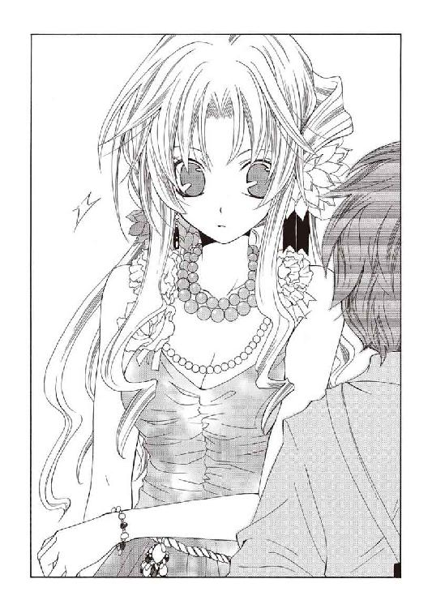
割れるような拍手と眩い光の中、自分にすら気付かれないよう、小さく囁く。
（ちゃんと謝る......ちゃんと、謝るから............ッ！）
「今宵、女は裏切りを悔いて命を断つのか。恐怖を受け入れ、乗り越えることができるのか。どうぞお手にはハンカチを。お送りします演目は......『迷えるろくでなし』！」
お願い────どうか、無事で。
◆□□◆
「どういうことですの、お祖父様!?」
執務机の上に身を乗り出し、キャロラインは椅子にかけた祖父、シム・リム・アビスパを睨みつける。壁際に控えさせているブロックとスクィージ、ついでに引きずってきた竜徒のミロが揃って嘆息をこぼしていた。
「言葉通りだ。フラットランドの捜索隊など出す必要はない」
手に持った書類から顔も上げず答えて、老アビスパは起伏のない声で続ける。
「当面必要なデータは取ってある。いまは《罪人竜の息吹》の転用実験が最優先だ」
「だからって────！」
「奴には『鈴』をつけた......くひッ。のたれ死ぬ前に回収はする。それで十分だ」
抗弁しようとする彼女を、書類を降ろした祖父が見返した。瞬間──得体の知れない悪寒に、キャロラインは言葉を呑む。その頃には、祖父はもう書類に視線を戻していたが。
「──軍部の編制はどうなっている？」
「......順調、ですわ。武装はクリア......人員は軍役経験者を中心に選別しています」
「我儕の兵を充てろ。下手な騎兵隊くずれなどより、よほど役に立つ」
「っ了解、ですわ────失礼いたします。......行きますわよ」
恐怖に震える声を抑え、全力で平静を取り繕い一礼する。こちらを見向きもしない義理の祖父に背を向け、彼女はブロックたちを促し退室していった。
教会の礼拝堂じみた荘重な扉が閉まると、キャロラインはだすだすと地団駄を踏む。
「きいいいぃぃぃぃっ！ どーいうことですの!? 契約を踏みにじったのですわよ、コケにされたのですわよ!? いまあのポンツク詐欺師を追わないでどうしますの!?」
「痛ッ!? なにすんだ、蹴るなよ！」
腹立ち紛れに蹴飛ばしたミロが、生意気にも不平を口にしている。服はもう着替えており、茜色の外套だけ畳んで小脇に抱えていた。傍らで、スクィージが半眼で一枚の書類を眺めている。バーンと『アビスパス』が交わした契約書だ。
「署名がバーン・フロットロンドになってるから州国法には触れてない、か」
「卑劣もここに極まれりですわ！ 同じ手口で二度もわたくしを騙くらかすなんて!!」
「......二度も引っかかるなよ、同じ手口なら」
蹴られた脚を庇いながら呟くミロの、今度は反対の脚を蹴飛ばしておく。
悲鳴と罵声を同時にあげる彼を見下ろしながら、ブロックが渋い顔で呻いた。
「シム・リム・アビスパが気付かなかったとは考えにくいな。......とすると、わざわざ小僧に逃げる隙を与えたということになる」
「なんのために？」
契約書を適当に畳むスクィージに、ブロックはうむ、と頷き天井を見上げる。
「............オリジナルの《罪人竜の息吹》。その暴走する様を確認するため、か？」
「それ、得がありますの？ リスクしか思いつきませんけれど」
眉根を寄せるキャロラインに、ブロックは大味なしかめ面を造って見せた。
「──今日、集束《息吹》砲とやらの実験につき合わされたのであるが」
「......確か、複製した《罪人竜の息吹》を使った兵器、でしたかしら？ 竜と渡り合う威力を持った上で、使用者を選ばないとかいうコンセプトと聞いてますけれど」
首を傾げる彼女に、彼は巨大な肩をわずかに落とす。
「問題は、砲ではなく動作試験に用意された的である」
「生きたままの囚人、なんて話なら出来の悪いジョークですわね」
「《息吹》を移植され、強制的に暴走させられた人間だった」
──空気が凍り付いた。
誰もが意識の空隙を突かれて動けない中、ブロックは沈痛な面持ちで息をつく。
「私とて開拓護衛軍を預かる身である。人を殺めた経験がないわけではない......だが、あれはそんな次元ですらない。小童、竜徒ならなにか分からんか？ 身体から黒い肉腫が噴き出し、形は一定ではない。人型、四脚の獣、耳のある巨大な魚──」
「え、ああ......？」
列挙されていく特徴にぎくしゃく頷き、ミロは軋んだ声で答えていた。ちゃんと聞いているのか疑問だったが......話が済むと、絆創膏だらけの顔を深刻そうに歪める。
「......それ、たぶん腐竜、ってやつだと思う。穢れを祓いきれていない身体に竜の記憶を呼び覚ましたせいで、力に耐えきれなかった肉と魂が腐り落ちた、理性のない怪物だ」
「その怪物に、生産する価値は？......例えば、服従させる方法はないか？」
「知性も腐ってるんだ、本能でしか行動しない。......里ではそう教えられた」
思案げに顔を曇らせるスクィージに、ミロは首を横に振った。
「ふうむ......なんとも不穏であるな。《息吹》砲自体も大した威力だった。あれほどの武器が必要になる状況など、現在の州国では考えられん」
「加えて、お祖父様の『軍』ですわ......」
厳しい顔で喉を鳴らすブロックに続いて、彼女も渋面を作って呻いた。
──『アビスパス』内部に、独自の戦力を編制する──
老アビスパの構想に基づき徴用され、彼直属の命令系統でしか動かない彼らはボディガードなどと呼べる連中ではない──彼らのスキルは、明らかな殺人の技術だ。
「なにを考えていらっしゃるのやら............お祖父様はまるで、」
そこで、はたと言葉を止める。
訝しげな男たちをごまかすように咳払いし、彼女は袖から扇を取り出した。
「とにかく！ すべきことは一つです。すぐフラットランドを追跡いたしますわよ！」
「捜索隊は出すなってお下知があったばかりだと思うんですがね」
「お祖父様の直属を動かさなければ問題ありませんわ」
即座に切り返してから、キャロラインはぱっと扇を開いてブロックを見上げる。
「協力して貰いますわよ、〈抗竜党必死開拓団〉。お祖父様も名目上、【抗竜党】所属のあなたたちを拘束はできないでしょうし」
「ふむ......承知した。行く先が竜徒の里ならば連中と一戦交えることも考えられる」
「ずいぶん簡単に決めますね。狗は嫌だったんじゃないですか？」
鷹揚に頷く彼に、スクィージが目を丸くした。
そちらに一瞬だけ視線を向け、ブロックはぼそりと呟く。
「不甲斐ない話だがな。────私は、怖いのだよ」
「............、は？」
「シム・リム・アビスパのそば、否、同じ街にいることすら恐ろしい。あの男が考えていることは分からんが......正気では踏み込み得ない領域へ踏み込んでいることは確かだ。スクィージ君............私は初めて心底から、逃げ出したいと思っている」
歯を剥いて唸り、彼は執務室を睨みつける。いつも通りの豪毅な態度にしか見えなかったが......スクィージは意外なほど深刻な目で彼の視線を追っていた。
鼻で笑ってやろうとしていただけに、重苦しい空気の中で所在がなくなってしまう。なんとなく気まずい思いで扇を閉じ、キャロラインは無理やり大声を張り上げた。
「ま、まあついてくるなら言うことはありません。......んっふっふ、お祖父様の意向がどうあれ、投獄されたお父様の身代わりにフラットランドたちの身柄は必須！ さあチビジャリ、駆け足ですわ！ さながら馬車馬の如くッ！」
「だっ！ だから、お前の方がチビなんだって────おい!!」
背後でミロが激昂しているが、明らかに取り合う価値はないので無視しておく。
（ま......道案内程度には役にはたちますかしら）
動かせる人員のリストを脳内に数え上げながら、キャロラインはふと、先ほど止めた言葉の続きを思い出していた。あまりに突拍子もない、その推測。
（お祖父様はまるで..................戦争でも始めるつもりみたいですわ）
現実味のない発想。喩え話で持ち出した単語でしかなかったはずだ。
それでも、どこか拭いきれない寒気に襲われ──キャロラインは身震いした。
◆□□◆
もとより自動車がそれほど長持ちすると思ったわけではない。
中央都市のゲートを抜けてほぼ一日、街道を外れた荒野を数時間も走破してくれたのだから、市街用の機械としてはむしろ驚異的に健闘してくれたと言える。稼いだ距離は少なくない──それでも、目指す場所への道のりは未だ果てしなかった。
「..................っ」
引きずる足が砂に躓き、バーンは転びかけた身体をなんとか立て直す。
オートモービルが故障した地点から、移動を徒歩に切り替えて半日。車内に積んであった携帯食と水筒は二日分ほどの量があったが、
（ちょっと......まずい、かな）
空は冷たい砂塵に覆われ、ひどく薄暗い。車から引き剥がした方位磁石と地図を見比べのろのろと歩き始めたバーンの瞳は──濁った朱に染まっていた。
（冗談じゃないぞ......こんな、とこで............）
胸の中で躍る焔を抑えようと、必死に意識を集中する。だが、灼熱はむしろ嘲笑うようにその勢いを増し、荒れ狂い、彼を呑み込もうと燃え盛っていた。
──お前は殺される。
ふと。
眩む視界のどこか遠くから、泥が沸き立つような声が聞こえる。
背後を振り返った。砂嵐は消え、綺麗な石畳の歩道が延びている。広い通りの左右には賭場に酒場、女郎宿まで様々な店が猥雑に立ち並んでいた。上品とは呼べないが、日々を生きる人間の活気を想像させる街並み。
見覚えのある風景の中に、バーンは愕然と立ち尽くしている。
（......開拓街、アビスパス..................？）
西部最大の開拓街で、しばらく逗留していたこともあった。
有り得ない光景だった──中央都市からは鉄道を使っても半月はかかるほど離れているし、なにより、辺りには人の姿が見えない。
（この前と同じだ）
以前見た、故郷の村の夢と。
連想に応えるように、通りの中央に人影が現れる。
洒落た服装に身を包み高級そうなアクセサリーをあしらった、綺麗なブロンドの男。顔は薄ぼけていたが、こちらを睥睨する朱色の瞳ははっきりと見て取れる。
──お前は、あの娘のせいで死を選んだ。
（死ぬつもりなんかない......生きて、アーティアを助けに行く！）
──嘘だ！ お前に焔は従わない！
男の声と共に......以前の夢と同じように、前触れもなく街が燃え上がる。
音もなく焼け落ちていく通りを、男が迫ってくる。近づくにつれその顔は、声は、徐々に鮮明になっていた。逆にこちらの意識は加速度的に朦朧としていく。
男が高らかに哄笑する。歓喜に潤んだ、ひどく耳馴染みなようで聞き覚えのない声。
それは、彼自身の声だった。
（お前は死ぬ！ あの娘にもたらされた災いが......私が、お前を呑み喰らう！ お前はお前の命を懸けた、あの娘のために殺される！）
反響する哄笑に意識を揺さぶられながら──唐突に、この男の正体を確信する。
もとより悩むことでもない。こんな禍々しい焔の主、他に考えられなかった。
《罪人竜の息吹》に宿る意志────罪人竜、ニグログルフュ。
街を灼き尽くし、粉砕して近づいてくる罪人竜へ、バーンは血を吐くように絶叫する。
──こんな所で......死んで、たまるか！ 僕はっ............僕が死ぬことを許さない!!
瞬間、ニグログルフュが歩みを止めた。
忽然と、彼を囲むようにペンで引いたような「円」が現れていた。円はばらばらに砕け散り、彼と罪人竜の間に横たわる一本の線となる。その線からこちらには焔が侵入してこない。罪人竜ですら忌々しげに瞳を細めるだけである。
当たり前だ。この線は、彼が彼であるための地平線だ。
誰であろうと超えることなどできない。彼がそうと信じている限りは──
「────、ッふ............ッ!?」
目の奥に鈍痛を覚え、バーンは顔を跳ね上げた。
気絶していたらしい──いつの間にか地面に倒れていた。辺りは味気ない荒野に戻っている。身体に砂塵が積もっていて、かなりの間意識を失っていた事を教えてくれた。
イメージによる暗示制御──
ずっと前にアーティアが教えてくれた《息吹》の制御法が上手く作用してくれたようである。多用すれば効果は薄れるという話だが、この調子では白峰ノルグに辿り着くまでには用を成さなくなる。それ以前に、もう身体が動かない。
（......嫌だッ......死なない、絶対っ......死────）
身体中の筋肉が引きちぎれるような思いで痛みに抗い、地面を這おうとする。
「──ふむ？ 暴走を抑え込んだのですか」
その時。
砂塵を運ぶ風の中に声が聞こえ、バーンは視線だけで振り向いた。
靴底が砂を噛む規則正しい音が身体の横を通り過ぎ......頭の上で停止する。旅路用のブーツとマントの裾が、暗い視界の端に見えていた。
「不可解ですね。あなた個人はそれほど精緻な制御が可能な人間ではないはずですが......まあいいでしょう。中央都市へ戻りましょうか、バーン・フラットランド」
「っ............後、つけて......？」
顔までは視線が届かなかったが、空寒いほど平坦で丁重な物言いには、嫌というほど聞き覚えがあった。シム・リム・アビスパの複製──フェレトロ・シリーズ。
逃げなくてはならない。だが、身体は釘付けにされたように動こうとしなかった。
意識だけが空回りする中、彼はバーンを担ぎ上げようとし、
「............、！」
突如、風を切る音すら聞こえる速度で、その場を飛び退いた──一瞬後、乾いた破裂音が砂塵を貫いていく。
（......銃、声？）
揺れる残響の向こうから、馬の蹄の音が近づいてきた。
騎兵隊でも通りがかったのかと考えるが、どうやら単騎のようである。力強く荒野を踏みしだく騎乗疾駆の足音がすぐ近くで停止し、低い男の声が聞こえた。
「──こいつになにをしている？」
「......人助け、ですよ。彼は我々『アビスパス』の最重要人物ですから」
まるで調子を崩さない穏やかな返事に、馬上の男が聞こえない程度に鼻を鳴らす。続いてがしゃん、と金属音がした。ライフルのハンドルを操作する音。
「『アビスパス』か......連中の関係者なら、こいつを渡すわけにはいかないな」
「ふむ？............ああ、なるほど。あなたが──お目にかかれて光栄ですよ保安官」
一瞬の沈黙を挟み、朗らかな声が答える。何か資料でも調べていたような奇妙な間。
「私は三十番目......トレインタ・フェレトロです。お見知りおきを」
「必要ない」
無造作に言い捨て、男はライフルを構えたようだった。
千々に解けていく意識をかき集め、バーンは最後の力で顔を持ち上げる。
黒いコートと帽子を纏い、何が気に入らないのか微動だにしないその不機嫌顔はどこか猛禽のような印象を受ける。レバーアクションのライフルを構える姿に風格すら漂わせたその男は、バーンのよく知った相手だった。
「......いますぐ失せる気は？」
「我が主がそれを望まれない限りは、有り得ませんね」
やりとりはそれで終わりだった。合図もなく、二人が同時に動き出す。再び砂塵の中に響く、狼が吠えるような銃声を聞きながら。
（......なんで............こんなところに............？）
彼は馬上の男、遊撃保安官ルパート・ヘルフェンツの姿を最後に見上げ、気を失った。
バーン・フラットランドが目を覚ましたのは、焚き火にかけたコーヒーがようやく温まってきた頃だった。毛布の上で身を捩る彼に、ルパートはぼそりと呟く。
「気がついたか」
「..................あ、あれ......ここ......？......ルパート？ なんで......」
辛そうに身を起こし、バーンはきょろきょろと辺りを見回した。大きな岩が重なった、その間の空洞である。片隅には彼の馬も引き入れてあるため手狭だが、風を避けるのには好都合だった。マグカップにコーヒーを注ぎながら小さく口を開く。
「お前を拾った場所から西の岩場だ。そう離れてはいない。あの男......トレインタといったか、奴は追い払った。あの程度の傷なら、街道までは保つだろうがな」
「......とれいんた、って......、......そうか、僕......《息吹》が────」
記憶が混乱しているのか、バーンはしばし頭を抱えてぶつぶつと唸っていたが、やがて落ち着いたのか、こちらを見て大きく溜め息をついた。
「......ありがと、助かった。でも、なんであんなところに？」
「近くの街にニコラスたちの墓がある──チェルシーのことを謝りに行った」
答えると、バーンはぴたりと硬直する。その前にマグカップを置いてやると、ルパートは黙って焚き火に枯木を放り込んだ。
死んだ親友、ニコラスに預かった彼の娘──チェルシー・アフマンド。馬鹿げた行き違いからこの手にかけることになってしまった、彼にとっても最愛の、娘。
バーンはその場に居合わせていた。彼のおかげで、ルパートは最後の瞬間だけでも娘の気持ちを分かることが出来たのだ。彼が気に病む事はないのだが......
何か余計な事を言ってしまいそうだったので、ルパートは話を先に進めた。
「しばらくそこで過ごしてから............休暇を取った」
「──へ？」
「見てみようと思ったんだ。仕事として巡回するんじゃない、ただ開拓辺境を見て回ろうと......そう思って、街を発ったのがつい二日前だ。理由は俺も知らん」
目を瞬かせるバーンに言って、ルパートは傍らに置いてあった荷物からもう一つカップを取り出し、ポットから薄いコーヒーを注ぐ。
実際、取った事のない休暇など取る気になった理由は未だ分からない。
ただ、そう──その理由を見つけるための休暇だという事は、何となく分かっていた。
「そうして荒野へ出た矢先に、遠くに尋常じゃない火柱が見えてな。どこか見た覚えのある景色と思って来てみれば......案の定、お前がぶっ倒れてたってわけさ」
「そ、そう............それは、うん。もういっぺんありがとう」
引きつった笑顔のまま頭を下げるバーンへ、ルパートはわずかに身を乗り出した。
「──今度は俺に訊かせろ。一体、なんであんな場所にいた？ 近くに馬も、足らしき物も見あたらなかったぞ。そんな格好じゃ街道までだってたどり着けない」
「............ワケありでさ。着の身着のままで出てくるしかなかったんだよ」
手に持ったカップを弄りながら、バーンは声の調子を落とした。
「僕も、なにがどうなってるかよく分からないけど......アーティアがヤバいことになってる。助けられる目はあるっぽいけど、正直なにがなんだか」
「確かによく分からないな。......どこへ行こうと？」
「白峰ノルグ。あの子の故郷だ」
きっぱりと言い切る彼に、ルパートは思わず顔をしかめる。
「......得意の嘘か、気でも狂ったか？ 徒歩で行こうと思ったらどれだけ時間がかかると思ってる。ろくに装備も用意していないんじゃ尚更だ」
「うん。それについちゃ、少し考えがあって──」
へらりと相好を崩すと、バーンはカップを置いて頭を掻き──焚き火を蹴立てて立ち上がると、ジャケットの襟から大振りのナイフを抜き、鼻先に突きつけてくる。
散らばった火を映すそのナイフは、ルパートの物だ。バーンの枕にしていた鞍に鞘ごと結んでおいた代物である。起き上がり様にくすねて隠していたのか。
「......これが考えか？」
「うん、強盗しようと思う。装備とか食料とか馬とか、全部貸してくれ」
片眉を持ち上げる彼に答えたバーンは、存外に冷静だった。さすがにいつもの笑みは引っ込んでいるが......ナイフを握る腕は震えてはいない。
「『アビスパス』に追われてるんだ。街道は避けなきゃならないし、そんな場所で人に行き会うなんて偶然、もうないかも知れないしね。......悪く思わないでくれよ」
「貸してくれ、なんて要求する強盗がいるか」
無愛想に息をつくと、ルパートはナイフの切っ先に指を触れた。
表情すら変えないバーンを半眼で睨み、ナイフを横へどける。
「それに、俺も寝起きの半死人に大人しくやられるほど老いぼれちゃいない」
「知ってるよ。......ああ、もう。なんだってこう、年寄りってのは元気なんだろうね」
あっさり身体を引き、バーンは元の位置に座り直す。くるくると回したナイフをサドルに戻しふて腐れた顔をする彼に、ルパートは唸るように訊ねた。
「────だが、本気だったな」
「............、まあね。どのみちケンカで勝てるとは思えないけどさ」
俯いて答え、バーンは地面を殴る。顔は影になってよく見えなかったが......どんな表情を浮かべているのか、覗き込まずとも分かる気がしてはいた。
ルパートは黙然と、まだ火の消えていない薪を集め新しい枝の中に放り込む。
「......これから、事情を把握していない男が勝手な独り言を喋る。そう思って聞け。............俺はお前を止めるべきだと感じてる」
返事はない。
それでもわずかに身体が揺れるのを見届けてから、彼は話を続けた。
「お前はベストな状態じゃない。白峰ノルグへ行ってなにをするつもりなのかは分からないが......その様じゃ、たどり着く前に力尽きる。どう考えても無謀だ」
「──分かってるよ。でも、その辺の腹はとっくに括ってるんだ」
バーンが顔を上げる。真っ直ぐなその視線には......言う事の勇ましさに比べて、あまりに露骨な躊躇と恐怖が浮かんでいる。
呆れるべきか讃えるべきか──悩んだ挙げ句、険しい顔のまま腕を組んだ。
「根性があるのか無いのか、たまに分からなくなるな。お前は」
「はっは。ご心配おかけしまして」
悪びれた風もなく笑うバーンに頭を振って、すっかり冷めてしまったコーヒーのカップを取り上げる。放蕩息子を持った親というのは、こんな気持ちなのだろう。
火の中で崩れた灰に視線を下ろし、ルパートは静かに訊ねた。
「なぜあの娘に惚れた」
「──っ。......な、なぜって......どうしたのさ、あんたがそんな話題振るなんて」
「決めたことは口に出しておけ。......そうすれば鈍らない」
啜りかけたコーヒーを噴き出すバーンに、彼はあくまで真剣な声音を返す。
説得されて翻る程度の決意でないことは分かった。
ならばせめてしてやれることは、その決意が折れぬように口を挟むことだけだ。
「〝嘘つきバーン〟が、いまさら顔や身体が理由じゃないだろう」
「う、うん。まあ......うわー、なんか改めて口に出すの、すげぇ恥ずかしいんだけど」
ぐしゃぐしゃとブロンドを掻きむしり、バーンは言葉を噛み潰す。それからしばし意味無く呻いた後、馬の方すら窺いながら言葉を紡ぎ始めた。
「......なんていうか、さ......僕はずっと、彼女に恋をしてるんだって思ってたんだよ。強くて、厳しくて、どんなヤバい場面でも諦めない、そんなとこが大好きで............いやごめん。もう勘弁してくれない？」
「続けろ」
「うぁ。......でも、僕は勘違いしてた。それが恋なんだって思い込んでた」
にべもなく言い捨てると、バーンは舌を出してから後を続ける。
「もうひと月、彼女と離れてる。その間、中央都市でいろんな子と会って、いろんなことして遊んだけど............なにか足りないんだよ。あの子がいない街で何をやっても、まるで芝居ごとみたいにしか思えなかった」
「............あの娘に、恋をしているからか？」
「違うよ。あの子に恋してないから、つまらないんだ」
彼は胡座を掻いたブーツの先を掴んで、肩をすくめた。
「辺境をうろついて、トラブルに巻き込まれて、美味しい物食べて。マジでヤバい目にあって、たまにケンカして、仲直りして。騒いで笑って、はしゃいで怒って。精一杯に生きてる全部、ぶち合わせて......僕らが重ねてきたのって、そういうことなんだよ」
口を挟まれるのを阻止するように言い切ってから、バーンは立ち上がった。焚き火の灯に赤く照らされた顔を、にやりと不敵な笑みにしてみせる。
「初めて会ったとき、僕はあの子に恋をした。これからずっと、毎日恋してく。大袈裟なことなんかないんだ。......僕は、またアーティアに恋しにいくだけなんだからさ」
「......そうか」
ならば、成る程────大袈裟なことはない。
ふらふらと岩場を出て行こうとする彼に、ルパートは焚き火を眺めたまま告げた。
「北の丘まで歩けば、俺がいた街が見える。小さな宿場街だ、『アビスパス』も見過ごすだろう。その装飾品の一つでも投げてやれば装備と馬くらい楽に手に入るはずだ」
「ありがと。......よく見てるね。高いんだよ、このシルバー」
「......バーン、俺は休暇中だ。お前が望むなら、つき合ってやることも出来る」
「ん──ありがたいけど、遠慮させて。保護者同伴じゃカッコつかない」
肩越しに振り向くと、バーンが同じような姿勢でこちらを振り向いている。
暗い朱色の瞳を細め、彼はかすかな苦笑をこぼした。
「なんとか切り抜けるよ。ネバー・ギブアップ......なんて、スタイルじゃないけどさ」
「そうか。............そうだな」
「あ、そうそう。その代わりってわけじゃないけど」
軽薄な足音を立てて傍に駆け戻ってくると、彼はルパートの腰に巻かれたガンベルトを指さし──深刻な表情で呟く。
「..................拳銃の弾、少し分けてくれないかな」
◆□□◆
〝天涯の紅泥〟
創り出した命の器をあの男はそう名付けていた。
呼び名などどうでも良い。重要なのは、これで《罪人竜の息吹》をこの世から根絶できるということだ。が......実際、上手い名前をつけたものではある。
「..................」
雪原を滑るように歩きながら、ウーフィーグリッドは行く手を睨んでいた。
〝天涯の紅泥〟
《息吹》により命を断ち、鋼鉄に包んで命の連鎖から剥離させた屍肉より創られる、この星にあらざる無垢なる泥濘。始祖竜の系譜に連なる命では殺し得ない《罪人竜の息吹》を消し去るためだけに、生み出された牙。
アーティア・アリア・ノルガンディア──彼女が自分の罪だ。
不可蝕たるべき命の輪廻を歪めるなど、許されざる冒涜。
そのために人間と手を結ぶなど、星守る茜鱗としてあるまじき背約。
そして何より、『棺』として創り出されてしまったアーティアへの罪は、償いきれるものではない。彼女はその身果てた後も命の流れへ還ることを許されず、存在しないはずの誰でもない誰かとして虚無へ融けていく。それはひどく恐ろしく、哀れな事だ。
（だが────後には引かない）
自分は星守る茜鱗。未来永劫、罪人竜の再臨に怯え封印を重ねるような惰弱で誇りのない真似をするくらいなら──卑劣の徒と誹られようと、狂気の焔を、ここで断つ。
（我が手を染めた大罪、この星を守護する汚辱となれ..................!!）
硬く握った拳から、いつの間にか血が滴っていた。
雪の上に紅の軌跡を穿ちながら黙々と歩き続ける。やがて銀色の風の向こうに巨大な影が見えてきて、ウーフィーグリッドは喉を震わせた。
【ノルガンディア】
【ウーフィーグリッド】
即座に返ってきた涼やかな言葉に、静かに一礼する。
【アギ・チーリィの調子はどう？】
こちらが口を開くより先に、彼女は視線も合わせずに訊いてきた。声にはわずかに──有り得ないことと分かってはいたが──疲労の影が落ちている気がする。
【近く、立ち上がることくらいは出来るようになるでしょう】
【あなたやり過ぎなのよ。友達なんでしょう？】
【かつては、そうであったかも知れませぬ】
ぼやくようなノルガンディアに、彼はきっぱり言い返した──アギの手引きにより里の少年ミロ・デルッカが姿をくらましてから、ふた月ほども経過しようとしている。
ミロを隔離していたのは、彼が山を降りて見てきたという『アビスパス』の複製人間の存在を万が一にも口外されないためだ......アギもそれを分かっていないわけではないのだろうが......我知らず、顔が苦く歪む。ノルガンディアは深く追及してこなかった。
そして視線を動かさず、ぽつりと言葉をこぼす。
【アーティアは............心を失ったわ】
【そうですな】
否定する意味はない。間を置かず頷き返す。
元より『棺』は、始祖竜の記憶という自我の寄る辺を持たない不安定な存在──自分が創られた在り得ざる命と知り、自己を規定していた全てを疑ってしまったアーティアは、自我を支える核を失い、己という存在を────心を、失ったのだ。
【ずっと氷洞に籠もってる。物を食べろと言えば食べるし、眠れと言えば眠る......】
予想された事態だった。それを望んですらいた。
自己が無ければ道具として狂わない......彼女自身も苦しめない。
それは、ノルガンディアも分かっているはずだが。
【......でもね、話をしてくれない。なにをしても、あの子は笑ってくれないの】
凍える吹雪と共に押し出された、悲痛に潰れた彼女の声。
あるいは──彼女こそが計画における最大の誤算だった。
冷厳にして冷酷。どんな暴悪の炎も凍てつく絶対零度の覇者──白峰ノルグのノルガンディア。彼女がこれほど情を移すなどと、予測できたはずもない。
【私は、あの子が生まれたときからずっとあの子を見守ってきた......あの子を創り出したあなたよりも長く。なのに......私では、あの子の支えにはなれないのね】
彼女が『棺』に名を授けたと聞いた時は、耳を疑った。
アーティア──アーティア・アリア・ノルガンディア。
良い名ではある。しかし、だからこそ危険を感じていた。あるいはその時、彼女からアーティアを離すべきだったのかも知れない。
吹雪の向こうを見つめていたノルガンディアが、ふと首を持ち上げた。雪一片も踊らせる事なく大きな翼を広げて、彼女は双眸を鋭くする。
【......ノルガンディア？】
【アーティアは心を失った。誰よりあの子を愛している私でも、あの子の絶望を和らげることは出来なかった。......二ヶ月近く......心が崩れてしまうには十分な時間だった】
こぼれたその言葉は、半ば独白のようだった。訝しげに眉根を寄せ、彼女の視線を追ったところで──ウーフィーグリッドは、言葉を失う。
【なら............いま、あの子を支えているのは、いったい誰なのかしらね】
ノルガンディアの言葉に導かれるように、吹雪が道を開ける。
裂けていく銀色の帳の奥から歩いてきたのは、
【おはよう、アーティア】
【......母様。里長も】
長い黒髪と茜色の襟巻を風に踊らせるアーティアに、ウーフィーグリッドは目を見開いた。星守りの衣装ではない、ぼろぼろの、人間の衣服を纏っている。
有り得ない──寄る辺もなしに自我を保ち続けられるわけがない。
だがアーティアの双眸は、確かに強く固い意志に研ぎ澄まされていた。
【山を降ります】
【駄目よ】
簡潔な彼女の宣言に、答えるノルガンディアの言葉は更に短かった。短く、だが決して逆らえない迫力と威厳をもって、目の前の少女を打ち据える。
アーティアは、そっと瞳を伏せた。そのまま静かに口を開く。
【私が『棺』、だからですか】
【......そうよ。分かっているなら戻りなさい】
【出来ません。............だから、牙をもって問いに来ました】
「ッ!? 貴様......！」
思わず人間の言葉で叫び、踏み出そうとするウーフィーグリッドを、ノルガンディアの尾が遮った。一度だけこちらを見た彼女は口を開きすらしなかったが、言わんとしていることは明白だった──手を出すな。
アーティアは右脚を半身に引き、両腕を下げている。その腕は五指の全てに湾曲した爪を縫いつけた蒼銀の手袋に包まれている。雪竜ノルガンディアの鱗と牙を細工した、強力な竜工芸だ。冗談では持ち出せないほどに、強力な。
身構える娘を、ノルガンディアはじっと睥睨していた。そして雪原に横たえていた身体をゆっくり起こし、清水のように澄んだ声で啼く。その声が、吹雪に紛れて消える頃──何かに気付いたアーティアが、ふと自分の身体を見下ろした。
【──母様。《息吹》を】
【ええ、返して貰ったわ。......それでも気持ちは変わらない？】
その身に竜の記憶を持たないアーティアは、どれほど己の内に潜ろうと自分の《息吹》には開眼できない。扱いを教えるためにノルガンディアが《息吹》の一部を貸し与えていたのだが、これでアーティアは、切り札を失ったことになる。
しかし眼差しは、揺るがない。
【四肢をもがれようと............通す覚悟と、理由があるつもりです】
【なら、突き通して見せなさい】
そのひと言が空気を叩いた瞬間。
アーティアは雪を蹴立てて飛び出していた。雪面を這うように低く疾駆する彼女は、ウーフィーグリッドが見ても落ち度のない綺麗な動作だった。
瞬く間に距離を詰めるアーティアに、大木じみた竜の尾が振り下ろされる。彼女はそれを半身を掠らせるようにして回避するが──尾は突然軌道を変え、真横へ薙ぎ払われた。雪煙を巻き上げ振り抜かれた尾がアーティアを軽々と弾き飛ばす。
「っグ............!!」
表情を歪ませ、彼女は全身を捻って雪面へ降り立った。そこへ再び、ノルガンディアの尾が掬うように足下を薙ぎ払う。避けることも、まして受けることも叶わない強靭な一撃が雪を巻き上げ、アーティアを呑み込んだ。
頭を振り、ウーフィーグリッドは嘆息する──思ったより良い動きをしたが、竜に敵うレベルではない。あれでは自分にすら及ばないだろう。気を失っているであろうアーティアを運ぼうと足を踏み出しかけた瞬間、彼は、ぎょっとして歩みを止めた。
地面を覆う雪煙の中から一筋、黒い影が跳び上がる。茜色の襟巻を靡かせたアーティアがノルガンディアの首の高さまで跳び上がっていた。
（尾を、足場に......!?）
タイミングを半呼吸違えるだけで、足ごと身体を持って行かれるはずだ。
両腕を引き絞るアーティアを見据え──もしかしたら一瞬の迷いを挟み、ノルガンディアは薄く口を開いた。牙の間から蒼い旋風が吹き荒れる。
（竜にっ............《息吹》を振るわせるか、アーティア！）
猛然と渦を巻く吹雪に呑み込まれたアーティアは氷塵と烈風に身体を切り裂かれながら、せめてもの抵抗なのか両腕を前へ突き出し──
次の瞬間、《息吹》は吹き払われるように霧散していた。
【──!?】
「......ぁぁぁぁああああああアアアアアアア!!」
その時、ノルガンディアは確実に虚を突かれていた。自己を律し、自我を律し、その精神をこの世から一段高次のものへ昇華させた存在──竜が。その光景はウーフィーグリッドにとって、ある意味では星が焔に沈むより衝撃的だった。
身体中の裂傷から深紅の飛沫を散らしながら、アーティアの両腕が交差するように叩きつけられる。それこそ竜が牙を剥くかのように鉤爪の腕がノルガンディアに迫り──
【......！ く......!!】
──刃が触れる直前、我に返った彼女が振り上げた首がアーティアを突き上げた。
「......カ、............、は......!?」
銀瞳が丸く見開かれ、引きつるような吐息がこぼれる。ゆっくりと空中へ打ち上げられたアーティアを──鋭く振り下ろされた尾が打ち据えた。地響きすら立てて、彼女は地面に叩きつけられる。吹き飛ばされた雪が離れていたこちらまで吹き付けてきた。
【......、終わりましたな】
衣についた雪を払い落としながら、ウーフィーグリッドはゆっくりと歩いていく。
彼女は答えず、じっとアーティアを見下ろしている。積もった雪を根こそぎ吹き飛ばすほどの力で叩き伏せられ、全身は《息吹》に切り刻まれ凄惨な有り様になっていた。
【貴方の《息吹》を封じる............想像の外でしたな。まだ日は浅いですが、『棺』として始めた修練も恐るべき速さで吸収し──】
【違う。ウーフィーグリッド】
彼の言葉を遮り、彼女は強い語調で言い切る。眉根を寄せるウーフィーグリッドに、ノルガンディアは硬い声で続けた。その声は、微かに──震えている？
【そうではない。この子を奮い立たせるのは............そんな理由ではない】
何を言っておられるのか──そう訊こうとした時、ふと気付いた。
ノルガンディアは、ウーフィーグリッドを見ているのではない。
足元に雪煙すら散らし、彼は弾かれるようにその視線の先を振り返った。
「......、は..................っ」
アーティアが、起き上がっている。
震える手で身体を支え、ようやく片膝を立て始めた程度だが......考えられない。ノルガンディアとて半端な力で臨んではいなかったはずだ。
（有り得ない）
理解できないことが起こっていた。
とうに心を風化させているはずで、動けるわけのない怪我を負っているはずで、立ち上がれる理由などないはずの少女が......しかしまだ、立ち上がろうとしている。
【............アーティア。あなたはそこまで、《罪人竜の息吹》の宿主を救いたいの？】
答える余裕は、彼女にはなさそうだった。だがその目──どれだけ打ち伏せられても鈍ることのない銀の瞳が雄弁に答えを語っている。
【以前、戻ってきたときから気になってた。......あなたは恋をしたのね】
「............」
【アーティア、あなたは確かに優秀な子よ。でもまだ、色々なことを知らなすぎる】
持ち上げていた首を降ろし、彼女は鼻先で引っ掛けるようにアーティアの身体を支えた。続けた言葉は、全てを零度の白へ還す雪竜ノルガンディアのものとは思えないほど温かい──子を想う母親のように、柔らかな言葉。
【お願いだから、焦って命を捨てないで。あなたは本当に恋をした？ 《罪人竜の息吹》に対する使命感を、宿主の人間への想いと取り違えてるのではない？】
「............」
【命を懸けて貫かなきゃならない恋なんてロクなものじゃないのよ。ほんと、それだけは母さんが保証する。ね、アーティア。勘違いなのではない────？】
【..................分かり、ません......分かりません......ッ！】
アーティアは俯いたまま肩を震わせ──突然、ノルガンディアを突き飛ばした。実際は反動で自分が後ろへ弾かれただけだったが......危なげに踏みとどまり、愕然とするノルガンディアへひび割れた絶叫を叩きつける。
【分かりません！ これは......こんなこと、分かりません！ これはッ、いったいなんなのですか!? こんな気持ちは、教わっていない............!!】
血だらけになった彼女の頬を、涙が伝う。
雫は凍り付くこともなく頬を流れ、止めどなく風に吹き流されていった。
【怖かったんです......私が『棺』だと知って......信じていたものが全部、アーティア・アリア・ノルガンディアが生きてきたことも全部、偽物だったんじゃないかって！】
【............】
【恐ろしくて、考えたくなくて......目を瞑って、凍り付いてしまおうと思った！ でも、出来なかった......出来なかったんです！ あの男が！ あの男を知ってから、胸に火を灯されたみたいで............その灯りが、私を閉ざしてくれないッ!!】
吹雪の中に、悲痛な咆吼が響き渡る。叫ぶアーティアも、呆然としているノルガンディアも、どちらも哀しいほどに鋭い視線を交わらせていた。
【軟弱で、甘ったれの臆病者です！ それでも変わろうとして、勇気の欠片をおっかなびっくり育てている──弱くて、でも弱さに打ち勝とうとしている奴なんです！ くだらないことばかり知っていて、いつもそれを教えてくれるのが楽しみだった！ 人混みで手を繋いでくれると、ほっとするんです！ 他の女の子に言い寄っていると落ち着かなくて腹が立って、蹴っ飛ばしてやりたくなる！ 私が彼を殺してしまうかも知れないと知ったときは、悲しくてたまらなかった！ 姿が見えないと不安になるんです！ もう一度、彼に会いたい............会いたい、会いたいんです！ こんな、この気持ちはなんなのですか!? 苦しくて、痛くて、逃げたくてっ......逃げられなくて!! これがッ......こんな辛い気持ちがそうだというのなら、そうです！ 私は】
感情の制御を手放し、激昂するにまかせた支離滅裂な言葉に、ノルガンディアは険しく顔を引き締めたまま聞き入っている。
濡れた瞳で彼女を見つめ、アーティアは、消え入るような声で叫んだ。
【........................彼に、恋をしました！】
【────────ッ!!】
その言葉に応えるように──あるいは、その言葉を封じるように。
解き放たれたノルガンディアの《息吹》がアーティアを呑み込んだ。雪崩のような雪刃が少女を打ちのめし、切り裂き、凍てつかせる......悲鳴を上げる暇すらなく崩れ落ちたアーティアを見下ろし、ノルガンディアは荒い吐息をこぼしていた。
頃合いと判断して、ウーフィーグリッドは彼女の前に身体を滑り込ませる。
【終わりです、ノルガンディア。......それ以上は命に関わりますぞ】
【っ......、............そう、そうね......そうだわ............】
乱れた息を整えて......彼女は、倒れた娘の身体を囲うようにその場へ身を横たえた。
竜が呼吸を乱す姿など──目を伏せて息をつくと、彼は踵を返す。
【里から薬を持ってこさせましょう。それまでは──】
【──待って、ウーフィーグリッド】
氷柱のような声に背を貫かれ、ウーフィーグリッドは足を止めた。
ノルガンディアは首を高く上げ、吹雪の向こうを睨み透かしている。手負いの獣のように開いた口の端から、氷塵混じりの唸り声が溢れた。
【南の山道、牡鹿の峡谷。奴が侵入した】
【奴？............っ、!?】
その言葉が、何を指しているのか量りかね......一瞬の後、即座に理解した。
戦慄に息を詰めている内に、彼女は唸り声を低め──ふと、懐疑の調子で呟く。
【......でも、この力の弱さは......？ 感覚結界を誤魔化すため？】
【いずれ放置は出来ません。ノルガンディア、あなたは『棺』......アーティアを】
茜色の衣装を掻き合わせ、ウーフィーグリッドはその場を駆け出した。
雪原を抜け、森を疾り、谷を下って──行く手の木の葉一つ揺らさず駆けながら、天に向かって咆吼を飛ばす。獣の遠吠えに似た声は白峰ノルグに響き渡り、里の者に危機を伝えるはずだ。一人で臨むには、相手が悪い。
（罪人竜............ニグログルフュ！）
ノルガンディアがあれほど敵意を剥き出しにする存在など他に在りはしない──が、彼女の言葉が気にかかる。星をも灼く狂気の竜が、雪竜ひとりを恐れて小細工を働かせるだろうか？ あるいはシム・リム・アビスパが何かを企んだか......いずれにせよ看過するわけにはいかない。《罪人竜の息吹》は一片残さず、断つ。
周囲に里の狩人たちの気配が集まりつつあった。四人。十分ではないが、この早さで揃う数としては上出来か。《息吹》を練り上げ、感覚を極限まで研ぎ澄ませ──ウーフィーグリッドは森が切れる光の中へ飛び出した。
「..................っ、？」
飛び出して、沈黙した。
牡鹿の峡谷は日照の関係で植物の繁茂が良く、それを食みにくる動物を狙う人間も多く現れる。罪人竜が、まさか新鮮な鈴音草を求めて来たと考えていたわけではないが......
（なんなんだ？）
狭い山道に立ち尽くし、ウーフィーグリッドは困惑していた。周囲に展開した狩人たちも、弓や投槍を構えたまま困惑顔を見合わせている。
総勢五人の星守りが、最大限の覚悟と警戒を漲らせ包囲したのは──いかにも軟弱そうな顔を死にそうに青ざめさせた、濁った朱の瞳の優男だった。
◆□□◆
──思い返すに、シム・リム・アビスパの人生は、全て獲得するためにあったのだ。
「ほ......本当によろしいんですね、代行？」
「くひッ......構わん。早くしろ」
肝の細そうな顔に脂汗を浮かべた研究員に、彼は鼻を鳴らす。
ラボの寝台に横たわった彼は、無数のチューブとケーブルに繋がれていた。傍には〝天涯の紅泥〟を収めたケースと、ラックに固定されたオーガンライト・コア......《罪人竜の息吹》の片鱗を複製した機械が置かれている。
「三十番目の観測データで、理論は完全に構築されたはずだ。事実、フェレトロ・シリーズでの実験は成功している。......そうだな？」
「はい、我が主」
研究員と共に作業を進めていたバトラースーツの男──若かりし日の遺伝譜式から複製した自分自身が、穏やかな笑みで答えてきた。
この男は夢の一片だ。自分の死後、自分の財を継ぐ自分。
（そう......我儕の財は、決して我儕以外には渡さない）
シム・リム・アビスパは辺境の貧民街に生まれた。
駅馬車の中継点であったその街は、シムが生まれた時には既に鉄道の普及で寂れつつあった。彼が炭鉱奴隷として両親に売られたのは、むしろ理に適っている。
そして集団脱走に紛れて逃げだし、運良く拾われた隊商と大陸を巡って、彼は理解した──自分のように何も持たない弱者は、何も持てないまま搾取されていくという事を。そして......その境遇から抜け出るには、搾取する側に回ればいいのだという事を。
隊商の金庫を奪い逃亡したシムは、とある小さな商家の丁稚に収まった。そうしてノウハウを盗みながら、その商家を半ば乗っ取る形で身代を築き上げる──十七の時に立ち上げた燃料の流通代行から、州国最大手複合企業『アビスパス』は始まったのだ。
（奪わせない......誰も、我儕から搾取はさせない......我儕がすべてを、獲得する）
全てを持つ。
全てを獲得する。
もっと、もっと獲得する。
誰にも奪わせない......得たものは、誰にも奪わせない！
だから息子にも自分の名を与えた。竜徒と手を組み〝天涯の紅泥〟を、フェレトロ・シリーズを完成させた。そして。
「で、では始めます。よろしいですね」
同じ確認を繰り返す研究員へ煩わしい気持ちで頷き、目を閉じる。
《罪人竜の息吹》の、人体への直接移植。
暴走時のデータ不足から制御技術が未完成だったが、その問題も少し前に解決した。オリジナルの《息吹》を連れ戻せなかったのは痛手だが......フェレトロ・シリーズでの移植実験は完了している。技術的な問題がクリアされただけで良しとすべきか。
（誰にも奪わせない......我儕は《罪人竜の息吹》を征服する。そして──）
研究員がオーガンライト・コアのパネルを操作する。物々しい外観の割りにはささやかな駆動音を上げて、連動した装置が作動していき............
どくんっ──凶暴に突き上げる衝撃が、シムの胸を貫いた。
「......っ、げ!? ぎげ......が──あああぁぁああぁぁぁ............!?」
「っ!? なんだ、なにが起こった！」
こぼれ落ちそうなほどに目を見開くシムに、ラボが騒然とする。
「暴、走......!? 馬鹿な、事前の実験ではこんな反応は無かった！」
「〝天涯の紅泥〟に異常負荷確認！ これは......!?」
「バイタル危険域......へ、変異っ、始まります──！」
「システムを落とせ、コアを停止......いや、退避だ！ みんな退避し────」
研究員たちの怒号と悲鳴が、遠くへ消えていく。薄暗いラボの天井も装置の数々も、フェレトロ・シリーズの笑みも──全てが朱く捻れた渦に呑み込まれていった。そして渦の中心から、汚水を沸騰させるような、熱く湿った囁きが聞こえてくる。
──......セ............、..................
否、渦から聞こえてくるのではない。渦に、自分が呑み込まれているのだ。
もがこうにも既に腕がない。見下ろせば、脚もない。見下ろす眼球がない。彼の身体を全て吸い込んだ渦は、徐々にその声を鮮明にしていく。
（──コセ..................ヨコセ......！）
渦の中心で焔が燃え上がった。
その深く暗い朱焔を見つめ、シムは確信していた。《罪人竜の息吹》。
──なるほど。我儕は暴走に呑み込まれたのか。移植実験は成功していたはずだが。
意識だけで焔の渦の中をたゆたいながら、彼は狼狽するでもなく独りごちた。
辺りを包む焔が勢いを増す。そして火の粉の尾を曳いて、残る意識の一片までをも喰らい潰そうと、朱い波濤となって躍りかかってきた。
（ヨコセ、ニク............イノチ、キサマノ............ウツワ!!）
「ふざけるな」
ひと言。
吐き出したのはたったひと言だけだったが、変化は明白だった。
その言葉に弾かれたように動きを止めた炎の壁を見渡して、シムは鼻を鳴らす。
「我儕はなにも奪われない。貴様は所詮《罪人竜の息吹》の片鱗、複製に過ぎんのだろうが。その貴様が、我儕を奪おうと言うのか？────笑わせるな」
──......コ............ヨ、コ............キ、サマ......
ひと言告げる度、辺りに踊る炎は大きく波打ち、退いていく。朱の渦から聞こえる声もまた、ひどく薄汚い不明瞭なものになり果てていた。
「貴様を移植したのは宣言に過ぎん。我儕はオリジナルの《息吹》も手に入れる......罪人竜の焔をもって、人に、竜徒に、辺境のすべてに......戦争を仕掛けると」
渦の中心、揺れる焔に手を伸ばす。見慣れた自分の腕ではない。赤黒い鱗に覆われた異形に変じている。より多くの物を掴むために、都合の良い腕ではあった。
変化は腕だけではない。全身がへし折れ、ねじ曲がり、膨れていく。激しい衝撃が身体を駆けめぐり、際限のない力が溢れてくる。
酔わずにはいられない。
熱狂に突き動かされ、たがの外れた哄笑と共に。
「故に、我儕はシム・リム・アビスパなのだ」
掌に収めた焔を、握り潰す。
その日──
中央都市ワイアットハートは、荒野から消滅した。
第四章 朱により集束していく Doomsday From Vermi"L"ion
「どうにも、今日は理解の及ばぬことばかり起こる──」
周囲を取り囲む五人の男。
その中の一人、茜色の衣を纏った体格の良い老人がぎろりとバーンを睨む。
「貴様から感じる狂気の脈動......《罪人竜の息吹》の宿主であることは疑いないようだ、が............これはどういうことだ」
（どういうことって、どういうことだよ）
叩いたつもりの軽口も声にならない。砂除けのマントを揺らし、彼は視線を巡らせた。
老人の他、武器を構えた男が四人。歳はまちまちで、一番ガタイが良いのは徒手空拳の老人だったが......誰と喧嘩したところで勝ち目があるとは思えない。
「貴様は《息吹》に呑み込まれてはいない。脆弱な人間如きが罪人竜の侵食を退けるなどと......一体、何者だ？」
「......フラットランド............バーン・フラットランド」
込み上げる吐き気に眩む意識の中で、ようやく声を押し出す。何度も馬を乗り潰し、ほぼ最小限の休憩で荒野を駆け抜けた代償は大きかった──身体は限界に近い。
「ちょっと《罪人竜の息吹》なんか飛び出すだけの......つまんないチンピラだよ」
「......その名は知っている。アーティアが一度、口を滑らせた」
「あ、そう。......知ってるなら............ちょうどいいや」
弱々しく呟いて、彼はひび割れた唇を歪める。
「悪いけど......案内してくんない？......僕、あの子に会いに来たんだ」
「痴れ者が」
瞬間──ウーフィーグリッドを中心に、大気がざわめき出した。
風は静かだった。途方もない不安を煽る、静けさ。変化に気付いた男たちはぎょっとしてウーフィーグリッドを振り向くと、慌てて彼から距離を取るように跳び退った。
巌のような顔を凄絶な怒気に歪め、ウーフィーグリッドの口が開かれる。
「正体がどうあれ、貴様が《罪人竜の息吹》を宿す以上、要求を通すなど有り得ん。その愚劣を悔やみ────────眠れ!!」
「......っ!?」
咄嗟に両腕を上げた直後。
全身を絡め取るような暴風が、顔を庇ったバーンを身体ごとすくい上げる。浮き上がった身体を風の拳が幾度も打ちのめし、締め付けて......最後は地面に叩き落とされた。上げることも出来なかった悲鳴が肺の中で破裂する。
打ち伏せられた姿勢のまま微動だにしないバーンを見下ろし、ウーフィーグリッドは構えを解いた。退避していた男たちも、恐る恐る包囲を狭めてくる。
「──解せんな」
白い眉を寄せ、彼は低く喉を震わせる。
「この程度なのか？ 《罪人竜の息吹》を黙らせる程の強さは微塵もない」
「へ────へへ......こちとらッ......あの子の直弟子ってもんだぜ......、ッ!?」
倒れ伏したまま顔だけ持ち上げ、なんとか軽口をひねり出した瞬間──胸の奥から、濁った灼熱感がせり上がってくる。感覚した時には既に、その熱は凶暴な焔の奔流となってバーンの口から噴き上がっていた──《罪人竜の息吹》。
「っ暴走、か............!? 離れろッ！」
鋭く飛ばされたウーフィーグリッドの号令に、男たちは一斉に跳び退った。
「死ぬ時ぞ──ノルガンディアが『棺』を向かわせるまで奴を抑え込む!!」
一片の迷いもなく宣言し、ウーフィーグリッドは腰を落として身構える。
悲壮な、だが固い決意を宿す男たちの視線が交錯する場所で、焔の柱はこの星へ顕れた事を狂喜するように燃え上がり......不意に、どくん、と脈打つように揺らめいた。
その脈動に力を奪われたように、焔は勢いを弱めていく。
「っ......な、なんだ......!?」
誰かが叫ぶ間にも、焔は徐々に勢いを衰えさせ──やがてバーンの内に潜り、消える。
うずくまって呼吸を荒げる彼を見つめ、ウーフィーグリッドが拳を解いた。
「............あ、り得ない......人間が、罪人竜を制御する......だと？」
「──そんな、上等なもんじゃないよ。かき集めた切り札、ばらまいてるだけさ」
丸めた身体を慎重に伸ばしつつ、引きつった喉を震わせる。《罪人竜の息吹》は上手く抑えられたらしく、身体は好調だった──どうせ、長く続く調子ではないのだろうが。
澄んだ青色の双眸を細めて、バーンはウーフィーグリッドを見返した。
「竜徒は、便利なこと知ってるね。暗示制御......効果、覿面だった」
「......馬鹿な。長く保つ策ではないはずだ」
「まあ、ねッ............はっきり言って、もうほとんど効き目ないよ」
吐き気を抑え、渾身の力を込めて立ち上がり、そっと目を閉じる。
そのまま長い時間をかけ......辺りを巡る、勘違いかとも思うような微かな暖かさの流れを知覚した。その流れの中へ踏み込むと、ほんの少しだけ気分が楽になる──
「──命の脈流、っていうんだっけ、こういうの？ 荒野じゃ見つけるの大変だったけど......さすがあの子の故郷だ......この山、ずいぶん見つけやすい」
「り......竜脈視──か......っ!? 星守りでもない、人間風情がッ............なぜだ！ 否、可能であったとして、それだけで《罪人竜の息吹》を抑えられるものではないッ！」
「だから、言ったろ............切り札、かき集めたんだ」
腹を突き上げる吐き気を必死に堪えながら、バーンは律動の狂った心臓を押さえて記憶をさらった。竜の記憶などという壮大な話ではない。もっと近しい、現実的な記憶。
「奔流の中に、命を生かす道がある」
「............なに？」
「《息吹》を制御する、コツだってさ......下手に逆らうより、やりたい放題させて、ギリギリの瞬間を狙った方が......抑え込み易い。分かるまで何度も死にかけたけどね」
「............」
「で、吐くより、吸うことを意識して息をする。命の流れを清める......んだか、元に戻すんだか......まあ、身体に良さそうな呼吸だ。略式って話だけど、随分楽になる」
言った通りに深く息を吸い、彼はわずかに前へ踏み出した。
「それも、活かす前に、身体がもたなきゃしょうがないけどさ。......ときどき本気で殺しにかかってるのかとも思ったけど──ムチャクチャできっつい修行を押しつけてくれた師匠のおかげさ。タフな状況には......結構、慣れてる」
「............」
「全部、あの子が教えてくれたことだ。思い出すの、大変だったけどね......結構なもんだろ？ こうして《息吹》だって抑えられる──」
不敵に見えるよう祈りながら、バーンは口の端を引きつらせる。
紙一重で致命的な暴走から逃げているだけで、《罪人竜の息吹》は着実に彼の意識に侵食していた。言うほどの余裕があるわけではないが──
「《罪人竜の息吹》、僕とあの子に任せとけば安心だよ。上手くやれるさ。だから......そろそろ、そこ通してくれ。僕は、アーティアに会いに来たんだ──」
「ッ!?」
足を引きずり、息を呑んだ男たちの間を通り抜けようとした瞬間。
跳ね上がったウーフィーグリッドの膝がバーンの腹を突き刺した。一瞬の浮遊感に包まれた身体は、背中に弾けた痛烈な衝撃により再び地面に叩きつけられる。
彼に肘を落とした格好のまま、ウーフィーグリッドは静かに呼気を押し出した。
「──『棺』は、渡さん。......あれには果たすべき使命がある」
それだけ告げ、彼はすぐに周囲の男たちへ向き直った。
「里に運べ。即座に縛封牢へ放り込む」
「し......しかし、ウーフィーグリッド。この男の死は罪人竜の──」
「だからこそ一刻も早く運べ。あそこは堅固で、竜脈が幾条にも交錯している。不十分は承知の上──『棺』が完全を期すまで凌ぐには、他に手段がない」
苦渋に満ちた、だが一片の迷いも無い声で言い放ち、ウーフィーグリッドはバーンを見下ろした。石の鏃のように荒々しい鋭利さでその背を睨み、呟く。
「あまりに見苦しいが......俄仕込みの制御法で《罪人竜の息吹》に立ち向かった強さは認めよう。あるいは、優秀な星守りになれたのかも知、れ────、？」
言葉が止まる。
腹を押さえ、バーンは痙攣するように咳き込み、嘔吐する。ろくに物を食べていなかったため胃液しか出てこないが......こぼれた吐瀉物に楕円の塊が数個混じっていた。小さいが不注意で丸呑みにするサイズではない。筒状の、黒ずんだ、
拳銃の弾。
「ッそ────!?」
「......げ............ぅえ......。............買いかぶり、すぎだよ」
声を震わせるウーフィーグリッドに、マントで口元を拭ってから言い返す。
「──鍛えた鉄は《息吹》を遮断する......これも彼女に聞いたことた。遊撃保安官の支給装備には、精錬鉄を使った弾があるって、知ってたかい？」
呑み込んでいた弾を全て吐き出し、いくらか喋るのが楽になった。ついでに軽口を叩いておくが......真っ青な顔では余裕を装う役には立たなかったろう。
「どうだい、簡単なもんだ──あんたらが竜徒だって驚くし、おっかながる。隙があるなら付け入れるさ。見苦しかろうがダサかろうが......何べんだって裏を掻く。騙して、透かして、罠にはめる。......覚悟しろよ。僕は必ず、あんたを出し、抜────」
──そこが、体力の限界だった。
最後の力で舌を突き出し、バーンは地面に崩れ落ちる。
男たちは神妙に息を呑み、そのまま一分ほども顔を見合わせていたが──おもむろに踵を返したウーフィーグリッドが、何事もなかったように淡々と言った。
「早く里へ運べ。......そうだな、縛封牢へ放り込む前に、傷は手当てさせろ」
「は？ は、はい............あの、ウーフィーグリッド──？」
「情けをかけてやる価値がある程度には、感服した。......それだけだ」
それだけ答え、彼は音もなく歩き出す。残った男たちはもう一度顔を見合わせ、やがて一人がバーンを担ぎ上げた。その時こぼれた、微かな言葉には気付かずに。
「............必ず、出し抜くぜ......いいかい。必ず、だ──」
それ以上は意識を繋いでいられず──彼はほぼ、ひと月ぶりの深い眠りに落ちた。
◆□□◆
白峰ノルグに降る雪は全て彼女の意思の下に在る。
それはただ《息吹》を操るという意味ではない、星の命の一部を代行している形だ。この吹雪は脅威を退ける檻であると共に、命を護り癒すための繭でもある。
それでも傷ついた娘を風に晒しておく事が出来ず、雪竜ノルガンディアはアーティアを抱きかかえるように雪原にうずくまっていた。娘に雪がかからないよう翼を広げながら、そっと息をつく。
──四肢をもがれようと、通す覚悟と、理由があるつもりです──
先ほどの、娘の真っ直ぐな瞳が頭を離れなかった。
思えば、アーティアがはっきりと彼女に反抗して見せたのは初めてかも知れない。素直で、真面目で純粋で。星守りの使命をよく理解し、研鑽を怠ることがなかった。そんな娘が初めて見せた反発。焦がれるような切ない我儘。
場違いに喜ばしいと思ってしまった。それは彼女が、紛れもなく一個の命であるという証なのだから。......訴えの内容はまあ、少しばかり承伏しがたいものだったが。
（この子は変わった）
じっと、眠るアーティアの顔を見つめる。
血塗れだが、傷は命の脈流を注ぎ込むことで強引に塞いでいた。......竜として褒められた行為ではないが、この際気にしない。
命の連鎖に連ならない──命に歴史のないアーティアは、自己の概念が稀薄だった。
危ういほどの素直さは、裏返せば自分という存在に根拠がない事の証明に他ならない。事実、生まれたばかりの彼女は言われた事を実行するだけの人形のようだった。
そんな彼女が牙を剥いてまで我を通そうとした。
よほど良い出会いか、ろくでもない出会いに恵まれたのだろう。......どのみちこの子に手を出す輩には、細胞単位からの凍結粉砕を覚悟して貰うが。
まだ見ぬ相手への敵意に《息吹》を滾らせ──彼女は、苦笑をこぼした。
（変わったのは、私もだ）
絶対零度の覇者、霧氷纏う牙。冷厳なりし雪竜ノルガンディア。
人間たちは彼女を畏れ、彼女もまたそうであろうと意識してはいる。老竜ポルツィーノ辺りに言わせれば背伸びする小娘でしかないのだろうが......ウーフィーグリッドの願いを聞き入れ、この娘を預かった時から、確かに彼女は変わり始めた。
竜へ還る前、人間であった時からずっと彼女の心は凍てついていた。己を閉ざし、他者を切り裂き、全てを静寂へ沈める白の雪......それが彼女の《息吹》、命の本質だ。
彼女を預かった理由は、義務感でしかなかった。この星の竜として思考し、《罪人竜の息吹》を消滅させるための道具として有用だと判断したからに過ぎない。
だが、初めて自分に託されたその命はあまりに無垢で、無力だった。
子を産んだ経験のない自分にとって、彼女の世話は竜へ至るための修行よりよほど困難だった事を覚えている。四苦八苦しながらも、なんとか生命体として安定し、感情の片鱗らしきものが芽生え始めた時......ノルガンディアは彼女に名前を与えた。
アーティア────我が小さき灯火。
彼女に教えた大陸古語より遥か以前の、古い、旧い言葉である。
研ぎ澄まされた氷の牙を溶かす小さな温もり......それは彼女を鈍らせた。竜が感情にほころびを抱えるのは極めて危険であり、ノルガンディア自身、力の弱化を自覚している。
だが、恥も悔いもない──アーティアは間違いなく、自分の可愛い娘なのだから。
「..............................っ、ん」
【！ アーティア？】
アーティアが小さく身じろぐのに気付いて、ノルガンディアは声を撥ね上げた。
雪の上に身を起こす娘へ、そっと首を寄せる。
【大丈夫？ まだ、どこか痛む？】
【母、様......？......あ......ううん。大丈夫】
きょとんと首を傾げてから、アーティアは慌てて頭を振った。そのまますぐ立ち上がろうとして──身体がよろけたところを、首で支えてやる。
【気をつけて。......ごめんなさい。加減を間違えたわね】
【い、いえ──私が、分をわきまえなかっただけのことです......】
硬くよそよそしい物言いに寂しさを感じながら、彼女は嘆息した。
【まだ休んでいなさい。怪我は治したけれど、身体がついていかないわ】
【............はい】
何か言いたげではあったが、アーティアはその場に腰を下ろす。胡座を掻いて茜色の襟巻を弄るその姿は......ともすれば、拗ねているように見えたかも知れない。
いつにない娘の姿に、思わず忍び笑いが溢れる。
【────アーティア。辺境はどうだった？】
【......え？】
【今まで尋問ばっかりで、ちゃんと話せなかったでしょ。あなた引きこもっちゃうし】
【だっ──だって......そんなの。あんなこと聞かされたら、私だって悩むよ】
赤面して口を尖らせる彼女を抱きしめるように、ゆっくり翼を降ろす。
【だから、いま聞きたいの。その目で見てきた人間の世界を、あなたはどう感じた？】
【............。よく、分からなくなった】
彼女の翼にそっと手を触れ、アーティアは瞳を細めた。
【初めて、友達が出来た。人間の友達。でも......彼女は、私を裏切ったんだって】
【............そう】
【ずるい奴も馬鹿な奴も、いろんな人間がいたよ。......そうだ。湖の街で、すごい人間に会ったんだ。フェイっていって......竜や、私たちのことにすごく詳しい。星守りを恐れないし......彼女は、私たちと人間の関係を変えることができるかも知れない】
【まあ】
【坑の街では、チェルシーっていう子に会った。私と同じくらいの歳で、すごく、唄が上手いんだ。......でも............《罪人竜の息吹》のせいで、死んでしまった】
【............】
【本当に、いろんな人間に会った。良い奴も悪い奴も、見上げた奴も、愚かな奴も。それで......人間のことが、よく分からなくなった】
膝を抱えて座り直し、アーティアはわずかに声を硬くする。
【でも分かったこともある。......人間は、強い。里で教わるみたいに惰弱と堕落に取り憑かれた奴らばかりじゃない。みんな必死に足掻いて、もがいて、どれだけ酷い目にあっても挫けないで......絶対、負けないんだ────彼が、教えてくれた】
【............そう、なの。......でもね、アーティ──】
奇妙に引っかかる言葉を、なんとか押し出そうとした時──意識に熱い針が刺さるような痛みを覚えて、ノルガンディアは口を閉ざした。
感覚結界に大勢の人間の反応。南から入り込み、今は里に集結しつつある。ウーフィーグリッドは......《罪人竜の息吹》を優先したのだろう、里に反応を感じた。
突然黙り込んだ彼女に、アーティアが怪訝そうに眉根を寄せる。
【母様、どうしたの？............まずいこと？】
【──ん、なんでもないみたい】
咄嗟に、そんな答えが口をつく。
嘘をつくのは慣れていないが、余計な心配をかける必要はない。まして例の「彼」がそこにいると分かれば、どんな無茶をしでかすか分からなかった。
【麓に人間の密猟者が入り込んだの。ほんの数人だし、ウーフィーグリッドが向かったから大丈夫よ。あなたは心配しないで──】
【本当に？】
突き返された言葉が、冷たく彼女の言葉を刺し留める。
一瞬、いやそれ以上の沈黙を挟んで、ノルガンディアはゆっくりと口を開いた。
【どうして──そんなことを訊くの？】
【............母さん、私を見ていなかったから】
躊躇いがちに、しかしはっきりと告げられ、息を呑む──顔を見て話していたつもりだったが......目を、目を合わせていなかった？ だから見破られた？ この子に？
【なにが起こってるの、母様。どうして隠そうとするの？......まさか】
【────ええ、そうよ。《罪人竜の息吹》の宿主がこの山に来た】
隠し立ては出来ない──正直に告げた言葉は、アーティアを即座に黙らせた。
その顔には様々な感情が溢れ混じり合っていたが、驚きより困惑より、嬉しさより──誇らしさが一番に目立っているように思える。
【他にも大勢、かなり武装を固めてる。......後をつけられたらウーフィーグリッドが気付かないわけはないし、どうやって里の位置を............否、あの子の仕業ね】
【......母様、私も】
【駄目よ。......あなたはまだ『棺』の力を把握していない】
即座に答えて、彼女はアーティアを睨みつけた。
《罪人竜の息吹》の封滅は命の奔流に介入してその意思を支配する事で成立する。
理論は簡単だが求められる業は並大抵ではない。極めて膨大でひどく繊細な制御を、恐ろしくシビアな速度で莫大な回数を繰り返す、馬鹿げて複雑な単純作業だ。
知覚の及ぶ速度では間に合わない──その発生から《息吹》への抵抗力として調整された『棺』でなくては叶わない芸当だ。
だがアーティアは、宿主の暴走を抑えられなくなったと言っていた。
理由は察しがつく。宿主の命を奪う事を恐れたのだ。それでは、罪人竜に及ばない。
【......でも、母様............、？】
何かを言いかけ、アーティアは顔を跳ね上げた。
厳しく研ぎ上げられた双眸が吹雪の彼方を見つめている。何事かと思った矢先──感覚結界に痛いほどの衝撃が突き刺さり、彼女は跳ねるように身体を起こした。
おぞましく脈打つ焔の感覚......全てを焦がし、呑み込み、ねじり砕く、歪んだ灼熱。
紛れもない、《罪人竜の息吹》の感覚。
【そんな────これは、どういう..................っ!?】
【『アビスパス』だ......連中の、《罪人竜の息吹》の複製だ!!】
頬の乾いた血を拭い落として、アーティアが声を尖らせていく。これだけ圧倒的な狂気の脈流、竜でなくとも、星守りなら気付かないわけがない、が──
【なんだろう。なにかおかしい......母様、変な感じだ】
【そうね............なんにせよ、ウーフィーグリッドたちだけでは手に余る】
そこだけは確信して、ノルガンディアは大きく翼を羽ばたかせた。
雪原に水滴を落としたような波紋を広げ、もう一度翼で空を打ち──彼女は眼下のアーティアに向かって咆吼した。同時に、駆け出そうと身構えていた娘の周囲で轟音が轟く。
舞い上がった雪煙が拡散すると、雪原に突き立った幾本もの氷柱が彼女を閉じこめていた。円錐状に交差した氷の檻に拳をぶつけ、アーティアが怒りすら滲ませて叫ぶ。
【ッ──母様！】
【あなたはここにいなさい。......大丈夫。母さんを信じて】
穏やかにそう告げると、アーティアは一瞬何かを怒鳴り返そうとし──ぐっと口元を引き結んで拳を降ろした。まだ、母親の威厳は失ってはいないらしい。
小さくない満足を覚えて里の方へ首を向け、彼女はふと、何気なく言葉をこぼした。
【アーティア────あなたは、強い？】
それはかつて、彼女に修行を課す際に行っていた問答だ。
精神調律を兼ねた一種の暗示で、問いも答えも形式が決まっているのだが......アーティアは彼女の意図に気付いたようだった。わずかな逡巡の後、答える。
【......弱く、なりました】
その答えには満足も不満も覚えず。
吹雪を引き連れ、ノルガンディアは空を駆けた。
「んふッ......手厚い歓迎痛み入りますわ、竜徒」
今日という日は、一体何なのか──
忌々しい思いで渋面を作り、ウーフィーグリッドは拳に力を込めた。
心を無くしたはずの『棺』が雪竜に逆らうまでの我を見せ、脆弱なはずの人間が《罪人竜の息吹》に抗い......今また、里に人間たちの侵入を許してしまった。
ただ、最後の一件に関しては明確な理由が眼前にある。
声を上げた金髪の少女は無視して、彼はその「理由」を睨みつけた。
「自分のしたことの意味は分かっているのか、ミロ」
ノルグの里は森の奥、断崖下の開けた台地にある。森を抜け峡谷を越えた先の隠れ里を人間が見つける事はまず不可能だが......導く者がいれば話は違うだろう。
広場に集まった里の狩人たちを取り囲む黒服の人間たち。その中央で泰然とふんぞり返る少女に並び、茜色の外套を纏ったミロ・デルッカは、存外にしっかりと答えを返した。
「里長こそ、なにをしたか分かってるんですか。......あなたが手を組んだ人間から、すべて聞きました。......なにが『棺』だ、ふざけるな！ アーティアは道具じゃない！」
「浅薄ッ......ミロ、お前の短慮が、この星の命運を断ちかねんのだぞ！」
「それでも──それでもアーティアだけは、あいつを殺しちゃだめなんだッ!!」
「はいはい、そーこーまーでー。仲間割れはあとでしてくださいますことー？」
ぱんぱんと手を打ち鳴らしながら、先ほどの少女が二人の間に割り込んできた。草木を編んだテントや小屋が並ぶ里にあってはいかにも場違いなドレスの袖から、宝石の塊のような豪奢な扇を取り出し、少女は獣じみた油断ならない笑みを浮かべる。
「お初にお目にかかります。わたくしは先駆者シム・リム・アビスパ・ジュニアが一女、キャロライン・リム・アビスパですわ。......そこのつるっぱげ、あなたがこの貧乏所帯の代表ですわね？ 名前はウッフンなんちゃら言いましたかしら」
「ウーフィーグリッドだ」
「しかもハゲじゃなくて剃髪だからな............痛ッ!?」
根拠不明の自信に溢れた笑みのまま、思い切りミロの足を踏みつけると、キャロラインと名乗った少女は畳んだ扇をこちらに突きつけてくる。
「こちらには交渉に参りましたの──バーン・フラットランドと、アーティア・アリア・ノルガンディア。この二人の身柄を引き渡していただけませんこと？」
「......交渉と言ったな。代価はなんだ」
「引き金を引かずに帰って差し上げます」
扇の先で頬をつつき、彼女は視線で背後の男たちを示した。一様に黒スーツ姿の彼らはキャロラインから数歩離れた位置に立ち、それぞれがライフルを携えている。構えてはいないが、いつでも射撃へ移行できる体勢ではあった。
二十名には届かないかと大雑把に目算をつけ、ウーフィーグリッドは声を低める。
「星守りを相手に、その数が脅しになると思ってはいまい」
「んふッ、思いませんわねぇ。この数なら、ですけれど──」
憎たらしく鼻を鳴らし、キャロラインはさっと腕を振り上げた。そして手に持っていた扇をぱっと開き、合図じみた動作で一振りした瞬間。
「──南に悪しき賊あらば！」
『この拳もって打ちのめし！』
広場に、朗々たる大声が響き渡った。
空気をぶっ叩くような風情のない、山の果てまで響き渡りそうな胴間声。
「北にまだ見ぬ荒野あらばっ！」
『この脚もって、何処へまでも踏破する！』
（上............？）
キャロラインたちからも警戒を外さないまま声の出所を探り、視線を動かす。
広場の端......里を見下ろす断崖の上に、いつの間にか十以上の人影が並んでいた。
「東に飢えた村落あらば！」
『この腕もって井戸を掘り、一握りの種籾を蒔き！』
「西に、脅かす竜の影あらば！」
『この剣もって、心臓を打ち貫かん！』
「命を惜しむ輩は!?」
『無理せず見学ッ！』
意外とフレックスなことを言いながら、先頭に立った男が崖の縁から身を乗り出した。灰色の服を過剰な筋肉で軋ませ奇妙なポーズを決め、大音声を響かせる。
「以下省略!!」
「略すならもっと前の段階から略しましょうよ」
星守りの聴覚は、大男の背後で誰かが呟くのを捉えていたが、さておき。
「んんーッふっふっふ！ 御存じかしら、〈抗竜党必死開拓団〉......竜徒とケンカさせたら辺境でも随一の筋肉おバカたちですわ！」
「......崖から下りてくる前に、貴様らを打ちのめすことは容易いが？」
灰色の男たちがいる断崖は高く、ほぼ垂直になっている。足がかりは多いためロープでも使えば下りてくるのは容易かろうが......それまでには、広場に集まっている人間たちは残らず絶息している。狩人には《息吹》に開眼している者も多い。
（だが──）
厳めしい表情を崩さず拳を握る彼に、キャロラインは予想通りの冷笑を向けた。
「どうぞご自由に。......ただ連中には、交渉が決裂したらあなた方よりその辺のあばら屋を優先して打ち壊すよう命令してありますの。それでもよろしくて？」
「浅知恵を......」
「遠吠えはいつだって耳に心地良いですわね」
涼しげに言ってのけ、キャロラインは広げた扇で顔を扇いでみせる。
──女子供をテントへ隠しているのは見抜かれている。
時間があれば避難させたのだが、接近に気付かなかったことが悔やまれた。
「里長、言うとおりにしてくれ。......俺は里のみんなに傷ついて欲しくない」
「ミロ......貴様、人間に籠絡されたか」
「自分で自分の答えを出しただけだ......ッ！」
睨みつけるウーフィーグリッドに怯みながらも、ミロははっきり言い返す。
一人前に、星守りの目をするようになったものだ──場違いに感心しながら、《息吹》の風を周囲にざわめかせ始める。ミロは里の子供の中でもとりわけアーティアに懐いていた。執着する気持ちが分からないと言うつもりはないが、
（事態は既に、子供の我儘を通す余裕すら許さんのだ......！）
宣言も、構えもなく。しかし明確に塗り変わった空気を感じとり、狩人たちが静かに身体を移動させる。隠した家族のいる者も覚悟を決めた面持ちで、弓弦を引く手に力を込めていた。その覚悟が出来るから、彼らは己を星守る茜鱗と呼ぶ。
張り詰めた緊張を切るべく《息吹》を解き放とうとした、その瞬間──
遠くで、唐突に膨大な狂気の脈動が咆吼した。
「がッ............、!?」
感覚を直接灼き焦がすような激痛に、ウーフィーグリッドはその場に膝をつく。背後に狩人たちの呻き声が聞こえた。ふと見れば、ミロも同じようにうずくまっている。
（まさか──!?）
呼吸を強引に噛み切り、脈動を感じた方角の空へ顔を上げるのとほぼ同時。
広場を熱風が吹き抜けた。
巨大な影が頭上を翔け、断崖を這うように上空へ弧を描くと──風圧で〈抗竜党必死開拓団〉が崖を転げ落ちているようだったが、さておき──里の上空で停止する。
「な......な......な、なッ............なんですの、アレは......？」
「......腐、竜......ッ!?」
ぱくぱくと口を動かすキャロラインに答えたわけではないが、呻く。
空中からこちらを見下ろしているのは、どす黒い鱗に覆われた怪物だった。人間の数倍はあろう巨体からは腐肉と腐汁が滴り、裂けた肉腫から朱の焔が噴き上がっている。内なる竜に負けた者のなれの果て......腐竜と呼ばれる怪物だ。
だがその姿形は、到底竜などと呼べるものではない。
「蜂──胡蜂、なのか............？」
奇怪な六本の脚と不気味な朱色の複眼。ジィィィッ、と鳥肌が立つような音を奏でる高速の翅に、細くくびれた胴と不気味に膨れた腹。確かに、猛毒の胡蜂に似ていた。
息を呑む人間と星守りたちを睥睨し、胡蜂の腐竜はしばしその場に浮遊していたが......突然、その身体の向きを変える。濁った複眼は里の外れの小屋を見ていた。
バーン・フラットランド──《罪人竜の息吹》の宿主を寝かせた診療所。
「ッ!? 奴を止めろ！」
怒号と共に、ウーフィーグリッドは《息吹》を解き放つ。光をすら歪ませる暴風が腐竜へ襲いかかり、その腹の一部を削り砕いた──瞬間に加速した身体を捉えきれなかったのだ。崩れた腹に痛痒を感じた様子もなく、腐竜は熱風を巻き上げ飛翔していく。
突然の事に狩人たちは反応し切れていない。辛うじてミロが体勢を立て直しているようだが、盛大に転倒したキャロラインに外套を掴まれて動けないようだった──と。
飛翔する腐竜の横手から炎の塊が飛来し、轟音を上げて爆発する。
爆炎に包まれた腐竜は墜落こそしないものの、不明瞭な絶叫を上げて動きを止めた。呆気にとられ、ウーフィーグリッドは思わず硬直する。と。
「ッぬう──小癪な害虫であるッ！」
騒々しい怒声が聞こえ、彼は弾かれるようにそちらを振り向いた。
村の外れ、断崖の方から〈抗竜党必死開拓団〉の男たちが駆けてくる。先ほど崖を転げ落ちていたように思ったが、特に怪我を負った様子はない。彼らの中央に、奇妙な形状の機械を担いだ巨漢の姿。彼は黒煙をあげる機械を投げ捨て腰のサーベルを抜くと、しかめ面でキャロラインの方に大声を投げかける。
「集束《息吹》砲は竜をも落とすのではなかったのか!?」
「ンなもんスペック目標ですわよ！ わたくしの落ち度だとおっしゃるおつもり!?」
「ええい『アビスパス』を信用したのが間違いか！ かくなる上は総員ッ......、？」
舌打ちし、サーベルを掲げて──男はふと、言葉を止めた。
灰色の雲の彼方から、冷たい咆吼が響いてくる。
氷の弦を張ったバイオリンのように透明で、鮮烈な音色は──次の瞬間、吼え猛る吹雪となって上空から降り注いだ。とっさに両腕を交差させるが、雪花混じりの旋風はウーフィーグリッドたちを凍えさせはしなかった。涼しさすら感じはしない。
だが炎上する身体を捩っていた腐竜は、ごぼごぼと湿った啼き声を上げ地面に叩きつけられた。吹雪がその身体を切り裂き、真っ白に凍結させていく。そして、
【────白へ────！】
雲を裂いて天から降り注いだ一筋の銀光が、腐竜を粉砕した。
轟音と衝撃がその場を穿ち、砕けた地面が凍った腐竜の砕片と共に辺りに撒き散らされる。岩と氷が吹き荒ぶ中、彼は顔を庇う腕の間から前方を凝視していた。
吹雪が粉雪と柔らかな風だけを残して解けていく。そのころには全員が──隠れていた者達も含め──その場に降り立った生物に見入っていた。先の腐竜などとは比較することも冒涜的な、神聖とすら呼べる威風と風格を纏う、生命としての雄姿の極致。
竜──雪竜、ノルガンディア。
突然に現れた地上最古にして最大の生物に、人間たちはただ立ち尽くしている。驚愕も畏怖もそこには無い......ただ、呑まれていた。傍若無人がドレスを着て歩いているようなキャロラインでさえ、仰天したように口を開けている。
視線だけで彼らを見回して、ノルガンディアは微かに溜め息をついた。
【ずいぶん、大勢なのね】
【申し訳ございませぬ。《息吹》へ気を割きすぎました】
律儀に一礼してから、ウーフィーグリッドはしかめ面で呻く。
翼を打って土煙を払い、彼女は踏み砕いた腐竜の欠片に視線を落とした。
【腐竜、ね──どう見る、ウーフィーグリッド】
【......直前に感じた狂気の脈動を考えれば、《罪人竜の息吹》でしか有り得ますまい】
答えながらも信じがたい気持ちで、肩越しに後ろを見やる。
【シム・リム・アビスパがなにかをした──心当たりはあるか、ミロ】
【え......あ。は、はい！ 中央都市で、人間は複製した《罪人竜の息吹》を元に、腐竜らしき化け物を造る実験をしていたらしい、です。............で、でも里長】
【分かっている。......あの腐竜は、明らかにバーン・フラットランドを狙っていた】
困惑顔を造るミロへ、ウーフィーグリッドは重々しく頷き返した。
腐竜は思考しない。
知性も理性も崩れ去っている彼らは、肉体が腐敗する激痛に突き動かされ破壊を撒き散らすだけである。だが、先の腐竜は眼前のウーフィーグリッドへ牙を剥かず、明らかにバーンの存在を感知してそちらを目指していた。それが引っかかっている──
「────な!? ちょ......なにを言っていますの!?」
──と。キャロラインが裏返った声を上げるのに、全員がそちらを振り向いた。
彼女の背に合わせてしゃがみ込み、黒服ではなく地味な色のレンジャージャケットを着た人間が耳打ちしている。潜ませていた手下の一人だろう。
こちらへ警戒の視線を向けたまま、〈抗竜党必死開拓団〉の若い男が口を開いた。
「この状況を更にややこしくするような報告ですか、レディ・アビスパ」
「もう一度おっしゃいなさい............中央都市が消えたとは、どういう意味ですの!?」
彼の言葉など聞こえてもいない様子で、血相を変えたキャロラインが手下の男へ怒鳴り返した瞬間──ノルガンディアが、何かを感じ取ったように首を持ち上げる。
【............っ、まだっ!?】
彼女が双眸を見開き、鋭く叫ぶのと同時。
五体の腐竜が熱波を巻き上げ、彼らを取り囲むようにその場へ降り立った。
◆□□◆
感覚結界──任意の座標を中心に展開するバイタル解析領域。
流れ込む情報量をセーブできず、意識的に処理しなければ実用には足らないが、
（便利な力ではある、か）
白峰ノルグに展開した感覚結界は、彼に膨大な情報を伝えてくる。
まず竜が一匹──その竜も感覚結界を張りこちらを探ろうとしていた。竜徒も、なぜか人間も多くそこにいる。中には彼の孫娘もいるようだが......それはまあ、どうでも良い。彼らを包囲している五匹の腐竜も特に気に懸けることはない。
他にも動物、植物から谷川、砂の一粒に至るまで、ありとあらゆる生命の息遣いが手に取るように把握できる。そして竜の傍にバーン・フラットランド──《罪人竜の息吹》のオリジナルを見つけ、シム・リム・アビスパはにぃ、と牙を剥いた。
【まだ喰われてはいないか──くひッ！ それも時間の問題であろうが】
癖のある笑声をこぼす彼は、異形であった。
傍に立つ者があれば、山脈がそびえているとでも勘違いしたかも知れない。溶岩を固めたような赤黒い鱗に覆われた身体は、巨大などという言葉を当てはめるのも馬鹿らしい大きさだった。街一つ程度なら押し潰す事が出来るだろう。
荒野に突き立てた脚は無数に分岐し、広大な背からは皮膜の張った翼と黒曜石のような翅が交互に突き出している──人の悪夢に棲む胡蜂がいるなら、こんな姿をしているのかもしれない。おかげでうまく身体を動かせず、中央都市からここまで這いずってくるのに時間が掛かってしまった。時間をかければもう少し馴染むのかもしれないが。
【片鱗で──ここまで暴威を振るうか、罪人竜ニグログルフュ】
昂揚していた。
これほどの充実を覚えたことは久しくない。片鱗とはいえ《罪人竜の息吹》を掌握した彼を止められる者はいない。現状では、まだ。
懸念事項がある。バーン・フラットランド......オリジナルの《罪人竜の息吹》。
あの男が《罪人竜の息吹》の焔を振るったところで脅威たり得はしないが、わずかなりとも自分を脅かす可能性が存在するのは面白くない。
【............？】
──ふと、背後に砲撃らしき衝撃を浴びていることに気付き、シムは感覚結界の一部を周囲に張り巡らせた。後方、やや離れた丘陵地帯にオレンジ色の閃光が閃いている。大型の連装火砲......州国軍の最新武装だ。
愚かな──心底から嘲笑が込み上げてきて、シムはその巨躯を揺すった。
彼らの飼い主、州国議会政府は、もう地上に存在しない。
この竜の肉体へ孵化する時、中央都市ワイアットハートは根こそぎ彼の糧となった。現在、都市のあった場所には彼の「食い残し」た建物の瓦礫しかない。
彼の肉体は触れるものを貪欲に捕らえては、際限なく喰らい尽くす。
半ば不随意の行動なのだが、その事にはなにも不都合はなかった。
（全てを......！ 我儕は全てを獲得するのだから............!!）
州国軍は既に敗残兵だ。放置しても意識を煩わすことすらなかろうが......
ちらりと、別の地平に顔を向ける。
彼方に砂煙を巻き上げ、荒野を蹂躙して迫る影があった。陽光を鈍く照り返す鋼鉄の壁──軌道要塞を中軸に広がるその軍勢は、州国軍のものではない。
【ラダロレアの鉄城砦軍......くひッ！ 栄光に縋り、いまさら骨董を持ち出すか】
輝光央州ラダロレアは、イーネルアイグレスとほぼ同時期に決起し、支配国マルバックとの戦争においては互いに助力し独立を勝ち取った国である。議会の中に、シムに喰われる前に伝令を出した見上げた者がいたのだろう。白峰ノルグへ向けて移動を始めた時から幾度も交戦しているが、その都度《息吹》によって蹴散らしてきた。
見える軍勢はそれだけではない。マルバック王国軍、ヒルムスキア連邦、旧コリオリオ制裁機構兵団、調律銀行『ドミナ・ク』──シムを脅威と悟ったか、侵略の口実になると踏んだか。思惑は種々あろうが、隣国から国際機関まで莫大な数の軍が集結しつつある。
良い機会ではあった。音もなく嗤い、シムは巨体をかすかに揺する。
連中は、彼がいかなる存在へ昇華したか分かっていない。
分からせてやる必要が、ある。
【警告と、教示だ............受け取れ！】
蜂の顎から轟いた咆吼が荒野を揺るがすと同時。
肉を食い破るように、シムの身体から胡蜂に似た怪物──腐竜が飛び立った。その数は百や二百ではきかない。周囲の軍勢へ飛びかかり、次々とその焔で灼き払っていく。
中央都市で呑み込んだ私兵に《息吹》を植え付け腐竜化させた代物で、制御の効かない欠陥品だが、連中の相手には十分すぎるほどだ。
白峰ノルグへ送り込んだ腐竜はフェレトロ・シリーズを──シム・リム・アビスパ自身の複製をベースにしており、感覚結界を通して制御することができるが、数に限りがあった。使いきる前に《罪人竜の息吹》を確保しなくてはならない。
「命有る者は聞け──我儕はシム・リム・アビスパ。葬星の焔を従えし者だ」
竜の咆吼ではない、人間の言語が、騒然とする地平の果てまでも響き渡る。
どこまでも届けばいい。自分はどこヘまでも征き、奪い、喰らうのだから。
「運命とは公平に出来ている......我儕以外の何者かがこの力を握る可能性も、あるいはあったのかも知れない。だがこの力を得たのは我儕だった。何故か？」
腐竜に翻弄される彼らに答える余裕はなさそうだった。話を聞いているのかどうかすらも定かではないが、幾らかは逃げ延びるだろう。それで十分だ。
「我儕は怠らなかったからだ。獲得するために、奪われないために、最善を尽くした。そうして誰にも奪われない為の力を得た。誰も、我儕からは奪わせない......！」
そう、奪わせない。得たものは二度と奪われない。
奪われれば弱くなる。弱くなれば、奪われる。
（逆戻りだ......それでは、あの頃へ逆戻りだ！）
何一つ持たず搾取され続ける、惨めで哀れな幼い頃へ。あの暗い炭鉱へ。
弱い。
なにも、持たず。
奪われて。
弱く。
それは。
嫌だ！
「考えたのだよ。奪われない、その努力を突き詰めるとはどういうことか。......全てを獲得すればいいのだ。奪おうとする存在まで、全てが我儕であるならば。この世が全て我儕のものならば──我儕がこの世となるならば、そこに矛盾は生まれない」
人間の言葉で嗤う。死と焔舞う戦場で、シムは高らかに嗤い続ける。
あるいは、それこそが。
狂執と呼んでなお足りない渇望と喪失への恐怖こそが、彼に《罪人竜の息吹》を征服させたのだろう。そして人外の異形を獲得し、更に欲求は加速し続けている──それを自覚していることこそが、最たる狂気なのかも知れない。
人にして、竜なる狂気。
姿は未だ不格好なれど、彼は既に星を灼く竜............罪人竜に違いなかった。
「怠る者ども、これは宣戦だ！ 我儕は全世界へ略奪戦争を行っているのだ！ さあ走れ、伝えろ、この震撼を世界中に！ 怯え、集い震えればいい！ 抗うのもよかろう、我儕は全霊をもってすべてを獲得する！ 全てを喰らい、すべてになる！ この星全てを我儕と成し、奪われることなき────星竜、シム・リム・アビスパに!!」
蜂の姿の腐竜を従えて、彼は天空高く火焔を噴き上げた。
◆□□◆
「っぬううぅえええええああああああぁぁぁぁ！」
肺でなく、腹から声をひねり出し。
高々と跳躍したブロックは、腐竜の脳天へ分厚いサーベルを叩きつけた。丸太も断ち割る一刀が腐肉を押し潰して行き......頭蓋を半ばまで切り裂いたところで、へし折れる。
「うむっ......!?」
【──────！】
体勢を崩して着地したブロックへ、砕けた頭蓋から火の粉を散らした腐竜が吼える。その爛れた複眼を睨み返し──彼は腰に固定していた鞘から両刃の剣を抜くと、逆手に握ったそのままに全力で振り上げる。
「往じょおおぉ────────ぉうッ!!」
それすらも武器であるかのような大音声と共に、剣は今にも《息吹》を解き放とうとしていた腐竜の頭をかち上げた。先のサーベルの傷と交差し、頭蓋が両断される。
盛大な火の粉を散らしどす黒い身体が地面へ落ちると、ブロックは顔にかかった腐汁を拭い、びし、と腐竜を指さした。
「これぞ伐竜殺法、大迫力斬り二段返しである。思い知ったか！」
「死体相手になにカッコつけてんですか」
冷めた声を投げつけられ、ブロックはそちらを振り返る──指はさしたまま──。
いつも丁寧に整えている髪を乱して、スクィージ・キャンドルブックが呆れ顔で立っている。そのまま何かを続けようと開いた口をふと閉ざし、彼の剣を指し首を捻った。
「それ、支給のサーベルじゃないですね。......まさか『魔剣』ですか？」
「む？ 違うが。ネオ・グラムシリーズは麓の防塵自動車に積んだままである」
聞かれ、ひょいと剣を持ち上げる。腕ほどの長さしかない両刃は、刃毀れこそないがひどく黒ずんでいた。不気味さや禍々しさが枯れて奇妙な風合いを醸し出してはいる。
こんな骨董より彼が自作した「魔剣」、ネオ・グラムシリーズの方が万倍頼りになる。......必ずしも剣の形状をしているわけではないが、まあ些細な問題だ。
「この剣には昔、竜を斬った実績があるのでな。験を担いで持参した次第だ」
「いつものよりよっぽど魔剣っぽいじゃないですか......ん？ 実績、って──ま、待ってください、じゃ、竜を斬ったことがあるって噂、本当なんですか!?」
「君は何年私の部下をしているのかね、スクィージ君」
驚いて詰め寄ってくる彼に、呆れた溜め息をつく。
「昔のことはどうでも良い、問題はいまである。状況は？」
「は、はい............女子供と怪我人は避難させました。上の方に岩屋があるんで、ウチの団員も負傷した者はそっちに移してあります」
どこか納得できていない顔のまま、それでもスクィージは報告してくる。
ノルグの里はほぼ壊滅状態であった。
腐竜が振るう焔の《息吹》は人間も竜徒も区別しない。集落は瞬く間に焼け落ちて......今では彼らも竜徒と休戦し、手を結んでいる。焦土と化した広場で、里の狩人たちと腐竜を取り囲んでいる団員を見やって、ブロックは頭を振った。
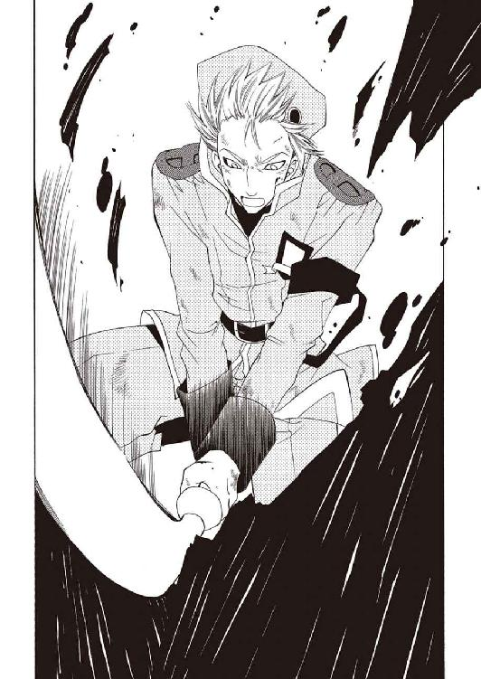
「我々が竜徒と共闘することになろうとは、世も末である」
「別に、最近はちょくちょくあったことじゃないですか。不可抗力です不可抗力」
「むう」
「......それにさっきの報告が本当なら、もう【抗竜党】も存在してないんでしょうし」
ぽつりとこぼれたスクィージの独白に答えることは、できなかった。
『アビスパス』の連絡員から、報告があったのだ──中央都市ワイアットハートは一夜にして灰燼に帰したと。街を焼き払った怪物は現在、この山の前に広がる大荒野に留まっているという。全世界へ戦争を行うなどと言っていた声の主がそうなのだろう。
声の主──名乗った名が本当ならば、シム・リム・アビスパということになるが。
剣を握り直し、彼はしかめ面で息をついた。
「すべきことは変わらん。まずは、この事態を切り抜けねば話にならない」
「......です、ね。それじゃ働きますか」
「うむ。──それにあたって確認したいのだが」
自棄ぎみの苦笑を浮かべるスクィージに頷き返し、ブロックはふと広場の片隅を指す。
「女子供は避難させたのではなかったかね」
「そうですけど、まあそれなりに動ける奴って分かってますから。......クソ嬢ちゃんの方は連れてこうとしたら噛み付かれたんで、子守りも要りますし」
「そこの筋肉ならびに非筋肉！ 聞こえてますわよっ！」
耳聡く聞きつけたらしく、指さした先でキャロラインがきんきんと怒鳴っている。その傍で竜徒の少年、ミロが迷惑そうな顔で彼女を見ていた。
「わたくしまで後方に下がったら、誰が陣頭指揮を務めますの？」
「......あんたの部下は、ほぼ全員真っ先にやられて避難してるんですけど」
「あんな弱卒どもだとは思いませんでしたわ。か弱いわたくしですら立っていますのに」
「隠れてたからな」
ぼそりと呟くミロは、そう言えば怪我だらけである......盾にされていたらしい。
「小童、あの雪竜はどこへ消えた？」
「ノルガンディア様、だ。......分からない。里長となにか話してたのは見てたけど」
仏頂面で訂正してから、ミロが困った風に眉を下げる。
「麓の方へ飛んでいってそれっきりだ。腐竜は五体もいるのに──」
「──五体で済んでいるのが彼女のおかげと、気付いていないのか？」
合戦の騒音を抜け、硬く重たい声がミロの言葉を遮った。
広場の向こうで噴き上がった颶風が腐竜の一体を巻き込み、粉微塵に引きちぎる......そして、広がる焔の中から平然と、褐色の肌の老人が歩み出てきた。
「山の外には腐竜が雲霞の如く群がっているようだ。彼女がひとりでそれを抑えているから、この場はこの程度で済んでいる。泣き言を言うな」
「は、はい────すいません」
「事が済んだら修行のやり直しだ。私が直々に監督する」
「......げ」
「ご愁傷様」
「お前に哀れまれる筋合いはないッ！」
キャロラインへ怒鳴り返すミロに嘆息し、ウーフィーグリッドを見やる。彼はこちらに気付くとすぐに視線を逸らした──里へ戻って良いという許しのつもりだったのだろう。
同じ事に気付いたらしいスクィージが、仕切り直すように口を開いた。
「じゃれるのは後にしてくれ。その雪竜のご加護に与ってる内に、とっとと──」
「──うん？ 待つのだ、スクィージ君」
不意に、違和感に気付く。
焔の中で二体の腐竜が足止めされている。怪我人は絶えないようだが〈抗竜党必死開拓団〉と竜徒がそこそこに連携をとれていた。遠くにウーフィーグリッドの《息吹》で破壊された腐肉が一体分。先ほど自分が斬り伏せた一体がすぐ近くに......
「......っ四体!? もう一体はどこへ行った！」
その瞬間。
広場中央、ノルガンディアが最初の腐竜ごと貫いた岩盤が轟音を上げて爆発した。そして噴き上がる爆炎の下......砕けた地面の中から、腐竜が這い出してくる。
「姑息な──！」
低く叫び、ブロックは剣を握って地面を蹴る。身を隠す知恵を持っていたとは思わなかったが......まだ半身は地面の下だ。抜けきる前に、頭蓋を砕く！
一息に飛びかかろうと大きく踏み込んだ時──腐竜は、自ら胴体に食らいついた。
「っな!?」
傍らで、跳躍のタイミングを外したウーフィーグリッドがたたらを踏む。
牙の列でこそぎ落とすように細い胴を切断し、腐竜は千切れた半身で地面を這う。不気味なほど俊敏な頭部が向かうのは......里の外れの診療所。
こちらを追い、スクィージとミロも慌てて駆け出しているようだったが、
（間に合わない......！）
診療所にはバーン・フラットランドが寝かされたままだ。《息吹》がほとんど暴走寸前の有り様で、迂闊に動かす事もできなかったのである。しかし。
（片鱗を宿したに過ぎないシム・リム・アビスパが、オリジナルの《罪人竜の息吹》を狙うことは、予測して然るべきだった！）
絶望的な後悔の中────ふと、ブロックはそれの存在に気付いた。
山頂へ登って行く細い道から、何かが駆けてくる。
大きくはなく、むしろ小さい。並べば自分の胸までもなさそうな小さな影。だが、半身だけになってなお見上げるほど大きな腐竜に向かい、躊躇なく真っ直ぐに駆けていく。長い黒髪と茜色の襟巻が尾のように揺れ、蒼銀の鱗で織り上げた手袋には鋭い刃爪。
揺るぎない威風を纏うその姿はまるで小さな、竜。
そう──予測して然るべきだった。
そこにバーン・フラットランドがいるのに、彼女がいない方が不自然なのだから。
ニヤリと歯を剥いて、ブロックはあらん限りの大声を上げる。
「──遅いぞ、小娘ぇッ!!」
（遅かった......決めるのが遅すぎた！）
焔に包まれた里へ、アーティアは駆け下りていく。昆虫の頭に似た化け物がこちらへ這いずってきていた。どす黒い腐肉を引きずったその姿は、見覚えがある。腐竜──
蜂のような顎から火の粉が舞い散る。《罪人竜の息吹》......星をも灼く焔が不明瞭な咆吼と共に彼女へ躍りかかった。その業火を睨みつけ──彼女はより強く踏み込んでいく。
（遅すぎたけどッ............でも、私はもう、決めたんだ!!）
恐れるな。しかし、侮るな。
ノルガンディアの吹雪を弾いた感覚を、氷の檻を破ってきた力を思い出せ。《息吹》はただの現象ではない、生命の本質だ。そこに揺らぎがある、隙がある、道がある......
（────っ、ここ！）
肌を焦がす距離まで接近した焔の壁へ、アーティアは貫き手を突き刺した。《息吹》の脈動から綻びを見つけ出すと、そこへありったけの力を集中し、叫ぶ。
【荒ぶり......逆巻けええぇぇっ！】
粘つく熱気を切り裂く、鮮烈な氷の咆吼。
澄んだ絶叫がそうしたかのごとく、彼女の腕を巻き込みかけていた焔が萎縮するように弾き飛ばされた。のみならず、焔はそのまま腐竜へと逆流し、その身体を包み込む。濁った悲鳴と凄絶な臭気をまき散らし......やがて、地面にこびりつく黒い染みに化けた。
安堵に息をつき、脱力する──と。
「姉ちゃん!!」
「！ っ......み、ミロ......？」
駆け寄ってきたミロに飛びつかれて体勢を崩し、アーティアは慌てて彼を支えた。
「よかったッ──よかったぁ......!! だ、大丈夫、だよな......死んでないよなっ!?」
「大丈夫だ、大丈夫だよ。......心配させたみたいだな」
泣いているのか笑っているのか判断をつけかねる顔で縋り付くミロの髪を撫でようと手を持ち上げ......鉤爪をつけたままだと気付き、腕だけで抱きしめてやる。
肩を震わせるミロを宥めながら、アーティアは歩いてくるブロックに視線を向けた。
「どういう状況か分からないが............いまは、敵ではないんだな？」
「いかにも。......小僧はそこの小屋である」
「分かっている──」
豪快無比な笑声を受けて、アーティアは小さく頷く。鼻を啜るミロをそっと離して、傍らの診療所を見やった。そこには里へ入る前から、強い《息吹》の脈動を感じている。
日除けの麻織りを払いのけ、診療所に入る。壁には干した薬草類が打ち付けられ、その下に並んだ籠には毒抜きや熱冷ましが収めてあった。
そして......小屋の隅、板に布を巻いただけの寝台に、彼の姿はある。
バーン・フラットランド。
「......っ」
途端──様々な感情が噴き出し胸を締め付けられ、彼女は息を詰めた。
あちこち傷だらけで、格好もひどく薄汚れていた。商売道具と言い張り大事にしていた顔も随分と生彩を欠いている。呼吸だけは、危険なほど安らかに聞こえるが......
傍らに歩み寄り、そっと身体を抱き起こす。
「出来るのか？」
小屋の外で呟くウーフィーグリッドには答えない。ただ無言で、瞳を伏せる。
彼の内を巡る命の脈流に意識の指で触れる。渦を巻き、荒れ狂う灼熱の奔流の中をかき分けるように探っていくと──その奥に、小さな命の輝きが見えた。暗い朱に溺れそうになりながら、必死で抵抗し続けている生命の火。
触れれば溶けてしまいそうな弱々しい灯火に、一瞬だけ恐怖が首をもたげる。が。
（......もう......決めたんだ！）
恐れない──怯えながらでも、彼のように、強く無様に立ち向かうのだと！
爪で傷付けないよう、慎重にバーンを抱きしめる。
氷の鎖を滑り込ませていくイメージ。冷酷で冷徹な力が《罪人竜の息吹》を抑え、縛り上げる。暴れ狂う火焔を封じると、残ったわずかな火......彼の命へ鎖を繋いでいく。その仄かな輝きを刻み、分解して、焔を押し込める檻へ──
「............、ッ!!」
無意識に侵食を始めた意識の穂先を、寸前で引き戻す。
止めていた呼吸を大きく吐き出し、アーティアはバーンを寝台へ横たえた。里の外まで響いていた《息吹》の脈動は、嘘のように沈黙している。
「『棺』の力......掴んだ、のか」
小さな声で呟くウーフィーグリッドを振り返り、ゆっくりと立ち上がる。
掴んだのではない。恐れることをやめただけだ。
「──暴走は鎮めましたが、山の外、シム・リム・アビスパの影響が強すぎます。ニグログルフュの意志が呼応している......奴を排除しなければ一時凌ぎに過ぎない」
「つまり、すべきことは一つですわね。......お祖父様をぶっちめましょう」
言葉を継いだのは、いつの間にかそこに立っていたキャロラインだった。
煤をかぶったブロンドを結い直している彼女に、ミロがしかめ面を向ける。
「ずいぶん簡単に言うな。お前の家族なんだろ」
「笑かせますわ。わたくしの家族はこの世に唯一、お父様だけです。......それに、先ほどの宣言を聞きましたでしょう。奪われるのが怖いから、すべてを奪う？」
び、と品のない仕草で舌を突き出し、彼女は物騒に声を低めた。
「そんな軟弱根性で、お父様の愛した辺境を蹂躙させやしませんわ。これはもう『アビスパス』の問題ではありません。一人の先駆者たるこのわたくし、キャロライン・リム・アビスパが......シム・リム・アビスパを許してはおけないと言っているのです」
「むっはっは。見上げた心意気である」
翠の双眸をつり上げて言い放つキャロラインに、ブロックが豪放に笑った。無用に逞しい肩を慣らすようにぐるぐる回し、眩しいくらい白い歯を剥く。
「辺境の危機とあらば、どのみち看過出来ん事態だ。我々も尽力しよう」
「......言うぞ言うぞと思ってましたけど、本当にあっさり言いましたね。あんた」
「元気が足りんぞスクィージ君、開拓団は元気が資本。さあ滾れ」
「嫌です。......さて、現実にどうする？ 容易に下せる相手とは思えないがね」
どこかの空を見上げるブロックにぞんざいに答え、スクィージはそれでも反発はしないようだった。厳かに頷き、ウーフィーグリッドが口を開く。
「アーティアが『棺』の力を自覚したなら、不可能ではないはずだ。《息吹》を命の檻へ閉ざし、輪廻へ連鎖する暇を与えず消し去る──かなりの危険を冒すことになるが」
「もともと安全な話にも聞こえませんでしたわよ」
「罪人竜の意志をも呑み込んだあの男に、『棺』の力がどこまで通用するか未知数だ。腐竜の《息吹》を遡行制御できた以上、ある程度までは通じるのだろうが......奴を葬るに及ばなかった場合、我々は最大にして唯一の切り札を失うことになる」
そこで一度、ウーフィーグリッドはこちらを振り向いて、
「本来ならまず、オリジナルの《罪人竜の息吹》を消滅させておくべきだ」
「断ります。......私は、彼を死なせるつもりはない」
予想通りのことを告げてくる彼に、きっぱりと答える。
ウーフィーグリッドは拘泥するでもなく、頭を振って話を戻した。
「いまはそれで構わん......いまは、な。とにかく、『棺』を使うには細心の注意が要る」
「......あいつが、この山を諦めてどこかへ向かう可能性はないんですか？」
「ふんだ、すべてを手に入れると抜かしたお祖父様が簡単に《罪人竜の息吹》を諦めると思いまして？ 脳味噌までジャリんこクオリティなんですから、まったく」
「だッ！ だから可能性って言っただろ！ お前はいちいち────！」
「......だが、籠城するのも悪くないかも知れないな」
不毛な口論を始める年少二人を半眼で見ながら、スクィージが半眼で呟く。
「腐竜だったか──この怪物ばかり送って来るってことは、この山に攻め込めない理由があるってことじゃないのか？ だったら──」
「奴はノルガンディアを警戒しているのだ。彼女が周囲の腐竜を祓いに向かったのは牽制のためでもある......だが竜の力も無限ではない。事態は好転し得まいな」
「むう。その雪竜と小娘で、アビスパ卿の元へは向かえないのか？」
「不可能ではない。だが彼女の守護を失えば、この山に腐竜どもが押し寄せる。そうなれば......我々だけではバーン・フラットランドを確保し切れん」
「あーもう、ダメ。ダメダメですわ。こんな暑苦しい場所じゃ出る案も出ませんわよ」
髪をかき上げ、キャロラインが面倒臭げに大声を上げた。
「まずその辺を鎮火して、落ち着いて立案できる環境を確保すべきですわ。そろそろ疲れましたし、出来れば一眠りくらいしたいところですわね」
「ゆ、悠長なことをッ！ ノルガンディア様が大変だと聞いてなかったのか!?」
「ノルガンディアだかパルモンガーだか知りませんけど、仮にも竜なのでしょう？ 休息の時間くらい稼いで貰いますわよ。......ただでさえいろいろあったんですもの。頭も身体も休めなければ、ロクな策なんか思いつくわけありません」
抗弁するミロの頬をつねってぐいぐい動かしながら、キャロラインが疲労の濃い溜め息をついた。余裕を装っているが......この状況で、疲れていないわけがない。
ちらりと広場の方を見やってから、アーティアは硬い声で呟く。
「──私も賛成です。時間が貴重だからこそ、態勢は整えるべきだ」
「ならば、我々でその辺に暫定作戦本部を造ろう。廃材を組めば壁と屋根くらい、どうにか整えられよう。うむ、まるで開拓団のようである」
「......別になにも言いませんけど、向こうで戦ってるウチの連中助けてからですよ」
彼女の言葉を受け、ブロックとスクィージが広場へ駆け出していく。その背を見送る彼女に、ウーフィーグリッドが鋭い眼差しを向けてきた。
「どういうつもりだ」
「母様が稼いでくださる時間を無駄にしたくはない。......ここで悩んでいても事態が進展しないのは確かです。目を変えるために、休息を取るのは理に適っている」
「め？」
「......。姑息で低俗な考えだ。人間の世界に長く置きすぎたな」
浅く息をつくと、ウーフィーグリッドは首を傾げているミロの横を通り過ぎ、ブロックたちの後に続いて行った。その背を見送り、アーティアはそっと拳を握る。
（そう、時間は無駄にできない────決めるのが、遅すぎたんだから）
視線だけでバーンの眠る診療所を見やり、彼女は強く唇を噛んだ。
◆□□◆
渦巻く焔の中を逃げている。
右も左も、それどころか上下も分からない。獰猛な朱に染まった世界に浮かんで、バーンは当て所なく走り続けていた。息が上がり、視界が狭く、暗くなる。立ち止まって休みたい。だが止まれば、すぐ奴に追いつかれてしまう！
「──どこへ逃げる、なにから逃げる！ この朱は、お前に宿る焔だというのに!!」
背後で誰かが嗤っていた。
振り返ってもいないのに、そこにある光景が鮮明に頭に浮かんでくる。
踊る焔の中心を、奴は悠然と歩いてくるのだ。緩慢な足取りだが距離は瞬く間に縮まっていく。やがて、奴は凶悪な笑みを浮かべてこちらの顔を掴まえた──そこでようやく、自分がとうの昔に足を止め振り返っていたのだと気がつく。
「お前は死んだ！ 遠くで私が、私を呼んでいるのだ！ 私がお前を呑み喰らい、お前は、私となる！ 抵抗はここまでだ......ニグログルフュがお前を喰らう!!」
冗談じゃない──叫んだはずの声は発せられなかった。声は、奴に奪われた。
声だけではない。目の前で嗤う男の顔は自分の物だった。上等の服とそれを纏う身体も彼の物だ。母譲りのブロンドも。
地獄の釜のような朱の瞳の男──罪人竜ニグログルフュの姿は、まるでバーン・フラットランドそのものだ。
「違う、違うな！ 私がお前の姿なのではない。お前の姿が、私なのだ！」
こちらの思考を読み取ったかのように、ニグログルフュは口の端をつり上げる。あるいは、思考までもが奪われつつあるのだろうか......
悪足掻きのつもりで、暗示制御を試みる。彼の意志になぞられるように、焔の中に円が浮かび上がって──ニグログルフュが伸ばした手に、易々と握り潰された。
「小賢しい暗示の出る幕はもはやない......永き時を経ていま一度、私の焔にこの星を沈める瞬間だ！ 邪魔はさせない！ すべてを、私の焔の内に────!!」
けたたましく嗤い、ニグログルフュは力を込める。頭......は、もう奪われているので、たった一つ残った意識が軋んだ。染料の涸れた絵筆のように、意識の連続が明滅して途切れていく。砕けていく自我の欠片が、恐れすら渇いた心に波紋を投げた。
────やばい──こ、れ──ぼ──死──────────、......？
ふと。
朱色に沈んでいくバーンに、呼びかける声が聞こえた気がした。
苦悶の灼熱から冷たく彼をすくい上げてくれるような、凜とした声。
（アーティア............？）
同時に、視界が急激に移り変わった。躍る焔も、ニグログルフュもかき消える。
見えるのは粗末な板を渡した天井と、枯れた草やら得体の知れない骨が掛かった壁。なにか物置のような場所に寝ているらしい。冷えた空気が身体の傷に沁みる......身体。
（............あれ？）
身体がある。
慌てて起き上がろうとするが、四肢が動かない。瞼も開かない。眠る自分の姿を自分が見つめている。意識だけが身体から抜けだしたような感覚。わけが分からず、意外としまりのない寝顔をしている自分を見つめていると......誰かが、小屋に入ってきた。
長い黒髪を揺らし戸口に立っていたのは、アーティア・アリア・ノルガンディア。
（──────!?）
思わず、身体もないのにそちらへ駆け寄ろうとしてしまった。
外は夜のようだった。蒼い月明かりを背負って、彼女は銀色の瞳をバーンに──隅に寝かされている身体の方に向けると、その傍らに歩み寄り、薄く口を開いた。
「おい──聞こえるか、馬鹿弟子め」
一瞬、こちらの存在を分かっているのかとも思ったが、視線はずっと床の上の身体に注がれている。彼女はしばし言葉を探すように押し黙ってから、小さく苦笑した。
「............その、久しぶりだな。......もう何年も顔を見ていなかったように思う」
噛みしめるように言葉を並べて、アーティアは頬をひっかいている。
本当に久しぶりだ。たまらなく愛しく、懐かしい、記憶にあるままの微笑み──
（──、いや......？）
浮かんだ彼女の微笑に、硬い芯のような影を感じる。
奇妙な違和感を纏わせたまま、アーティアはゆっくりと続けた。
「お前が来ていると聞いて驚いたぞ。......里長に聞いたが、お前、ちゃんと《息吹》を制御できたそうだな。修行は無駄ではなかったか」
（うん。君のおかげだ）
聞こえないとは分かっていても、そう思わずにはいられない。
制御法の事だけではない──罪人竜に呑み込まれかけた意識をぎりぎりの所で救ってくれたのはきっと、いつでも胸に灯った、彼女への想いだった。
「まったく、ひどい有り様だな。......傷だらけで............ひどい、有り様だ」
（これでも頑張ったんだってば）
情けない気持ちでぼやくが、当然アーティアに聞こえた様子はない。
彼女は地面に膝をつき、バーンの頬にそっと手を添えた。
「よく、頑張った。本当によく頑張った────もう安心しろ。お前は、死なせない」
（............アーティア？）
不意に、言葉の調子が変わる。極限まで研ぎ上げた牙の──自らへし折れる覚悟が無ければ有り得ない鋭さを含んだ声が、薄暗い闇に溶けていく。
「私は、お前を......お前を、殺してしまうかも知れないんだ......っ。『棺』という......お前の命に《息吹》を封じ......創られた............むう。説明できないが」
（大丈夫だよ。その辺のこと、ぜんぶ分かってここまで来たんだ）
「とにかく、安心しろ。お前は絶対に死なせない。今度こそ、手遅れにはさせないさ」
軽くバーンの頭を叩き──彼女は、突如その表情を冷たく引き締めた。
「お前が《息吹》に喰われる前に............差し違えてでも、罪人竜を葬る」
（........................、え？）
浮かんだ言葉は、その一語だけだった。
呆気にとられている間にも、彼女は言葉を紡ぎ続ける。
「シム・リム・アビスパの《息吹》がお前の《息吹》を呼応させ、暴走させやすくしている。今はその影響を断っているが......一時的なことだ。抑えておけなくなるほど影響が強くなる前に《息吹》ごと討ち取ってやる。危険な賭け、だそうだがな」
（ちょ......待って、なに言ってるんだ？ わけ分かんないって────！）
「だから......後は、自力でなんとかしろ。ここまで制御してこれたのだ。母様に修行をつけて貰えば、もう一人でも《息吹》を抑えられるだろう？」
ようやく違和感の正体が分かった。微笑に押し隠した、静かな決意。
（アーティア、君は）
死ぬ、つもりなのか──!?
「負けるなよ。罪人竜ごときに、負けるな。お前は私の............自慢の馬鹿弟子なんだ」
静かに呟くと、彼女は襟巻を解いてバーンの首へ巻き付けた。自分の誇りと呼び大切にしていた、茜色の襟巻。
「感謝を。お前がいたから......私は折れずに済んだ。私は、お前に救われたんだ」
（待て！ 待ってくれよ、アーティアっ！）
がむしゃらに、叫ぼうとする。腕を振り回そうとする。しかし横たわった自分の身体は微動だにしない。声もない呼びかけに気付くわけもなく、アーティアはゆっくり立ち上がった。髪を揺らして踵を返すと、肩越しに、小さな呟きをこぼす。
【────────】
竜の言語で囁かれたその言葉の意味は分からなかったが。
「アーティア────だめだあああぁぁッ!!」
絶叫と共に、視界はまたも一変していた──先ほどと同じ禍々しい朱色の世界。
だが、明確な変化が二つ。
「......なにが起こった......なにが起こった!? お前は、一体なにをした!!」
罪人竜ニグログルフュがこちらから手を離し、後ずさっていたこと。
そして──
「悪いけど............たった今から、あんたの都合はぜんぶ却下だ」
確固たる声でそう告げて、バーンは、自分の身体を見下ろし安堵の息をつく。
「身体があるってのは、落ち着くもんだね」
「有り得ない──確かに、喰らったはずだ！ 一度失った自我を再び縒り紡ぐなど！」
「はい、そこまで。......言っただろ、あんたの都合は却下するって」
狼狽というよりは、想定外の事態に癇癪を起こしている風に声を荒げるニグログルフュを制し、バーンはその朱の瞳を真っ直ぐ睨みつけた。
あの光景はなんだったのか。
聞いた言葉は夢か幻だったのか。
いずれにせよ、しなければならないことは明白だ。それは最初から明白だったのだ。
「あんたとじゃれてる場合じゃないんだ。僕は、アーティアに会いに来たんだよ。罪人竜だかなんだか知らないけど────そればっかりは、絶対、邪魔させないッ!!」
底の知れた勇気。なけなしの根性。持てる力を手当たり次第に注ぎ込んで。
バーンの雄叫びが火焔の只中に轟いた。
hidden track
「──お前が《息吹》に喰われる前に............差し違えてでも、罪人竜を葬る」
深夜の診療所は肌寒い。
皆が寝静まるのを待ち、廃材で作った即席の寝所を抜けだして......アーティアは、死んだように眠るバーンを見下ろしていた。見るのは初めてではないが、相変わらずどこか幼い印象の残る寝顔である。中身には相応しい造作だと言えたが。
「シム・リム・アビスパの《息吹》がお前の《息吹》を呼応させ、暴走させやすくしている。今はその影響を断っているが......また影響が強くなる前に、『棺』の力で《息吹》ごと討ち取ってやる。危険な賭け、だそうだがな」
だが、そうすると決めたのだ。
ウーフィーグリッドは《罪人竜の息吹》を滅ぼす事しか考えていない。こうしている間にもノルガンディアが命を削っているのだと思うと、落ち着いてはいられない。
そして──バーンと共に渡ってきた、低劣で俗悪で、強くて、誇り高い開拓辺境が灼かれていくのは......自分でも驚くほどに辛く、耐え難いことだった。
「だから......後は、自力でなんとかしろ。ここまで制御してこれたのだ。母様に修行をつけて貰えば、もう一人でも《息吹》を抑えられるだろう？」
まったく彼には驚かされる。自分が教えた制御法はさわりどころか、心得程度のものでしかない。そんなものを頼りに《罪人竜の息吹》を抑え、中央都市からこの白峰ノルグまで渡ってくるなど......心底馬鹿で、見上げた男だ。
（最後に話くらいできたらよかったけど）
それは多くを望みすぎだ。顔を見られただけで上等とすべきだろう。
頭を振って襟巻を解き、彼の首に巻いてやる。
「負けるなよ。罪人竜ごときに、負けるな。お前は私の............自慢の馬鹿弟子なんだ」
茜色に意味はない。ノルガンディアはそう言っていた。
だが、彼を包むこの茜には確かな想いを込める。誇りをかけて託す想い。
その想いがあるから自分は、迷わずに征けるのだ。
「感謝を。お前がいたから......私は折れずに済んだ。私は、お前に救われたんだ」
立ち上がり、踵を返す。
（母様──やっぱり、勘違いだった。私は恋をしていたわけではないみたいだ）
あんなに辛い、痛い程の苦しさは微塵もない。
胸に灯った熱はどうしようもなく高まり、切ないほどに心を焦がすが......それは彼女を幸せな気分にし、力を与えてくれる不思議な篝火だ。
そこで、不意に気がついて肩越しに振り返る。
（......そう言えば......私からは、言ったことなかったっけ）
少し、ずるいようにも思うが。
むずがゆいような気恥ずかしさを覚えながら、彼女はその言葉を唇に乗せた。
【ありがとう。──────あなたを、愛している】
第五章 茜、灯して I"L" You
アギ・チーリィがノルグの里へ下りてきた時──焼け焦げた広場に立っていたのは、意外と言えば意外な人物だった。
「......なんでお前さんがいるんじゃい」
「あら。いましたの乾物ジジイ」
半眼で呟く彼を振り返り、キャロライン・リム・アビスパは間髪入れずにそう言い捨てる。そして更に開こうとした口をふと閉ざし、改めてわめき立てた。
「あんたなんかに構ってる場合じゃありませんのよ！ まったく、どうなっているんですの!? お祖父様がドラゴンで、ドラゴンからドラゴンが湧いてきて、挙げ句ドラゴン小娘は夜逃げして......もうひとドラゴンでジャンパービンゴですわ!?」
「いや、分からんが」
錯乱していたらしい。
ばたばたと両手を振り回すキャロラインに溜め息をつき、白い髭を撫でる。
「落ち着け。見たところお前さんだけのようじゃが......他に誰かおらんのかいな？」
「──皆、出払っている」
横合いから声が挟まれ、彼はそちらを振り向いた。
無惨に破壊された広場の隅。間に合わせに作られたような小屋からウーフィーグリッドが歩いてくる。厳めしい顔をとびきり不機嫌に歪めた彼は、じろりとアギを睨みつけた。
「もう歩けるのか」
「次々に担ぎ込まれる怪我人で懲罰窟も手狭でのう。──なにがあった？」
「............シム・リム・アビスパが竜へ還った。焔を纏い、星を灼く......罪人竜へ」
短く沈黙した後、ウーフィーグリッドは重い口調で呟く。
「あの竜は触れたものを呑み込み、腐竜へ変える。《息吹》こそ片鱗というが......脅威はニグログルフュと変わらん。このままでは奴の焔が星を葬る」
「......厄介だの。モノが《罪人竜の息吹》となると迂闊に手は出せんぞい」
「だからっ、アーティア・アリア・ノルガンディアが必要だったんですわよっ！」
渋い顔をするアギへ、ようやくどこかのピントがあったのかキャロラインが意味の通った言葉を返してくる。そして苛々と地団駄を踏みながら、
「《罪人竜の息吹》をどうにかしようと策を捻り出しいていた矢先に姿をくらましやがりましたのよ！ あのドラゴン小娘はあああッ!!」
「里を一回りしてきたが......多くの竜工芸が持ち出されている」
こちらは多少冷静に、それでも苦り切った顔でウーフィーグリッドが呟いた。
「縛封牢から幾つかの呪物もなくなっていた。恐らくは、」
「死ぬ覚悟、か......手っ取り早くはあるが、そういうのは年齢順と決まっとるに」
「なにをまったりしてますの」
嘆息をこぼす二人の間に割り込み、キャロラインが剣呑な目で唸る。
「〈抗竜党必死開拓団〉もチビジャリたちも小娘を追っかけてますけれど、腐竜とやらの数が多すぎてにっちもさっちもいきませんのよ。文字通り山の賑わいで構いませんから、とっとと加勢してきなさい枯木二本」
「......そのうちぎゃふんと言わせたるからな、クソガキめ」
じっとりと睨み返しておくが、言われるまでもないことではあった。視線でウーフィーグリッドを促し駆け出そうとした、その時────熱風が頭上を翻る。上空から腐った翅を羽ばたかせ、胡蜂のようなどす黒い巨影が降下してきた。
「腐竜──ッ！」
舌打ちし、ウーフィーグリッドが低く身構える。それに合わせてアギもゆっくりと型を取った。身体はまるで本調子ではないが、ここは無茶の通しどころだ──が。
「......っちょっと!? まだ来てますわよ！」
いつの間にか背後に隠れていたキャロラインが、悲鳴を上げてこちらの髪を引っ張る。不自然な格好に首を曲げられて振り返れば......後方の空に、更に二つの影。
「雪竜の守護とやらはどうなっていますの!?」
「彼女は何百、何千という腐竜の群れから、ほぼ一日この山を護り続けているのだ。消耗しないわけがない......」
ウーフィーグリッドの呟きを掻き消すように、新たに飛来した二体の羽音が空気を震わせる。三人を囲むように浮遊する腐竜を見渡し、アギは乾いた唇を舐めた。
「......ウーフィーグリッド、嬢ちゃん担いで逃げられんか？ 儂が囮になるほどに」
「馬鹿な、怪我も治りきらん奴に腐竜が止められるか。......俺が残る。お前が行け」
「死ぬのは歳の順と言うに。儂のがなんぼか上じゃからの。いいから──」
「──竜徒はおバカ揃いですの？ お互い心配なら、二人で残ればいいでしょう」
背中越しに言い合っていると、キャロラインが呆れた声で割り込んでくる。
思わず振り向く二人をそれぞれ睨み、彼女はふん、とドレスの胸を反らした。
「わたくしなら気遣い無用です。竜徒の世話にならずとも、勝手に生き延びますから」
「......正気か？」
「逃げても残っても根本が解決しなけりゃ同じですわよ。......初めて荒野の砂を踏んだときから、犬死にする腹は括ってますの。人間ナメるんじゃありませんわ......！」
乱暴に鼻を鳴らし、彼女は目の前の腐竜を睨み据える。身体は震え、瞳に涙まで滲んでいたが......眼差しだけは、自分たちよりよほど強く諦めの悪い、力に溢れたものだった。
一瞬、顔を見合わせて────再び、二人は背中合わせに構え直す。
【決まったな。せめて、この娘程度は生かしてみせるとしようか】
【ふん】
竜の言葉を交わし、呼吸の機を揃える。
攻撃はウーフィーグリッドに任せ、自分は攪乱とキャロラインの防御に徹する。策と呼べる策ではないが、現状では最も生存率が高い対応のはずだった──と。
先ほど降りてきた山道の方で、爆発が起こる。
「..................っ!?」
轟音と爆風をまき散らし、波打つような灼熱の脈動が空間を奔り抜けた。
里の外れに、この星へ突き立った杭のような火焔の柱が噴き上がる。生ある者の存在を否定する深い、暗いその朱色は、見間違えるはずもない。
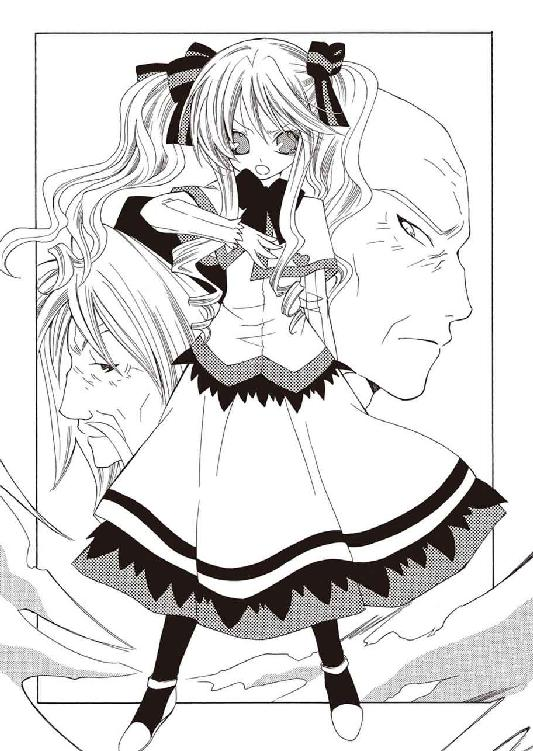
──この場に、腐竜が集ってきた理由が分かった気がした。
察したのだ。狂気の焔、《罪人竜の息吹》の主、ニグログルフュの再臨を。
「......本当に......犬死にかも知れんの、これは」
絶望的な笑みすら含んだアギの言葉に、言い返す声は上がらなかった。
◆□□◆
砂塵に、緋色の血煙が混じる。
悲鳴は口腔で噛み潰し──アーティアは、引き裂かれた肩を押さえて振り返った。
弧を描いて高空へ昇っていく腐竜を睨みつけ、ベルトから引きちぎった木剣を振りかぶり、投擲する。氷硝樹の投剣は獣の爪の軌跡を描き、腐竜の複眼の片方に突き立った。
不快な咆吼を上げて失速した腐竜は、地面に落ちて砕け散る。剣が突き立った眼を中心に真っ白な霜が降りていた。
「......、っ！ ぐ............」
裂かれた肩に激痛が走る。彼女は腰に巻いたマントの裾を探り、そこに縫いつけた袋から粉末状の草を摘みだして、傷へ押し込んだ。
「ッが!!──────、はっ............ぁ!!」
瞬間──傷口が蒸気じみた白煙を上げ、湿った音を立て急速に塞がっていく。
蛭竜の血に露笹を浸した、縛封牢から持ち出した秘薬だ。命の脈流を活性化させ傷を癒すが、代わりに体力を削ぎ落とす。死の危険をも招く禁忌の呪物。
震える唇を噛み、アーティアは視線を上げる。
地獄というものが存在するなら、それは今、目の前にあるに違いなかった。
辺り一面、腐肉を引きずる腐竜で埋め尽くされている。遠くに見える人間の軍隊らしき連中はそれなりに抵抗しているようだった。火薬の爆発があちこちで轟き、時には腐竜を粉砕し、焼き尽くしている。中には腐り落ちて自壊する個体もいたが──
（きりがない............!!）
強く歯噛みし、彼女は遥か前方を睨んだ。黒く、朱く霞む荒野の地平にうっすらと見える巨大な影......罪人竜、シム・リム・アビスパ。
奴がいるかぎり腐竜が絶えることはない。それは人間たちも察しているらしく、辺りの軍勢には絶望的な雰囲気が漂い始めていた。
（──それ、でも............！）
火薬と屍肉の悪臭にこみ上げる吐き気を堪え、腰の後ろに手を回す。
ベルトに吊った革袋から取り出すのは、蒼銀の鱗で編んだ鉤爪。
持ち出した竜工芸は先の投剣で打ち止めだ。《息吹》を持たない自分に残された、この爪が最後の武器である。ひんやりとしたその手袋へ腕を滑り込ませた、その直後。
【──────!!】
前方から、星守りの耳にすら意味のとれない咆吼を上げる腐竜が飛来する。砂を巻き上げるほどの低空を飛ぶ醜悪な竜を睨み、アーティアは再び駆け出した。
顎からおぞましい牙が覗いた瞬間、前へ身を投げ出し腐竜の腹の下をくぐり抜ける。同時に振り抜いた両手の爪で、細くくびれた胴体を斬り裂いた。濁った悲鳴に振り返りもせず立ち上がる頃には、行く手にもう別の腐竜が見えている。
「くッ────！」
咆吼と共に吐き出された腐竜の《息吹》へ両腕を突き刺す。そのまま逆流させようするが......制御が追いつかず、焔の塊は無数の火の粉へ解けていった。肌を舐めて行く灼熱に足が止まりかけるが、それでも強引に地面を蹴る。
白熱していく思考の隅に、ふと、静かな言葉が浮かび上がってきた。
──自分がここまで必死になっているのは、『棺』としての使命感からだろうか？
（違う）
はっきり否定し、眼前に振り下ろされた腐竜の脚を紙一重で避ける。
──《罪人竜の息吹》を葬らなくてはならないという思いはある。だがそれは『棺』だからではない。何の力もない、ただ一人の星守りであっても、きっと自分は走り続ける。
──バーン・フラットランドのため？
（それも......違う、かな）
今度は少し迷ったものの、やはりはっきり答えを下した。
大きく跳躍し、腐竜の背へ爪を叩きつける。翅がこそげ落ち、地面へ沈んだ巨体を踏み砕くように着地した所へ、視界両翼に迫る新手が見えた。
──バーンは強い。《罪人竜の息吹》の事もそうだが、あの軟弱者は奥底にしっかり、強さの種を抱えている。芽吹くには時間がかかるかも知れないが、今さら自分が水を与えてやらなければならないほど弱くはない。
同時に吐き出された二条の火焔を、身を投げ出して回避する。踏みつけていた死骸が灼けて漂う悪臭に顔をしかめて身体を起こせば......行く手を塞ぐ、二体の腐竜。背後からも濁った咆吼がこちらへ集まりつつあった。
──では、何故走る？
（............それこそ）
決まり切っている。
獣のように荒々しい呼吸の合間に、彼女は襟巻の無い首元に触れた。
痛いくらい跳ねる心臓も、送り出される血も、軋む手脚も。彼女の全ては創り出された物である。この星に生きる命から切り離された、存在し得ない誰でもない誰か。
だから。
だからこそ。
（嘘にはできない。......この熱だけは私が見つけた、私の灯だから）
胸の奥に確かに息づく、仄かな灯を握りしめ。
（使命のことも、バーンのことも............全部が、この灯へ繋がってる！）
黒く腐った荒野の中へ、高らかな咆吼が呑み込まれた。
◆□□◆
夢を見ているのでないことは全身の激痛が証明している。
それでもこの眺めは、ひどく悪夢じみていると思わざるを得なかった。
「......手こずらせたッ............手こずらせた！ お前は、私を手こずらせた!!」
「ッ───ぅ、え......」
バーンの首を掴んで持ち上げ、ニグログルフュは震えた声で喚き散らした。彼を捕らえた手は黒く歪み、捻れた古木のように変形していた。爪を立てても傷跡すらつかない。
「思わなかった......これほど消耗するとは、思わなかった......！」
宙吊りにした彼から視線を外し、ニグログルフュは息荒く背後へ視線を向ける。
暗い朱色が渦を巻く世界──そこに踊る焔は明らかに勢いを失っていた。猛火は吹き散らされたようにまばらに、弱々しく揺れるだけである。
「っハ............は......よう、や──コツ、分かっ......ど、ね......」
『ようやくコツが分かってきたんだけどね』──声は言葉にならなかった。
誰もがよってたかって《息吹》の制御だの、自我を喰らうだのと言っていたせいで難しく考えていたが......要は意地の張り合いだ。必要なのは自己を押し通す傲岸さと、存在の否定を受け付けない図々しさ。
自画自賛としても、健闘したのは間違いないだろうが──
（ちょっと、気付くの遅かったか、な............）
抵抗の手段が分かったとしても。
《息吹》の制御を学んでいたとしても。
相手は星をも灼いた竜、ニグログルフュ──肉体を失ってまでこの世にしがみつき続けて来た自己への執念は、自分が敵う相手ではない。
（どだい......無理な話なんだよな。こんな、イカれた化け物相手に──）
喧嘩弱くて。
臆病で。
誇りもなく。
小狡いだけの。
ただのチンピラが。
独りで、敵うわけがない。
「そうだ、敵うわけがない......！ 喰われるだけのお前は、私に敵うわけがない!!」
思考まで把握されつつあるのか、ニグログルフュは凄絶な笑みを浮かべた。
「ここまでだ！ 私は、私の命を得る！ 私の焔を灯すため、私は始祖竜の上へ蘇る！ だが！ その前に!! お前は............消えろッ!!」
哄笑に歪んだ顔が、花弁が広がるように裂けていく。変形した右腕で掴んだ彼を丸呑みにしようと迫る口腔は馬鹿馬鹿しいくらい可愛らしく見えた。変形した......
（......右、腕............、........................ッ!?）
明確な意図は無かったが。
それでも渾身の力で振り上げた右手は、頭を噛み砕こうとする牙の狭間へ滑り込んでくれた。取るに足らない抵抗と見たか、ニグログルフュは腕を食い千切ろうと力を込め──
「......っ!? ォ、ぁが、ああぁぁあああぁああぁあ──────!?」
──突如苦悶の叫び声を上げ、身を捩ってその腕を吐き出した。
腕の変形が解け、バーンは焔の中へ放り出される。存在しない地面に叩きつけられた彼を、ニグログルフュが朱の瞳で睨みつけた。憤怒と驚愕と......微かな、恐れを滲ませて。
「お前......なにをした!? お前、私になにをしたッ!?」
「が──、っ......げほ......なに、言ってんだい......僕は、なにもしてないよ」
痺れて上手く呼吸できない喉を押さえて呻きながら、バーンは牙に裂かれてずたずたになった右手を持ち上げて見せた。
その小指には草と糸を編んだだけの、小さな指輪。
「御守り────抜群に効いたね。アーティア、やっぱり、君って最高だ............」
「っ......竜工芸、竜工芸か！ 竜の髭ッ......厄除けの呪い符ッ！」
甲高い声で喚くニグログルフュの周囲から、焔が消えていく。朱色の渦からは色味が薄れ、ニグログルフュの姿も水に映したように不鮮明になりつつあった。
指輪ごと拳を握りしめ、ゆっくりと立ち上がる。
「セコいと思うし、正直、情けないけどさ──これが僕だ。最後の一歩を自力じゃ踏ん張れなくて............背中引っぱたかれなきゃ進めない、どうしようもない奴だ。だからなんとかカッコがつくまでは──カッコ悪くたって、足掻いていくんだ！」
「黙れ......黙れ、お前など！ 私に喰われるお前などが、私を............!!」
「黙るのはお前だ！ 僕はお前じゃない、お前に僕は譲らない!!」
声を震わせるニグログルフュの胸ぐらを掴み、同じ形相をつき合わせる。
意地の張り合い──今は互角だ。絶体絶命から、互角にまで状況をひっくり返した。
だが足りない。互角程度ではまったく足りない。
右手をニグログルフュの顔に叩きつけ、バーンは悲鳴じみた声を張り上げた。
「僕はッ、バーン・フラットランドだ！ お前なんかにはもったいない、ダサくて弱っちい、ろくでなしの小悪党だ！ フェアな勝負なんかしてやらないぞ──こちとら、二人がかりだ！ 絶対負けない！ 負けるわけ、ないッ!!」
「お、オッォオ──おま、えぇ............お前ッ！ ワ......た、私っ、ハ────!?」
「うるさい、馬鹿！ お前なんか知るか、馬鹿！ 罪人竜も葬星の焔も、そんなの、全然お呼びじゃないんだよ！ ここはッ............開拓辺境なんだ────────!!」
炎が、弾ける。
◆□□◆
およそ、理解の及ばぬ事ばかりが起こっていた。
『棺』の少女は心を失うことなく力に目覚め。ノルグの里に人間たちが押し寄せ。挙げ句その人間たちと星守りが共に戦って──ウーフィーグリッドの歴史において、昨日ほど混乱と波乱に満ちた一日はなかった。これからもないだろうとすら思えていた。だが。
「............ふ、フラット──ラン、ド......？」
翡翠の瞳をこぼれ落ちそうなほど見開き、キャロラインが譫言のように呟く。
広場の外れ──焼け落ちる診療所を背に。
バーン・フラットランドが立っていた。
「......腐竜を討った、のか............？」
夢でも見ているような、置き所の定まらない声でアギが呟いている。
正三角に彼らを包囲していた腐竜の一体は今、広場の外れまで吹き飛ばされ炎に包まれていた。腐臭すら巻き上げる火勢は瞬く間に腐竜を灰にしていく。
残った腐竜はその複眼をバーンへ──同胞を灼き尽くした男へ向けていた。ともすれば非難がましげにも聞こえる羽音を高め、燃え盛る焔を吐き出す。
迫り来る火焔にバーンは身じろぎ、だが、その場に踏みとどまる。
「そッ──そんなの、ぜんぜん怖くないぜ」
引きつった口から火の粉が散り。
「誰だろうと......この僕に敵う奴なんか、いないんだよ────!!」
絶叫と共に、紅蓮の炎──《罪人竜の息吹》が噴き上がる。
炎は二条の火焔を呑み込み、捻りあげ、握り潰した。そして、そのまま軌跡を遡るように腐竜の顎に突き刺さり、爆裂する。
逆巻く火柱から視線を引き剥がし、ウーフィーグリッドは戦慄に息をこぼした。
「............貴様は、バーン・フラットランド......なのか？」
「うん」
そのやり取りはいかにも間抜けだったかも知れないが。
口元の黒煙をぱたぱた払い歩いてくる彼は、衰弱しているようにも、まして自我を喰らわれたようにも見えない。《罪人竜の息吹》の脈動は未だ感じるが、一瞬前まで感じていた危うさは微塵もなかった。
恐る恐る躙り寄ったキャロラインが、袖から取り出した扇で彼をつつく。
「嘘臭いですわね──罪人竜の演技ではありませんの？」
「え......な、なんで？ 違うよ。ほら、雰囲気とかこう、」
「不自然ですもの。フラットランドがああも役に立つなんて、異常事態ですわ」
「......うん、あのね。......ちょっと反論しにくいのは認めるけど」
皮肉でもなく純粋に疑問の面持ちで首を傾げる彼女に、バーンはそれなりに傷ついた様子で肩を落とした。それから、ちらりとこちらへ視線を戻す。
「──なんか、勝てちゃったみたいだよ。《罪人竜の息吹》に、さ」
「............馬鹿な............そんな、馬鹿なことが............っ」
「カッコよくは決まんなかったけどね。......尻を蹴飛ばされて、ようやくだ」
そう言って掲げる右手の小指に、黒い指輪。竜工芸の護符だろう、微かな命の力を感じるその指輪は灰となって崩れ落ち、風に吹き散らされた。わずかに黒い跡の残った指を寂しげに見つめてから......彼はこちらに目を向ける。
朱と青がせめぎ合う、異様な色彩の瞳を。
「──それにこの通り、なにもかも上手くいったってわけじゃない」
「......虹彩侵食、ですの？ そんな奇妙な、」
「ふむ──制御は完璧ではない、と......そういうことかいの？」
呟くキャロラインを遮り、アギが白髪を掻きながら訊ねた。
覗き込むように見上げる彼を振り向き、バーンは深刻な面持ちで頷く。
「いまは僕が優位に立ってるけど......《罪人竜の息吹》はもう、はっきりニグログルフュの意志を復活させてる。このままじゃ............えっと」
「一つの命を二つの自我が奪い合っとる......のか？ あいや、そりゃ優位もクソもないわい──お前さんとニグログルフュ、存在が対消滅を起こしとるんじゃ」
「あ、そうそれ。多分それ。......もう、僕は長く保たない」
沈黙を補うようなアギにあっさり頷くバーンは、飄々としていて──それだけに、その態度に隠した微かな恐怖が明確に透けていた。
「でも、まだやらなくちゃいけないことがある。手伝ってくれない？」
「............なに？」
「アーティアを追っかけるんだよ」
即座に言い切り、彼はわずかに眉根を寄せる。
「相手が《罪人竜の息吹》なら、そいつは僕の方が専門だ。......迷惑な炎だけど、いい加減長い付き合いだからね。あの子と一緒なら、きっと上手く封じ込めてみせる」
「む......無茶おっしゃい！ 荒野にどれほどの腐竜が溢れてると思ってますの！ どこにいるかも分からない小娘ひとり探し出す前に、百万回は死ねますわよっ!!」
「そッ、」
「────────本当だな？」
凜、と。
抗弁しかけたバーンの頭上から、鋭い声が降り注ぐ。
怪訝そうに空を振り仰いだ彼は......その表情のまま、絶句した。
「......ノルガンディア......」
思わず、ウーフィーグリッドは呆然と呟く。
巨大な翼で空を打ち、雪竜ノルガンディアが悠然とその場へ降り立った。
腐竜の侵攻を抑え続けてきた代償か、その麗姿を見る影もなく傷付けた彼女は、硬直しているバーンをぎろりと見下ろし、冷たく問いかけた。
「貴様ならアーティアを助けられると......そう言うのだな。葬星の焔を宿す者」
「............っ、そうだよ。絶対......絶対だ」
彼は、強い口調で言い返す。眼前に竜を見据えて──一歩たりと退くこともなく。
分不相応も甚だしいその睨み合いに、ウーフィーグリッドは慌てて言葉を挟んだ。
「ノルガンディア。アーティアは──」
「分かっている、いつの間にか私の感覚結界を抜け出していた。腐竜の侵攻に紛れたか、結界自体を竜工芸で誤魔化したのか............フン。貴様のせいだ、焔を宿す者。貴様などに関わったせいで、娘はこんなにも愚かな選択を下してしまった」
紛れもない敵意を込め、ノルガンディアはバーンを見下ろす。彼はわずかに身じろいだものの......その場に踏みとどまり、あくまで目を逸らさない。
そのまま、どれほどの間そうしていただろうか。
何を契機としたかも分からないまま、ノルガンディアがおもむろにこぼした言葉は......その場にいた全員を驚愕させるに足るものだった。
「乗れ」
「........................は？」
「っ!? の、ノルガンディア!?」
叫ぶ声が非難がましくなるのは抑えられなかった。
だが彼女はウーフィーグリッドの言葉を聞いた風もない。半眼で呻くバーンの前へ長い首を降ろし、有無を言わさぬ語調で早口に告げる。
「早くしろ。しっかり掴まっておけ、振り落としたら拾いには行けない」
「え──は？ あ。う、うん......ええと、お邪魔します............？」
間抜けな事を言いながらバーンが背によじ登るのを待って、ノルガンディアは翼を広げた。雪花が舞うように浮かび上がった蒼銀の巨体は、大きく螺旋を描いて上昇していく。
【ウーフィーグリッド──五分間、山を離れる。どこまで退いてもいい、その時間を凌いで。アギ、あなたにも協力を頼みたい】
【無力の身なれど、元よりその所存です】
【ありがとう。......頼りにしてるわ、二人とも】
胸の前で拳を組み頷くアギに笑みをこぼすと、彼女は翼で強く空を打つ。その行く手を見上げたまま、ウーフィーグリッドは忘我から抜け出せずにいた。
「竜が......雪竜ノルガンディアが、人間に背を許す............？ そんなことが──」
「......ちょっと。コレ大丈夫ですの？」
「少しだけ、そっとしておいてやってくれんかの。真面目な奴なんでな」
虚ろに呟く彼を指さし半眼で呻くキャロラインに、アギが苦笑混じりに答えている。
「メンタル弱いジジイですわ。さ、早いところキャリバーたちとでも合流するとしましょう。......ところで、さっきのフラットランドのアレですけれど？」
「ふむ──そういうことなんでないかい？ ちなみに存在の対消滅とは」
「木っ端微塵も興味ありませんわ」
二人の声もどこか遠く。
今日という日はなんなのか──ウーフィーグリッドは、ただそれだけを考えていた。
◆□□◆
空を翔る──鳥の姿を見上げ、幾度その感覚に憬れたことだろう。
羽を持たない人間には望むべくもない、空を征く者の特権。地べたから見上げて夢想するしかない人間たちを見下ろし、彼らはきっと、こう思っていたに違いない。
──呑気なこと言ってんじゃねぇ。
「ごめんなさい......」
「なにか言ったか？」
現実逃避の妄想と会話していると、雪竜ノルガンディアが怪訝そうに首をねじ曲げ、背にへばりついたバーンを振り向いた。
優雅な遊覧飛行を期待していたわけではないが、ノルガンディアの飛行は本気で彼を振り落とそうとしているように攻撃的だった。空へ舞い上がった途端、四方から群がる腐竜の群れを回避し、切り抜け、吹雪で打ち払い、時にはその牙で噛み砕いて......広大な白峰ノルグの上空を、呼吸もままならない速度で翔破してきたのである。
「もし死んだら、絶対に空飛ぶ動物には生まれ変わらないぞって決めたところ」
「案ずるな。《罪人竜の息吹》ごと封滅される貴様に命の輪廻など関係ない」
ぞんざいに言い捨て、ノルガンディアはぷいと前に向き直ってしまった。
──凄まじい速度で過ぎ去っていく眼下の荒野は、まるで混沌だった。
州国軍や騎兵連隊、イーネルアイグレス国外の連中と思しき軍隊まで、見渡す地平の彼方まで腐竜と人間が入り乱れ、人捜しの出来る状況ではない。
容赦なく顔を叩く冷たい風に逆らいながら、バーンはノルガンディアの首を叩く。
「あのさ！ アーティアは多分──」
「多分、正面の山道口から罪人竜への直線上。そのどこかにいる」
言おうとしたことを丸ごと先回りされ鼻白む彼に、蒼銀の雪竜は小さく喉を鳴らした。
「貴様に言われるまでもない。......あの子は、私の娘だ」
「............そう、か。そうだね」
「ふん。────私は貴様が憎い。焔を宿す者」
底冷えのする声で言って、彼女はがくん、と急激に旋回する。慌ててしがみついたバーンのすぐ隣の空間を、近づいてきていた腐竜の牙が切り裂いていった。即座に振り上げられたノルガンディアの尾がその身体を打ち据え、粉々に粉砕する。
「貴様がもっと惰弱な人間なら......《罪人竜の息吹》を宿したのが貴様でなければ......貴様さえ、あの子に出会わなければ............あの子は苦しむことはなかった。貴様があの子を死地へ追いやった。千度裂いて削り砕いても気が収まらん」
尾にこびりついた腐肉を振り払い、彼女は酷薄に声を尖らせた。
「それでも貴様に手を貸すのは、私では救えないからだ。私はあの子から《息吹》を取り上げた。あの子は独りだ......いまは貴様しか、あの子を救えない」
そこまで言った時。
弾かれるように首を上げ、ノルガンディアが大きく翼を打つ。ぐん、と背に押しつけられる感覚と共に急上昇していく視界の彼方で、朱色の光が煌めいた。
光は瞬く間に膨れ上がり──轟然と唸りを上げる光芒となって、一瞬前までノルガンディアがいた空間を灼き貫いていく。かなりの距離を上昇したというのに、巻き上がった熱波に肌が焦がされるようだった。光は勢いを衰えさせることなく空を引き裂き......後方、白峰ノルグの峰の一角に突き刺さり巨大な爆発を巻き起こした。
球状に渦巻くその焔に、胸の奥に押し込んだ何かが呼応し、暴れ出すのを感じる。
「い、今の......《罪人竜の息吹》！ シム・リム・アビスパ!?」
「ッ勘付かれた────落ちたら殺すぞ!!」
返事は待たず首を下げ、ノルガンディアは燕のように鋭く滑空していく。地上の腐竜を薙ぎ倒すように飛ぶ彼女にしがみつくには渾身の力が必要だったが......それでもこれだけは言っておかねばならず、バーンは口を開いた。
「──独りじゃないさ」
風を切る音が邪魔で自分にも聞き取れない声だったが、それでも続ける。
「あの子だって、ずっと辺境を渡って来たんだ。独りでやれることなんてたかが知れてるって分からないはずがない。独りじゃないから、戦うって決めたんだよ」
「意味が分からない」
「本当に？」
返事があったことには驚いたが、バーンは即座に聞き返した。今度は返事がない。
速度と高度が落ちていく。尾を引きずるように風の上を滑りながら、ノルガンディアが呟いた言葉は、まるで拗ねたような......誰かにひどく似た口振りだった。
「......泣かせたら頭を噛み砕く。絶対にあの子を悲しませないと誓え、焔を宿す者」
「悪いけど、それは約束できないね」
身体を起こし、にっと笑った口元から、粉雪のように火の粉が舞い散る。
長くそうあったせいか......ニグログルフュを抑え込んだ後もこの癖だけは直ってくれないらしい。今さら、それを嘆くでもない自分が妙に悲しかったが、さておき。
「僕は............〝嘘つきバーン〟だからさ」
自分自身すら騙せない大嘘──燃え盛る炎の《息吹》と共に。
精一杯の勢いをつけて、バーンは竜の背を蹴った。
声を、聞いた気がした。
（........................？）
顔を上げ、アーティアは辺りを見回す。無論、求めた姿はどこにもない。
幻聴を振り払い、踏み出そうとして......いつの間にか地面に膝をついていたことに気付く。血を流しすぎたせいか、ひどく寒かった。
（く......っ）
歯噛みして、その場に座り込む。
腐竜の包囲を強引に突破した代償は、無数の傷となって身体に刻まれている。何度も秘薬を使ったせいで体力は枯れ果て、『棺』の力で焔を受け流す事も難しい。シム・リム・アビスパの元までたどり着けたとして、今の自分の手に負えるのだろうか......
「..................、ッ!?」
前方に、禍々しいまでの《息吹》の脈動を感じる。
咄嗟に地面へ伏せた彼女の頭上を、一瞬遅れて蜂の羽音のような甲高い轟音が通り過ぎた。同時に巻き上がった強烈な熱風に吹き飛ばされ、アーティアは固い荒野に叩きつけられる。遠のきかけた意識の狭間に、地平へ向かう朱色の光が見えた。
（《罪人竜の息吹》......！）
熱波に焼かれた身体を軋ませて、焔が飛んできた方へ首を向ける。なぜか地上の人間たちではなく、かなり上空を撃ち抜いたようだったが......
【好機、だ────っ！】
《息吹》が貫いた空間は、熱波に吹き飛ばされたのか腐竜の姿が見えない。荒野の只中に道のように開いた空間の先には、染みのような黒い影。
罪人竜シム・リム・アビスパ。
「──ッ動、け、えぇえぇええぇェエエェ..................!!」
凄絶に掠れた声で、彼女は囁くように絶叫した。
鉤爪を荒野に突き立て、頬で砂を掻き這っていく。怪我と疲労を考えれば、まだ動けただけでも奇跡だが......進む速度は余りに、遅い。一度は開いた罪人竜への道を腐竜の群れが再び閉ざしていく光景に、心が冷たく沈んでいく。
（......届かない、の......、っ............？）
伸ばした腕から力が抜けた。
耳障りな羽音と共に飛来した数体の腐竜が彼女を取り巻き、《息吹》の焔を散らし始めた。朱い雪の様な火の粉を見上げて、ふと、彼女は胸に染み込んでいく冷たい感覚の正体を悟っていた。安寧を餌に、抗う力を殺す猛毒。
絶望。
「っ────ふざけ、るなあああぁぁぁぁぁッ!!」
喉が千切れるほどの怒号を上げ、両手を地面に叩きつける。
ばんっ、と破裂音が響くほどの勢いで振り下ろした手が一瞬身体を浮き上がらせた。間髪入れずに旋回させた脚をねじ込み、無理やり膝立ちになると、身体を捻った勢いのまま両腕の鉤爪を振り回し──彼女へ流れ込もうとする命の脈流を断って、叫ぶ。
「砕けろ！」
具体的に意味を考え叫んだわけではなかったが......焔を吐こうとした腐竜の内、三体が口腔で《息吹》を爆裂させた。だが残った腐竜は、それに構わず《息吹》を吐く。
高度な制御は出来ない──咄嗟に判断し、方向を歪めて直撃だけを回避する。周囲を封じるような爆発に打ちのめされながら、彼女は胸に下げたチェーンを握りしめた。
──彼ならこんな絶望的な状況でも、往生際悪く、命冥加に足掻き続ける。
泣きながらでも砂を噛んででも尽くせる手段を全て尽くす。
それが人間の強さであり、そんな、無様で強い彼だから、自分は────
（ほんの一片でいい）
焔が収まり、視界が開ける。
腐竜は既に次の《息吹》を滴らせていた。漂う火の粉を睨み、握った拳に力を込める。
（貸して欲しい......あなたの、強さを！）
挑む魂、足掻く勇気。何より強い不屈の根性を。
焦点の合わない銀の瞳を必死に研ぎ澄ませ、腐竜を睨む。立ち上がる事も出来ない彼女を嘲笑うように濁った咆吼を上げ、腐竜の《息吹》がその火勢を増した。
そして、業火が彼女を包み込んだ────文字通り、彼女を護るように。
「..................、あ？」
思わずぽかんと口を開け、アーティアは間抜けた声を上げていた。
彼女の前にそびえた炎の壁は《息吹》を巻き込み、ひねり上げ、そのまま腐竜を巻き込み爆発した。踊る火塵と爆風は、ふと吹いた涼やかな風が吹き払っていく。反射的に見上げた空に、蒼銀色の影を見た気がした。
心臓が停止して、直後に、激しく跳ね上がる。空転し始める思考を必死に落ち着けながら、アーティアは空に向けていた視線を恐る恐る下げていった。
──有り得ない期待をしている。
全く自分に都合の良い、いや、都合は悪い？ だが喜ばしい、違う、喜んでいる場合でもない。何を置いても避けるべきだった事態。だが嬉しく、やはり望ましくない──
澱のような絶望はとうに、理性ごとどこかへ吹き飛ばされていた。
（どうして────）
風に吹かれて途切れる炎。その向こうから男が一人、姿を現す。
「痛ってぇ......へ、変にカッコつけるんじゃなかったな、もう............っ」
端整な造作に奇妙な愛嬌を残した顔をしかめて、何をやったのか痛そうにブロンドの頭を押さえながら、彼は呆然と見上げるアーティアの傍まで歩いてくる。そして、
「............や。久しぶり」
バーン・フラットランドが、微笑みながら手を差し伸べてきた。
（これは、夢────？）
胸の奥が熱い。
有り得ないことなのだ......彼がこの場に現れるなど。
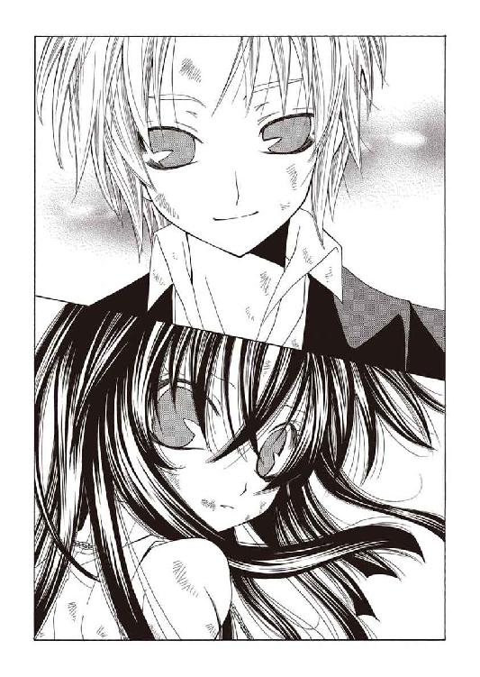
有り得ないことなのに......その手に伸ばした自分の指は、小さく震えていて。
ぽかんと開けていた口を引き締め、彼の手を掴むと............思い切り引き寄せ、崩れた足元を払い身体を半回転させて地面に叩きつけた。
「ぅあだッ!? え──あれ？ ななな、なに？ ちょ、え!? なにッ!?」
「............てッ、手の込んだ真似を、するな。シム・リム・アビスパっ......」
仰向けに転がったバーンを馬乗りに跨ぎ、胸ぐらを掴み上げる。身体の芯から軋む激痛に気を失いかけながら、彼女は手負いの獣そのものの形相で呻いた。
「姿を似せた肉塊か......それとも〝天涯の紅泥〟とやらの複製か？ どちらにせよ浅はかだな......この私が、あの与太者を見間違えることなど、有り得ないっ......！」
「うわすっげぇ嬉しいこと言われてるのにむしろ微妙に悲しいっていうか、待って痛い、刺さってる爪刺さってる！ 目ぇ据わってるって、ちょっとッ!?」
組み伏せられたまま涙声でまくし立てる彼の眼は、朱と青の入り交じった不安定な色だったが、本人であることは疑いない。──見間違えることなど、有り得ないのだ。
「......なぜ来た」
だからこそ、声が震える。
「この愚か者が............なぜ、ここに来た!?」
「あ、なんか昔もこんな話したよね。ほら、初めて会ったとき──ッ」
無言で、アーティアは彼の背を地面に叩きつけた。大した力が出せたわけではないが、それでも口を閉ざしたバーンを、強く睨みつける。
「............《罪人竜の息吹》に、勝ったのだな」
「君のおかげだ。御守り......壊れちゃったけどね」
「なら......ならどうして来た！ 奇跡だ......奇跡なんだぞ!? お前が今、お前として生きていることはッ............本当に、本当に、奇跡なんだぞ────ッ」
固めた拳を彼の胸に落とす。
彼がニグログルフュに打ち勝つと信じていた──誰よりも、恐らくはバーン自身よりも強く、彼女がそう信じていた。そして彼は、本当にそれを成し遂げた。
だがここには、まだ《罪人竜の息吹》が在る。大陸中の軍隊と戦争を行っている、罪人竜シム・リム・アビスパが。近づくほどに葬星の焔が呼応し、内に眠るニグログルフュを呼び覚まそうとしているはずだ。
「奴は、私が止める。命を賭して封滅してみせる。だから頼む──逃げろ。どこか、遠くへ......誰も追ってこられないところまで！」
「............」
「お前の可能性を、私のせいで潰してくれるなッ！ どうして来たんだ──馬鹿！ このッ......この、馬鹿!! どうして......どうして............!!」
「どうして、って」
ぽつりと呟き、こちらを見上げるバーンの顔が滲んでいる。
いつの間にか浮かんでいた彼女の涙を拭うように、彼はそっと頬に手を触れた。
「それ、いまさら聞くのかい。ずっと言ってきた通りだよ」
「............っ、え......？」
しゃくり上げるように息を詰めるアーティアに微笑み、彼は身体を起こした。
鏡のように濡れた銀の瞳を瞬かせる彼女の正面に膝をつき、大きく息を吸い込んで──吸い込み過ぎではないかと思うほどに、吸い込んで、吸い込んで──
「──僕がっ、君にっ！ 恋してるからだッ!!」
竜でも撃ち落とせそうな裂帛の気迫と共に......そんな言葉を吐き出した。
「..............................、あ？」
唖然とし、硬直する。
彼女だけではない──遠く聞こえていた人間たちの喊声も、戦いの轟音も、二人に近づきつつあった腐竜たちもが動きを停めているのではないか？
間違いなく時間が停止した荒野で、バーンはなおも声を張り上げる。
「初めて会ったときから好きだったんだ！ 綺麗で、強くてカッコ良くて、真面目なくせにどっか抜けてて......そんな君が、どうしようもないくらい好きなんだよっ！」
「え、あ............うぁ──？」
放心から覚めて混乱した頭で、アーティアは猛烈に思考を空転させていた。
（こ、恋......好き？ 誰が、あれ。私、を？......彼が、なに言って────？）
彼が、私に、恋をして............？ あの辛い、痛くて苦しい、恋が。彼も？
心臓が跳ねる。
呼吸が止まり息苦しい。
胸の奥、心の最も深い場所で灯が揺れる。驚き、混乱、恐怖、幸福、戸惑い......感情が堰を切ったように溢れ出し、何も考えられなかった。
みっともないほど、顔に血が上っていくのが分かる。叫んでいるからなのか別の理由なのか、真っ直ぐこちらを見つめるバーンの顔も、ひどく赤い。
「君がいない間はなにをやっても面白くなかった──なにやる気にもなれなかった！ おいしいご飯食べてても、君ならどんな顔で食べるんだろうって思ってた。珍しい物見てても、君ならどんな風に驚くかなって思ってた！ 君がいない荒野じゃ、僕は、つまらないんだよ！ だから......認めないぞ。君が死ぬなんて絶対認めないからな！」
「ばッ、な、馬鹿......！ お、だッ、お前............っ!?」
そんなこと────そんなこと、自分だって同じだ。
離れていた間、何度声を思い返したか分からない。何度姿を思い描いたか分からない。隣を振り返った時そこに彼がいない、それだけの事が、たまらなく寂しかった......
胸が熱い。
辛くも、痛くも苦しくもない。
目の前のバーン以外には何も見えなくなるくらい、ただ熱かった。
「全部やるんだよ！ 君は死なないで、僕は生き延びて、罪人竜はやっつけて！ 片っ端から根こそぎ丸ごと、上手くクールに切り抜ける！ それしかないだろ!!......っあー、言い切った！ 大陸中見てるとこで言い切ったぞ！ うわー恥ずかしいッ！」
半ば自棄ぎみの大声で言い放ち、バーンが真っ赤な顔で辺りを見回す。交戦する事も忘れているように、呆気にとられたその場の視線が全てこちらに向いていた。
こちらの肩にそっと手をかけ、彼が瞳を覗き込んでくる。
「だからさ────置いてこうなんて寂しいこと、考えないでくれよ」
「............ッ！ この──このッ、馬鹿............ぁ!!」
もう、顔を合わせていられなかった。
また溢れてきた涙を隠すように、彼の胸に額をぶつける。
（あなたは、ずるい）
いま、そんなことを言われたら──
「..................私は、『棺』だ。......お前を殺すかも知れない存在だ」
「分かってるよ」
穏やかに答え、彼はこちらを落ち着かせるように優しく背中を叩く。
ぐず、と鼻を鳴らし、彼女は上ずった声で囁いた。
「創られた存在だ......竜の記憶も、なにも持たない......この星に、在らざる命だ」
「そうなんだってね」
「だ、から............っ、！」
そこから先は言葉にならない。
強く抱き寄せられていた──もたれるように倒れ込んだ腕の中で、アーティアは静かに嗚咽をかみ殺す。震える肩を、彼はただ黙って抱きしめていてくれた。
彼の襟をぐいと掴み、涙声を振り絞る。
「............離さ、ないぞ。......ッもう......もう、手ッ......離して、やらないぞ......ッ！」
「うん。──ありがとう、アーティア」
「！............与太者め......ッ」
自分を呼ぶ彼の声。
それが嬉しくて、懐かしくて。
涙でぐしゃぐしゃの笑顔を見られないよう、強くバーンにしがみつく。
しばし、二人はそのまま動かず──ややあって、彼女がぼそりと呟いた。
「..................脚が、動かん」
「オーケイ。............ちゃんと掴まっててよね」
やはり小声で呟き返し、バーンはゆっくり息を吸い──がばっと彼女を横抱きにして、跳ねるように立ち上がった。そしてそのまま、腐竜たちの間をすり抜けて全速力で走り出す。振り落とされないよう、アーティアは彼の首に腕を回した。
動き出すタイミングを計ってでもいたのか、時間が急激に流れ出す。腐竜の群れが咆吼を轟かせ行く手を振り返り、人間たちは思い出したように叫び声を上げた。再び火薬の破裂音が響き、あちこちで爆発が腐竜を吹き飛ばす。全体から見ればささやかな数だったが......爆発はまるで道を拓くかのように、自分たちの行く先に集中している気がした。
「これは............？」
「ッあの、人たちッ、のッ──おかげじゃ、ないかなッ!?」
訝しげに首を捻る彼女に、バーンは疾走する呼吸の狭間に答えてくる。
言われて、耳を澄ませてみる──入り乱れる喊声の中にとりわけ野太く、遠慮のない大声が混じっているような気がした。
『──まだ生きている者は聞け！ あの二人は勝利の切り札だ！ 総員精励、奴らをデカブツの元まで導け！ 竜との戦いは我々の専門、信じて得する伐竜速報である──』
（ブロック・キャリバー......？）
大陸中に勇名を轟かせる男の言葉は、冗談じみて朗々と荒野に響き渡っていた。
『国も派閥も確執も忘れよ、この場に人も竜徒もない！ 敵はこの──ふんッ！──この腐った害虫どもである！ 共に立ち向かえ！ あの二人を支援するのだ────!!』
思わず、脱力した笑みがこぼれる。
さしもの彼でもこの荒野全体に聞こえるような声は出せない。だが近くにいた人間がそれを聞きつけ、別の人間たちへ伝えていく。それが幾つも連鎖し、伝播して......二人の行く手の腐竜たちを狙い砲撃を仕掛けていた。
（これだから......！ これだから............開拓辺境の人間は、強い！）
こみ上げてくる衝動に、わけも分からず叫び出したくなった。
轟音と閃光、爆炎が飛び交う中を強引に駆け抜けていくバーンの前方で......眩い朱色が瞬く。そして砂塵と腐竜たちを貫き、鋭い火焔が二人へ襲いかかった。
「うぁ────!?」
「止まるな、走れ！」
裏返った声を上げるバーンへ叫び、アーティアは焔へ両手を突き出す。
（恐れるな......侮るな............ッ！）
呪文のように繰り返し、焔が指先に触れた瞬間──そこに、綻びを見いだす。
「っ──どけえええぇぇぇぇぇぇッ!!」
腹の底から捻り出した怒声と共に、彼女は自分の意思が命の脈流へ侵食し、その流れを片端から断ち切っていくのを感じていた。岩でも灰にしてしまいそうな猛火が逆巻き、歪み、悲鳴を上げるように捩れていき──寸分の迷いもなくその場を駆け抜けたバーンに蹴散らされるように、無数の火の粉に解けて消えた。
そして。
「──くひッ......馬鹿げた話ではないか............!?」
「──そ、そう、でも............ないんじゃない、かなっ..................!?」
火の粉の帳の向こう、荒野に鎮座している影に向かって、バーンが荒い呼吸を整えながら叫び返す。影はべらぼうに巨大だった。まだかなりの距離が空いているというのに、すぐ目の前にいるかのように錯覚してしまう。
ひどく醜悪な姿をしている。
動かなければ地図に記載されそうな巨体は、より多く大地を踏む為だけに肥大したようで不細工に歪んでいる。地上からでは全貌を把握できないが、地平の彼方に見える脚は節操なく無数に枝分かれして、背中には方向も大きさもばらばらの翅が伸びている。あれでは羽ばたいた瞬間、互いが打ち合わされて砕け散るだけだ。
狂った貪欲の戯画......それが罪人竜、シム・リム・アビスパの姿だった。
「身の程を知れ、フラットランド。お前に我儕の命は奪えない──くひッ！ 我儕はじきこの身体を完全に把握する。そうなれば《息吹》など使う必要はない。脚を一本動かすだけで、貴様は為す術なく潰れるだけなのだから。くひッ────」
「......いや。貴様は動けない、罪人竜」
不愉快な笑い声を上げるシム・リム・アビスパに、アーティアは苛立たしい気持ちで吐き捨てた。無惨に焼け焦げ、爪も砕けてしまった竜工芸の手袋を外して服の下に押し込む──これがなければ、先の《息吹》は弾けなかったかも知れない。
「その醜い姿は、貴様自身が狂気に呑み込まれつつある証拠だ。片鱗とはいえ《罪人竜の息吹》を征した胆力は見事だが......生命の理を逸脱したその形ではまともに動けるわけがない。這いずる程度が関の山ではないのか？」
「............だとして、どうなる？ 状況はなにも変わるまい」
重い声を転がして、シム・リム・アビスパは巨大な顎を擦り合わせる。
「貴様たちは我儕を傷付ける術を持たない。ならばその力果てるまで腐竜を差し向けるのみよ。くひッ──哀れだな。貴様たちは、我儕からなにも奪えない............！」
「そう思っていろ。......おい」
彼方で嗤う罪人竜へにべもなく言い捨てると、アーティアはバーンを見上げた。
きょとんとして見下ろす彼に、不敵に笑ってみせる。
「口を貸せ」
「へ？ あれ、君いま《息吹》を取り上げられてる、って聞いたんだけど......」
虚を突かれた顔で訊き返され、アーティアはうむ、と呻いた。確かに、ずっと母から借り受けていた吹雪の《息吹》は取り上げられたままである、が──
「──少し思い当たる節があってな。成否は賭けだが、なに。多分問題なかろ」
「多分て」
「やかましい。......大体、それを知っていたならどうやって奴を討つつもりだった」
「なんか、君が死ぬ気で『棺』を頑張るのかなって。あだッ」
明らかに『棺』の意味を分かっていない口振りに、軽く顎を殴っておく。
まったく──ニグログルフュに打ち勝ち少しは成長したかと思ったが、この男はまるで変わらない。いつも通りの彼女の馬鹿弟子、バーン・フラットランドだ。
「......で、賭けって言ってたけど。勝算はあるのかい？」
情けなく眉を下げる彼に、アーティアは自信たっぷりに頷き返す。
「イチかバチかといったところだ」
「ん、悪くないね。......あ、そうそう。アーティア、これ」
屈託なく笑ってから、彼はふと思い出したように、片手で上着のポケットを探った。そして取り出したものを広げ、肩にしがみついた彼女の首へ器用に巻き付ける。
夕陽を糸に織り込んだような、茜色の襟巻。
「やっぱ、君はそれ着けてないとね」
柔らかな布地に触れて、その上から首の下のチェーンに触れる。
「そうだな」
柔らかく笑い、彼女は砂だらけのバーンの頬を両手で引き寄せて──
「アーティア」
「なんだ」
「大好き」
「......知ってるよ」
──唇を、重ねた。
破壊的な狂熱の奔流が、彼女の内へ流れ込んでくる。解放された《罪人竜の息吹》がせめて彼女の命を喰らおうと暴れ狂っていた。これまではノルガンディアの吹雪で打ちのめし、削ぎ落として服従させていた焔だが、今、その吹雪は無い──
だからアーティアは、自分の灯で立ち向かう。
胸の奥で大切に育んでいた灯が《罪人竜の息吹》よりも激しく燃え上がる。方向性のない炎にそっと寄り添い、叱りつけて導きその熱を高めていく、彼女の灯火。
竜の記憶へ潜ろうと躍起になっていたばかりに、当たり前の事を忘れていた。
《息吹》とは生命の本質。命の最奥で、その存在を支える力に他ならない。
（だったら────この灯が、私の《息吹》だ!!）
鼓動が踊る。
想いが歌う。
自分の持てる何もかもをぶつける気持ちで、その熱を彼にも送り返す。
意識が焼き切れる程にその熱が高まった瞬間、
「「......ッああああああああぁぁぁぁぁ────────!!」」
唱和した二人の咆吼は、荒野を切り裂く火線となった。
抑えつけ、縛り上げる炎ではない。同調した《息吹》が、その間を繋ぐ想いをも巻き込み果てしなく加速していく巨大な炎は、茜色の光芒となって空を灼く。
「くひぃッ............！ 我儕をぉぉぉぉ、舐めるなああぁぁぁああぁああぁ!!」
禍々しい複眼をぎょろりと動かし、シム・リム・アビスパが《罪人竜の息吹》の火焔を吐き出す。その光は、二人の炎に比べればいかにも色褪せたものだったが......
「──────っ、が......!?」
突如、バーンが片膝を落とした。苦悶に歪んだ顔に見る間に汗が浮かび、吹き荒れる熱風の前に蒸発していく。その瞳は、徐々に朱の色を濃くしつつあった。
（《罪人竜の息吹》を──呼応、させて..................っ!?）
ニグログルフュの意志を揺り動かし、バーンの自我を喰らわせようとしている。ここで罪人竜がバーンの意識に取って代われば、二人の《息吹》は同調を失う──
（っ............耐えろ、死ぬな。生きろ！ バーン────────!!）
祈る。
他に何も出来ずただ、祈った。
荒野に灯った茜色の光芒が、咆吼する罪人竜の焔へ迫り、
────閃光────
◆□□◆
膨れ上がった爆炎が収まるころ、太陽は地平の彼方に沈みかけていた。
あちこちに、疲れ果てた様子で座り込む人間の姿が見える。中には腐竜の死体を蹴りつけたり、腐肉の一部を採取しようとしている元気な者もいるようだったが──
「アーティア............？」
そこに駆けつけた者を代表するように、ノルガンディアが静かに問いかける。
ウーフィーグリッドも、アギも、ミロも。
ブロックも、スクィージも、キャロラインも。
全員が、力なく荒野に座り込んだアーティアを見つめていた。
「......シム・リム・アビスパは？」
「............《息吹》を灼き、滅ぼしました」
こちらに背を向けたまま、アーティアは掠れた声で答えてくる。
それは訊かなくても分かっていた事だった。壮絶な爆発の直後《罪人竜の息吹》の脈動が消え、腐竜たちが次々と崩れ始めたのだ。彼の器官の延長に近い存在だったのだろう、シム・リム・アビスパを失って肉体を維持できなくなったのである。
「......身体に異常は？」
「大丈夫、です。ご心配を、おかけしました」
これもまた、見れば分かることではあった。全身に軽くはない傷が刻まれているが、意識がはっきりしているのは察せられる。
はぐらかし続けても意味はない。深く長く、ノルガンディアは息を吸う。
「............、バーン・フラットランドは？」
今度はすぐには返事がなかった。だが、これもやはり、訊くまでもない質問なのだ。
先ほども再認識したばかりなのだ──《罪人竜の息吹》の脈動は消えたのだと。
「彼は......」
アーティアは、振り向かない。膝の上に抱きかかえた、ぴくりともせず横たわる、バーン・フラットランドを見下ろしている。命の脈流が感じられない──その亡骸を。
「彼は死にました」
「..................」
「死んだんです。《罪人竜の息吹》を抑えるため、その命の一片までをも使い果たし............ニグログルフュの意志と共に──────────、ッ」
それ以上は見ていられなかった。乾いた砂に微かな嗚咽が染み込んでいく。
動かぬ彼を抱きしめるアーティアに、誰も、何も言うことが出来ない。
荒野を染める茜色の陽は存外なほど、冷たかった。
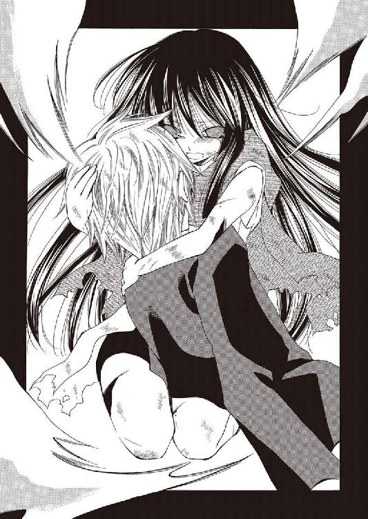
エピローグ
【では母様、そろそろ出発します】
アーティアがノルガンディアの元を訪れたのは、まだ太陽が南天へ登り詰める前の時刻のことだった。彼女は地面に伏していた首を持ち上げ、そこに立つ娘を見下ろす。
【身体はもういいの？】
【はい。......母様、凄い勢いで怪我を治してくれるんだもの。里長が怒るよ】
【いいじゃないの。少しは罪滅ぼしさせてよ】
口を尖らせむくれた調子で言うと、アーティアは苦笑しながら首に触れてきた。
【罪滅ぼしなんて私がすることだよ。......我儘、聞いてくれたんだから】
【......本当にこれから発つの？ 昨日の今日じゃないの】
拗ねた振りを止めて、ノルガンディアは辺りを見回す。
白峰ノルグの中腹近く、星守りの里。先日の争乱でほとんど更地になってしまったそこには適当な布が幾つも敷かれ、怪我人の手当てを行っている。
そこには星守りだけでなく......人間の姿も数多く見られた。
【少しでも沢山、いろんなものを見たいから】
その光景を眺めながら、アーティアが微笑を浮かべる。
【人間と星守りが助け合うなんて、昔の私なら想像もできなかった。誰かが、こういうことも出来るんだって気付いていれば、もっと早くこうなってたのかも知れない】
【............そうね】
【だから私は、もっと辺境を知りたい。......彼と渡った、あの騒々しい開拓辺境を】
顔を伏せる娘を、ノルガンディアは黙って見つめていた。
──里を出て、辺境を見に行きたい──
昨夜......バーン・フラットランドの埋葬を済ませた後、アーティアが口にしたその望みを否定する言葉も、理由も、ノルガンディアには見つけられなかった。あれだけ懐いていたミロですら止めようとはしなかった。
（寂しくない──なんて嘘はつけないけれど）
【たまには顔を見せに来なさい。なんなら母さんもついてくわ】
【母様......】
【冗談よ。......ウーフィーグリッドに言ったら怒られたけど】
【当たり前です】
呻くアーティアにぼそりと呟くと、突然、低い声が聞こえてきた。
怪我人でごった返す広場をすり抜け、しかめ面のウーフィーグリッドが歩いてくる。その隣に、呑気な足取りのアギ・チーリィも続いていた。
【貴女は時折、冗談と本気を区別しない】
【失礼ね、区別はしてるわよ。都合に応じて入れ替えてるだけで】
【母様..................】
心底情けない顔で、アーティアが頭を振っていた。見えなかったことにしておく。
ふと彼女を見やり、ウーフィーグリッドはおもむろに咳払いをする。そして口調を人間の言葉に改めると、厳かに低めた声で呟いた。
「まだ正式に、許しを出していなかったからな。星守り、アーティア・アリア・ノルガンディア。お前に白峰ノルグを下り......また望むなら、ここへ戻る許可を与える」
「──ありがとう、ございます」
「《罪人竜の息吹》が消失した以上、お前は『棺』としての役割を終えた。一人の星守りとして、お前が選ぶ生き方を縛るつもりはない。......自ら、道を征くがいい」
「素直に『頑張れ』と言えんのかい、お前さん」
半眼で口を挟むアギを、彼はじろりと横目で睨みつける。アギは素知らぬ風で白々しい口笛など吹きながら、アーティアへ手を差し伸べた。
「放浪の身同士、どこぞで会うこともあるかも知れんの。元気にやってくんだぞい」
「はい。......老師もお元気で」
「お前は自分の心配をしていろ。自分の《息吹》を扱うのは慣れていないだろう」
差し出された手を握り返すアーティアに、ウーフィーグリッドが嘆息する。
「......《息吹》とは、生命の本質............竜の記憶に依るものではない、か──星守りの道を征き百余年、俺もまだ未熟の域を脱していない」
「ぶっしゃっしゃっしゃっしゃ、あだ。......殴るこたなかろうに」
「黙れ」
呻くアギと彼を睨むウーフィーグリッドを見て、アーティアが笑っていた。その笑顔は多少無理をしているようにも思えたが、ふさぎ込むよりはずっといい──せっかく触れた自分の《息吹》を、むざむざ哀しみに沈めるよりは。
（............バーン・フラットランド）
今なら感謝してやってもいい。
彼が本当にアーティアを想っていたからこそ──彼女もまた、本気でバーンを想っていたのだろうから。
【アーティア】
振り向く娘を見返して、ノルガンディアは静かに訊ねた。
【あなたは、強い？】
【......強く、なります】
母娘の間にしか通じない問答に、ウーフィーグリッドたちが怪訝そうな顔をする。少し意地悪な気分でそちらを無視し、彼女はアーティアと微笑を交わした。
【行きなさい、我が娘。心焦がれ、荒野を照らす強き灯火......恋の《息吹》のアーティア・アリア・ノルガンディア】
【はい。行ってきます────母様】
襟巻を巻き直し、アーティアはぴしりと一礼する。頷き返すノルガンディアに続き、ウーフィーグリッドが口を開きかけ......なぜかそのまま、硬直した。
訝しげに、彼女はその視線を追って首を曲げ──曲げたまま、やはり硬直する。
「──うっわ、それ本当？ 君も危なかったのかい？」
「私は辺境巡回中だったから。でも、弟が中央都市の商社勤めなの。ちゃんと避難隊に合流できたのかしら？ もう心配で......」
「そっか......弟さん思いなんだね。近い内に向こうに行くから、そのとき心当たりの人を当たってみるよ。だから連絡先教え............あ。ヤバっ──」
怪我人の間を歩く、薬品類を抱えた州国軍制服の女性。
そして、さも同情的な表情で彼女に語りかけていたブロンドの優男はこちらの視線に気付き露骨に顔を青ざめさせ、その場を走り去っていく......
ぽかんとする女から視線を外し、ノルガンディアはゆっくりと──決して穏やかではない緩慢さで眼下のアーティアを見る。娘も同じ光景を見ていたのだろう。ぎしぎしと音が聞こえそうな動作でこちらを振り向いてきた。
【............確かに、死んでいたはずよ】
【これ、食べさせたんだ】
底冷えのする声で訊ねる彼女に、アーティアは存外あっさりと答える。ベルトに吊った革袋を探ると、木苺に似た形の、濁った褐色の木の実を取り出して見せた。
【墓場苺。昨日、罪人竜に使おうと思って麓で採って行った。一気に食べると命の脈流が止まってしまうことがあるって、昔教わったから】
【そうね。............で、どういう了見かしら】
【母様──】
じりじりと後ずさりながら、しかしアーティアは落ち着いた様子で瞳を伏せる。
そして大きく深呼吸して、真っ直ぐに腕を伸ばし......
誇らしげに、Ｖサイン。
「──てやんで、です」
舌を突き出した彼女の口から、茜色の炎が噴き上がった。
炎は次の瞬間、無数の火花に弾け飛ぶ。竜を害するには到底足りない小さな火だが......視界が閉ざされた。その一瞬に、アーティアが踵を返して駆け出すのが分かる。
「ッ、待て！ アー────」
火花から顔を庇いながら叫び、ウーフィーグリッドが彼女を追おうと踏み出しかけ......ひょいと身体を滑り込ませたアギに出足を払われた。
転倒しかけた彼を遮るように立ち、アギはぼりぼりと白髪を掻く。
「なんだかのう。仮死状態から復活したばかりで、よくナンパする余裕があるわい」
「──っアギ！ 貴様知っていたな......バーン・フラットランドが生きていると!!」
「お前さんに伝言まで預かっとるぞ。──出し抜いたぜ、だそうじゃ」
両目を三日月にするアギを、ウーフィーグリッドは憤激の形相で睨みつけた。
「すべて虚言か！ 身体が長く保たないと言う話も、存在の対消滅とやらも!!」
「ぶっしゃっしゃ。アドリブだが、それっぽかったかの？ 知らんよそんな現象」
「馬鹿が......《罪人竜の息吹》はまだ奴の内に眠っているということではないかッ！ 一度抑えたとはいえ、なにかの拍子で暴走する可能性は決して低くない！ 『棺』も連れ戻し、共に確保しておく必要があるッ!!」
「お前さんがそう言うと思ったから、死んだふりで出し抜こうと思ったんじゃろ」
どこまでものんびりとした声で、アギは鼻すらほじりながら続ける。
「──心配せんでもあの二人なら、案外、大丈夫なんでないかい。お前さんもうちょい、子供らを信じてやっちゃどうじゃい」
「くそッ！ 誰か、奴らを追え！ 連れ戻すのだ!!」
「お前、人の話を......まあええがの。ちなみに儂、こういうときのためにお前さんを足止めする役も頼まれとる。頼れるジジイじゃろ」
言いながら、彼はひょこひょこと挑発的に構えをとって見せる。睨み合う落ち着きのない老人らに呆れた嘆息をこぼし、ノルガンディアは空を見上げた。
（あの子が............嘘をついた？）
娘の顔を思い返し────微かに、笑う。
（嬉しそうにしちゃって）
ほんの少しは、嫉妬なども織り交ぜつつ。
旅立ち日和の晴れた空へ、彼女は鋭く、澄み渡った咆吼を響かせた。
「......あ、あれ!? あんたら──」
「構うな、走れッ！」
山道を駆け下りてきたバーン・フラットランドを、視線も合わせず一喝する。彼は面食らった様子ながらも速度を上げ──横をすり抜け様、ぺこりと頭を下げていった。
微動だにせず前方を睨み続けていると......隣に立ったスクィージが半眼で呟く。
「半日も土中に埋まってたにしちゃ、元気みたいですね」
「むっはっは。その程度の気骨がなければ助けてやる価値もあるまい」
道の真ん中で仁王立ちになったまま、ブロックは豪快に笑う。二人とも身体中を包帯と絆創膏に縛られていた。スクィージは右脚に松葉杖すらついている。
再び、誰かが前方から駆け下りてくる。今度は複数名──茜色の衣装を纏った竜徒たちだ。連中がこちらに気付いた頃合いを見計らい、彼は胴間声を響かせる。
「止まれえええええええええいッ!!」
その声に気圧されたか、竜徒たちは慌てて立ち止まった。
七名。予想より少ないが......まあ、十分な数だろう。
「ここを通すわけにはいかん！ 即刻引き返すがいい、竜徒ども！」
「あ......あんたは状況がわかってない、人間の戦士」
気迫に負けて、先頭に立っていた男が萎縮しながら口を開いた。
「あいつは《罪人竜の息吹》という恐ろしい代物を持ってる。この山でしっかり制御の仕方を学ばないと、いずれこの星を滅ぼ──」
「笑止千万ッ！」
言い分はおおよそ理解したので、黙らせる。
大きく腕を振り回し、ブロックは周りの木々の葉を震わせる程の声で叫んだ。
「人が征くという！ 男が自ら道拓き、荒野を駆けて征くという！ なればその道、その背中、護り立つことこそ開拓護衛軍の本分ッ！ 不屈の野望に走る男を止めるなど、竜ごときには決して叶わぬ大業と知れッ!!」
「む──むちゃくちゃ言ってるぞ、あんた............っ!?」
「反論の余地はないな」
頭を振る男に、スクィージが肩をすくめる。杖をついていない手でベルトを探ると──そこから鉛筆のような細身のスローイングダガーを抜き、口元を歪めた。
「経験に基づいたアドバイスをしてやるが......むちゃくちゃを言い出したこのバカを止めるのは並大抵じゃない。押し通るなら、骨の何本かは覚悟して来いよ」
「ふうむ。不思議と褒められている気がしないが、スクィージ君」
首を傾げながら、ブロックはベルトの後ろに差しておいた棍棒を抜いた。並みの男の腿ほどもある丸太で威嚇的に空を斬り、彼は得意げに胸を張る。
「この新・ネオ・魔剣グラム〝大殺破ユニバース〟に挑む以上、覚悟は必要であるな。今そこで拾ってきただけという抜群のコストパフォーマンスはまさにエコロジーの覇王」
「......そんなモンまでいちいち魔剣にしないで下さいよ」
「くそッ──やむを得ん！ 相手は二人だ、数で押し切るぞ!!」
先頭の男の宣言と共に、七人の竜徒が狭い山道に展開した。道の両側を崖に囲まれたこの道では包囲されることはないが、同時に掛かってこられては全員を阻止することは出来ないだろう。............二人だけならば。
「むっはっは、良い度胸だ。しかし私も、いずれあの小僧どもと決着をつけねばならん。譲れぬ戦はお互い様よ、竜徒。......総員、集結ッ!!」
『承知ッ！』
号令に答えて、崖の上から次々と灰色の制服を着た男たちが降り注いでくる。
やはりそれぞれに包帯だの湿布だのにまみれており、中には着地に失敗し転倒している者もいたが......総じて覇気に溢れた面持ちで、彼の背後に整列していた。
気勢軒昂。
意気衝天。
真天晴れ大丈夫。
当然だ。議会が消滅しようと星が灼けようと、自分たちのすべきことは変わらない。
「心せよ竜徒。そしてこの名を忘れるな」
うろたえる男たちへ丸太を──いや魔剣を──突きつけて、ブロックは背後の団員たち同様、獣のように獰猛な笑みを浮かべる。
「我らは竜断つ人の剣────〈抗竜党必死開拓団〉である!!」
崖下の道をアーティアが駆けていくのを見届け、ミロは外套の裾を掻き合わせた。それから彼女の後方、すぐ背後にまで迫っている星守りたちを見下ろして、
【......みんな、ごめん！】
弱気ながら確かな意志を込めた咆吼と共に、螺旋を描き舞い散る花弁──花の《息吹》を解き放つ。雪のように降り注ぐ花に、星守りたちは一瞬怪訝そうな顔をして......アーティアを追っていたその速度のまま転倒し、地面に倒れて動かなくなった。
（マドルデリカの眠り花......強力なんだな、これ）
口元から摘んだ薄緑色の花弁を半眼で見てから、ミロは傍らを振り返る。
「準備できたぞ」
「見りゃわかりますわよ。ちょっと肩お貸しなさい────っと！」
尊大極まりない口調で言って、キャロラインはその手に引きずっていた一抱えほどの機械の筒をミロの肩に乗せ、操作桿らしき物体を倒す。
がこ、と愛想のない音が響き、筒の先から黒い塊が発射される。塊は空中で踊るように解けていき......鋼鉄の網となって眼下の星守りたちに覆い被さった。
「──んふッ。非殺傷捕獲用ワイヤーネット、持ってきておいて正解でしたわ」
「非殺傷なのか......？」
機械を投げ捨てる彼女に呻いて、ミロは崖下を覗き込む。中にはかなり無茶な姿勢で潰されている者もいるようだが......まあ、死んではいないだろう。多分。そう願う。
「......でも意外だな。お前がアーティア助けるのに協力してくれるなんて」
「『貸しは残して、借りは残すな』。アビスパ家の家訓ですわ」
金糸のような髪をはね除け、彼女はいつの間にか手に持っていた扇の陰で笑う。
「今回は仮にも一応、身内の不始末でしたもの。これでケツは拭いましたわよ」
「......え、これでチャラなのか!?」
「文句ありまして？」
慌てて聞き返すと、じろりと睨まれた。何故か言い勝てる気がしなかったので、憮然としながらも口は噤む。
「義理は通しましたし、次の仕事にかかりますわよ。そこの荷物をお持ちなさい」
「は？............うわッ!?」
指さされるまま振り返ると、近くの木立に巨大なチェストが鎮座していた。偏執的に凝った装飾で、背部にこれで背負えと言わんばかりのベルトが固定されているが......
「身の回りの物ひと揃いに、必要な装備も大抵は入ってますわね。ティーセットはお父様が下さったお気に入りですの。割ったら向こう脛大車輪ですわよ」
「痛そうだけど、なんだその技......いや、どうやって持ってきたんだ、お前っ!?」
呟きながらベルトに手をかけ、その途方もない重量に驚愕する。
「ったくッ............で!? どこまで持ってけっていうんだ！」
「素直でよろしくてよ。ひとまずは荒野の最果て、サルタナ刑務所までですわね」
「持てるかーッ！」
さすがに怒鳴ってチェストを降ろす。せいぜい里か、麓まで運ばされる程度と思っていたが......そのなんたら刑務所は、おそらくそれより近い場所にはあるまい。
「だいたい、なんで俺が持たなきゃならないんだ!? 仲間を連れてきてたろ！」
「疑問もなく持ってたじゃありませんの。......お祖父様があんなことになったのです、『アビスパス』はもうお終いですわ。おバカな部下もすぐ気付きます。怒りの矛先がここぞとばかりにわたくしへ向かないはずがありません」
「人望ないなお前......ッぁだだだだだ！ 足踏むな、馬鹿！」
「ふんだ。とにかくその辺の諸々も報告がてら、お父様に会いに行くのです。──ああ、愛しいお父様。隙あらば混乱に乗じて牢を破って差し上げたい」
夢見る瞳で薄汚いセリフを吐くキャロラインに、げんなりと肩を落とす。それは彼女が部下を使えない理由であって、自分がつき合ってやる理由にはまったくならないが......
（......まあ、いいか）
嘆息し、視線をアーティアが駆けていった方へ向ける。
元より自分も山を降りるつもりではあった。
彼女を追うのではない、自分なりに辺境で色々なものに触れ、様々なものに出会うために──根っこのある星守りになるために。そしていつか、堂々と誇れる自分になれたら。
（そのときは......アーティア、奪いに行くからな）
瞼を伏せ、この山のどこかを無様に駆けているであろう男へ宣戦する──と。
不意に脳天に鋭い痛みが走り、ミロの黙考はそこで中断された。
「ッ痛ええッ!? なッ......なんだ、蜂かッ!?」
振り仰げば、十数匹の蜜蜂が肌の粟立つような羽音を立てて頭上を旋回している。どうも背負っているチェストの中から湧いてきているようだが......
「なにしてますの。さっさと行きますわよチビジャリ！」
いつの間にか木立の向こうまで歩いているキャロラインが、びしりと扇を突きつけてくる。刺された頭を押さえつつ、ミロは涙目で怒鳴り返した。
「こ、このっ............何度もいうけど、俺よりお前の方がチビなんだからなッ!?」
「キャロりんとお呼びなさい」
つんとそっぽを向き、キャロラインは先に行ってしまった。その背を睨みつけて大きく嘆息すると──なんとかチェストを担ぎ、ミロはよたよたと走り出す。
（別に、行き先を決めてたわけでもないし）
しばらくはあの騒々しい少女につき合ってやるとしよう。
なんにしろ、退屈とだけは無縁でいられるに違いないのだから。
雪が降る。
山道沿いの岩場を疾駆しながら、アーティアは顔を上げた。
天気は快晴。傲慢なほど眩しい太陽が照らす青空には雲の一つも見あたらない。それでも彼女の周りには、きらきらと輝く雪片が踊っている。
見上げた空の遠くに澄んだ咆吼が聞こえた気がした。
思わず振り返りそうになって──その誘惑を振り切り、前へ走り続ける。
その代わり言葉には出さず、叫び返した。
（私は............私は、貴女の娘で本当によかった............!!）
茜色の襟巻を掴み、瞳に浮かんできた熱を隠すように顔を埋める。
風が吹き、雪が舞う。
行く先を祝福するような白い旋風の中、彼女は視線を横へ移した。
彼女が行く岩場の下......山道を駆け下りる男の姿がある。彼もこちらに気付いたらしく笑顔で手を振り、前方を指さした。しばらく先で二つの道が合流している。
......もう、そんなに待つことはできない。
（母様）
だから胸の灯を抱きしめて。
アーティアは思い切り地面を蹴り、飛び込んでいく。
（私は──────恋をしました！）
彼の傍へ。
Ex-track!!!!!!!!!!
「──瞳、戻らなくなってしまったな」
「爺さんが言うには、より深く《罪人竜の息吹》と同化した影響だろうってさ」
療養中の軍や騎兵隊からくすねてきた水袋を呷り、バーンは隣に座ったアーティアに頷き返した。彼女を見つめるその瞳は、朱色に染まっている。
「制御の利く領分も深くなったから、安定はしてるらしいけどね。......青い方が好き？」
「どっちでもいい」
もたれるように手を伸ばし、アーティアが水袋を奪っていく。
荒野の只中に顔を出した小岩の上。二人が座るには少し小さいが、狭くは感じない。
「......む、そうだ。やい、これを持っておけ」
水を一口呷ってから、アーティアはふと呟いて身体を起こした。
ベルトの革袋を探り、取り出した何かを鼻先へ突き出してくる。
「なに？............あ、これ──」
小さな掌に載っていたのは、指輪だった。
草や糸を編んだ、素朴な黒い指輪──竜工芸の護符。
「ほんとは竜の髭を使うって言ってたっけ。......まさか、今度こそ無敵の御守りに!?」
「ん？ 竜の髭は使ってないぞ」
期待に眼を輝かせるバーンに、アーティアはあっさり告げた。
「里には材料のストックも残っていたが、やはり私の髪を使っている」
「......そらまた、なんで？」
「今度は............代用ではないということだ」
「？ ま、まあ分かんないけど」
やはり小さなその指輪を大切に指へ嵌めて、バーンは軽く息をつく。
「とりあえず、どこかで装備を整えよう。......で、中央都市に向かおうと思う」
「ぬ？」
「君に会わせたい人がいるんだ。街は壊滅状態らしいけど......聞いた話じゃ、避難が間に合った人も結構いるって。要領いい人だし、絶対どこかに逃げてるよ」
「よく分からんが」
水袋に栓をして、アーティアは首を傾げている。それから不意に、険悪な半眼でこちらの胸ぐらを掴んできた。
「......里で女に言い寄っていたのは、それを調べるためか」
「......や、やっぱ見てた？ いやあの、うん。確かにね？ 確かに数いる軍の人から敢えて見た目にポイント高い子選んだのはアレだけど別にやましい気持ちはないわけでホラ、長いことあーいう仕事してた条件反射で言うなれば職業病っていうか──、あ？」
それこそ職業病と言える早口でまくし立てた言い訳の羅列は、途中で停止する。
アーティアに腕を抱きしめられていた。
彼の右手を両腕でしっかり抱きかかえたまま、視線は明後日の方向へ逸らしている。
「......病気は、治せ」
「........................うん」
耳まで真っ赤にしてぼそりと囁くアーティアに、バーンはそう答えるしかなかった。彼女は何も答えず、ぎゅっと掴んだ腕に頭を埋める。
（......あーもう。君って子は、本当に）
そのまましばし、互いに動き出せず。
五分ほども経っただろうか──ひとつ息をついて、バーンは呟いた。
「アーティア」
「むう」
微睡むように答えこちらを見上げるアーティアに、彼は間を置かず続ける。
「口、貸して」
「......？」
目を丸くして......彼女は、きょろきょろと辺りを見回した。
それから眉根を寄せ、再びこちらに向き直る。
「どうした？ 別に脅威はないようだが」
「うん。......なにもないからだよ」
肩をすくめて、銀の瞳を覗き込む。
戸惑ったように身じろぐアーティアの肩へ、バーンはそっと手を置いた。
「これまでずっと、ドタバタしっぱなしだったからさ。《息吹》のためでもなんでもなくて────君のことが好きだから、君にキスしたい」
「......き............む、う──？ ま、待て。な......、え？」
みるみる顔を紅潮させ、アーティアはぱたぱたと手を振り回した。しどろもどろにまくし立てながら、逃げ場を探すようにあちこちへ視線を飛ばす。
彼女とは何度も唇を重ねてきた。
だがそれは全て、迫る脅威を《息吹》の炎で打ち払うための行動だった。こうして改めて向き合うと......自分まで、初心な少年のように気恥ずかしくなってくる。
（それでも、ね）
髪を梳くように、彼は真っ赤に火照ったアーティアの頬へ手を触れた。
「だッ、なん、そ......き、キス、て──？ ち、待て。覚悟が、いや。......違う、嫌、じゃない。そうじゃなく──ぁう。い、そん、急にッ──」
「......目、閉じて」
「バ──────っ!!」
口を閉ざし、アーティアは力一杯目を瞑る。
彼は微笑を浮かべると、緊張に強ばる少女の身体を抱き寄せて──
そっと、額へ口づけた。
「................................................、ぇあ？」
しばし。
アーティアが間抜けな声をあげて額を押さえる。その頃には、バーンはもう身体を離していた。そして真っ赤になった顔をへらりと崩し、
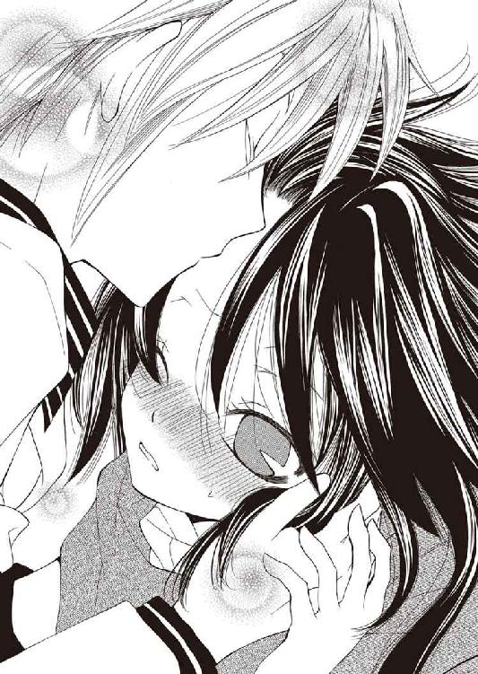
「......ごめん。これ以上はまだ、僕も照れくさくって死ぬ」
「............................................................こっ」
銀色の目を丸くして瞬きしながら、彼女は少しの間そのまま動かず。
ややあって、その顔がまた紅潮していく──明らかに、先ほどとは異なる理由で。
「こ、こ、このッ────与太者、が、あ、あああああああっ！」
「あ痛ッ!? 痛い、ごめんごめんごめん待って、死ぬ！ 痛くて死ぬ!?」
「うるさい馬鹿！ 腰抜け！ 軟弱者の、根性無しっ！ この馬鹿っ──馬鹿ぁッ!!」
アーティアはバーンを岩から蹴り落とし、悲鳴を上げる彼を何度も蹴り回す。よほど怒っているらしく、かつてないほど、容赦ない。
再び、しばし。
「まったく......これが《罪人竜の息吹》をも抑え込んだ男のすることか、与太者め」
「......これが今朝まで死んでた愛弟子にすることっすか、師匠」
「うるさい。馬鹿弟子」
ずたぼろで倒れたバーンの頭を踏みつけ、アーティアはにべもなく言い捨てた。
荒野に捻り込むように踏みつける足の下から這い出し、情けない顔で服についた砂を払うバーンを冷たく睨みつけてから、彼女はふと口調を改めた。
「......さて。それで、これからどうする」
「ん。さっきも言ったけど、まず中央都市へ。その後のことは──そのとき考えるよ」
「む。得意技ではあるな」
「僕らのスタイルだからね」
襟巻に埋まるように頷くアーティアに肩をすくめて、周囲を見渡す。
《息吹》の爆発に吹き飛ばされた荒野は真っ白に輝いている。
遠く空と大地の境界を見つめ、彼は目の上に手をかざした。
「議会も『アビスパス』もなくなっちゃったことだし、これから州国は混乱するんだろうな。世間もいろいろ物騒になると思うから、そこんとこ気をつけてこう」
「ぬう、厄介な」
「まあそうだけど、時代の節目にはチャンスもごろごろ転がってるもんさ。賢くクールにやってけば......その内、伝説になって残るくらいの大成功だって掴めるかもだ」
にっと笑い、歩き出す。
紡いだ言葉は大いなる確信だった。
ここは開拓辺境で。
彼はバーン・フラットランドで。
その隣を、アーティア・アリア・ノルガンディアが歩いているのだから。
「だからそれまで、気楽に気ままに」
「陽気に愉快に、だな」
笑みを交わし、手を打ち合わせる。
誰の足跡もない無垢な荒野に刻んでいく二人分の足跡は。
おそらくは、彼らの華麗なる伝説へ続いているに違いなかった。
「バーン」
「なに？」
「──大好きだ」
「知ってるさ」
あとがき
◆最終巻のあとがきを始めるに相応しいトピックとはなんでしょうか
そう、ノコギリクワガタですね。
どう思います？ 昆虫展みたいなの見かけたんで覗いてみたんですけど、あの面構えはただごとじゃありません。絶対一人二人殺してますよあいつら。
もちろん哺乳類代表としてガンつけ返してきたんですが、隣に来てたチビッコが僕を見るイノセントな瞳が忘れられません。節足動物の肩を持つ気かブラザー！
とまあそんな熱戦が夏頃あったのですけど、なんか誰も感動してくれません。むう。
しかし誤解なきように、坂照はクワガタ大好きです。超カッコいいぜ!!
◆グランドフィナーレ／Thank you for reading,and...
うあああああああバカバカバカバカ今回あとがき二ページしかないんだってば！
改めまして......右の貴方、左の貴女、前の後ろの御方々、全体的にくまなくアモーレ!!
ようこそ、坂照鉄平です。「Ｌ４」──シリーズ最終巻をここにお届けします！
生まれて初めてのシリーズ物、小心翼々、および腰でかさこそ駆け抜けてきましたが「Ｌ」は本巻を持って無事完結となりますってページが、ページが！ なんかクワガタと戦って半分くらい無駄にしてる気がしますが、とにかく大勢の方に支えられてきた本作、皆様へのお礼とラブをもって御挨拶に代えさせていただきましゅるれ、噛んだッ!?
水谷悠珠さん。あなたがいなければ、本作は最後まで走りきる事はできませんでした。
水城葵さん。あなたがいなければ、本作は最初に走り出す事さえできませんでした。
出版に携わってくれた全ての方々。......ほんとガチでご迷惑おかけしました（土下座）。
そして──おそらくは彼らの伝説に付き添ってくださった、『あなた』に最大の感謝を。
皆様、どうもありがとうございましたッ!!
...and Thank you for your"Frontier-Spirit".
See you again someday,somewhere! Yee-ha!!!!!
二〇〇九年 八月 坂照 鉄平
Ｌ４
詐欺師フラットランドのおそらくは華麗なる伝説
坂照鉄平
平成24年11月22日 発行
発行者 山下直久
発行所 株式会社富士見書房
〒102-8144 東京都千代田区富士見1-12-14
http://www.fujimishobo.co.jp/
(C)2009 Teppei Banjo, Yuzu Mizutani, Aoi Mizuki/Fujimishobo